Introdução 3
Estrutura de uma Estratégia 3
Área de declaração de parâmetros de entrada 4
Área de declaração de variáveis e funções 5
Área de código 5
Fluxo de Execução de uma Estratégia 5
Variáveis, tipos de dados e constantes 8
Tipos de dados 8
Séries de dados 9
Arrays 9
Correlação de múltiplos ativos 10
Acessando dados anteriores 12
Constantes 13
Controle de Fluxo 14
If then else 14
For (To /DownTo) Do 15
While 16
Repeat 17
Operadores matemáticos 18
Operadores lógicos 18
Funções 19
Criando Funções (Sintaxe) 21
Funções de biblioteca 22
Funções Matemáticas 22
Funções Gráficas 22
Criando uma estratégia de execução 25
Criando uma automação 28
Opções de entrada 30
Modo de Execução 30
Opções de saída 33
Risco 33
Segurança 34
Acompanhamento 36
Regras de Execução 39
Abrir Estratégias 43
Gerenciador de Estratégias 44
Exportar / Importar Estratégias 44
Criar Regra de Alarme 46
Screening 48
Editor de Estratégias 51
Anexo 318
Exemplos de funcionamento de estratégias 318
Sumário
Estrutura de uma Estratégia
A NTSL (Nelogica Trading System Language) é uma poderosa linguagem criada com um único
propósito: permitir o desenvolvimento dos melhores e mais eficientes sistemas algorítmicos de
operação. A Nelogica oferece juntamente com a NTSL um ambiente de criação pioneiro e revolucionário
chamado AlgoTools. Com o AlgoTools é possível codificar, testar e simular com grande agilidade
qualquer estratégia de operação. Na NTSL, o usuário encontra uma grande facilidade no momento de
criação de suas estratégias, a possibilidade de criar toda ela em português, havendo assim, a facilidade e
fácil entendimento da estratégia criada.
Observe o trecho de código abaixo que representa o indicador média móvel. Esse código apresenta as
três áreas que definem a estrutura de uma estratégia. São elas: área de declaração de parâmetros de
entrada, área de declaração de variáveis e funções e área de código.
Introdução
A área de parâmetros de entrada compreende toda a região entre a palavra reservada input (parâmetro) e
a palavra reservada var. A área de variáveis e funções começa com a palavra var e estende-se até a
palavra begin (inicio) . Finalmente, a região de código inicia-se com a palavra reservada begin (inicio) e
finaliza na palavra end (fim) , conforme imagem abaixo:
Área de declaração de parâmetros de entrada
Na área de declaração de parâmetros de entrada informamos todos os parâmetros externos que a
estratégia usará. Esses parâmetros são fundamentais, pois:
Fluxo de Execução de uma Estratégia
●Definem a interface com o mundo externo, ou seja, é onde usuário poderá alterar e o que servirá
como parâmetro de chamada caso a estratégia seja utilizada em outra interface/estratégia. x x
●Define os itens que serão analisados no processo de otimização.
Paradefinirumparâmetro: NOME_DO_PARÂMETRO (VALOR_DE_INICIALIZAÇÃO)
Exemplo:
Área de declaração de variáveis e funções
Na área de declaração de variáveis informamos todas as variáveis que serão utilizadas na estratégia.
Nesta região também descrevemos funções que desejamos usar no código. As funções devem ser
sempre codificadas após a declaração das variáveis.
Paradeclararumavariável:NOME_DA_VARIAVEL:TIPO
Exemplo:
Área de código
Nesta parte descreve-se o código propriamente dito, ou seja, as regras que utilizam parâmetros,
variáveis e outros dados para calcular sinais e indicadores.
O código de uma estratégia é executado de maneira sequencial. Porém, ele é executado
sequencialmente candle por candle, como se houvesse um laço que percorre toda série de dados de um
ativo.
Sendo assim, a sequência de comandos existente na área de código será executada uma vez para
cada candle existente. Para cada candle, será executado o código da estratégia em um loop implícito. A
regra em pseudocódigo é, portanto:
●Tendo uma série de dados X de tamanho N;
●Para cada item X[i], com i variando de 0 até N-1, executa-se a área de código da estratégia;
●A cada novo dado do ativo, o código da estratégia continua sendo executado, avaliando o último
e o penúltimo candle;
Importante:
●O mesmo candle pode ser processado diversas vezes. Isso ocorre muito em tempo real, onde
cada trade pode gerar uma notificação de reprocessamento do fluxo de execução.
●Quando uma ordem é executada, o fluxo de execução reprocessa o mesmo candle para ativar
as ordens Covers.
●Dependendo da notificação dos candles, podem ser reprocessados candles passados. Isso deve
ser levado em consideração pelo programador.
●Sempre que um candle passado é reprocessado, serão reprocessados todos candles até o atual.
●Em tempo real, quando o código está executando ao mesmo tempo que recebe novos dados do
mercado, o código da estratégia é executado diversas vezes para o último e o penúltimo candle
durante a execução, podendo também executar em candles passados.
Esses processamentos podem alterar valores de variáveis globais ou de série, e podem causar
mudanças na coloração para candles passados ou mudança de comportamento quando o código é
pausado e executado novamente.
Quando estiver utilizando séries em sua estratégia, é importante lembrar que o primeiro tick do candle
terá o valor [0] zerado. Como comentamos anteriormente, sua estratégia será executada não apenas no
último candle e sim também ao passado, devido aos cálculos que precisam ser feitos para garantir que a
NTSL funcione corretamente. É importante ressaltar que não se pode assumir que um candle no
passado não será avaliado, porém, se desejar, é possível inibir o recálculo de algum valor utilizando a
função LastBarOnChart() em uma condição no início do código para evitar isso. É fundamental
compreender que o [0] sempre está se referindo ao candle que está sendo avaliado, e não
necessariamente será do último candle.
Abaixo, um exemplo de como uma variável arbitrária “nValor” funcionaria caso o último candle estivesse
sendo avaliado. Caso eu quisesse acessar o valor dela há 2 candles passados, utilizaria “nValor[2]”.
Porém, caso o código esteja sendo executado em um candle no passado, o nValor[0] seria referente ao
candle atual do processamento, e não ao último candle como no exemplo passado. Os outros candles
também seriam acessados com base no candle que está sendo processado no momento, como no
exemplo abaixo.
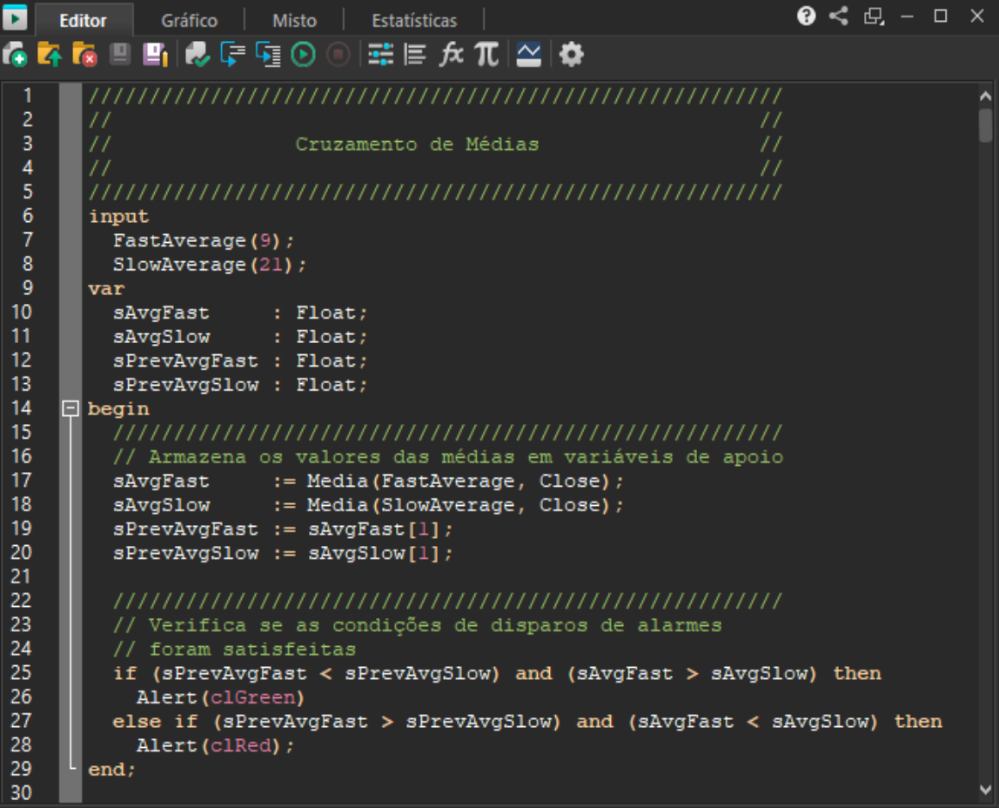
Variáveis, tipos de dados e constantes
As variáveis são utilizadas para armazenar dados, conforme seu tipo específico.
Tipos de dados
Float ou Real - Representa números de ponto flutuante.
Integer ou Inteiro - Representa números inteiros.
Boolean ou Booleano - Representação lógica: True ou Verdadeiro e False ou Falso
Serie - Representa uma série de dados.
A NTSL suporta a conversão implícita de valores Float a Inteiros, isto é, atribuir um valor Float
diretamente a um valor Integer. O valor inteiro será o valor do ponto flutuante, descartandoas casas
decimais. Por exemplo, se eu atribuir 2.99”ou 2.35 a um inteiro, o valor do inteiro será 2. Para outros
comportamentos de arredondamento, a linguagem disponibiliza as funções Ceiling, Floor e Round. Para
mais detalhes sobre essas funções, consulte esse mesmo manual na seção de funções.
As variáveis na linguagem oferecem uma flexibilidade muito maior do que na maioria dos sistemas de
programação conhecidos.
var
Variavel : Array[Tamanho] Of Tipo;
var
i, sum : Integer;
lista : array[1..10] of Integer;
begin
Todas as variáveis são globais, e deve ser dada uma atenção especial quando utilizadas. Ao programar
usando variáveis globais, deve ser levado em consideração o comportamento do processamento do
fluxo de execução, a cada vez que o fluxo de execução é realizado as variáveis podem ter seu valor
alterado com base no último valor que tinham.
Quando uma variável for acessada utilizando colchetes (exemplo: [x]), ela será considerada uma série de
dados pelo compilador. Seu comportamento é diferente: séries iniciam cada candle com seu valor
zerado. Também é possível navegar entre valores atuais e passados, mediante indexação.
Séries de dados
As séries de dados são utilizadas para obter dados específicos de cada Candle.
Séries:
Open ou Abertura - Retorna o valor de abertura de cada candle.
Close ou Fechamento - Retorna o dado de fechamento.
Low ou Minima - Retorna o valor de mínima
High ou Maxima - Retorna o dado de máxima.
Quantityou Quantidade - Retorna o valor de contratos negociados de cada candle
Volume - Retorna o dado de volume financeiro de cada candle
Arrays
Análogo ao tipo Serie, a estrutura de um Array permite o armazenamento de dados de um tipo
específico, contudo, após sua criação, seu comprimento será fixo, o que permite uma alocação menor de
memória.
O acesso aos elementos de um Array é efetuado mediante indexação.
Estrutura da declaração:
A fim de exemplificação, segue um exemplo de declaração de um Array estático de 10 elementos, o
qual é preenchido com valores de 1 a 10 (primeira estrutura de repetição), e efetuado o somatório dos
valores:
const
variavel = Asset("nomeDoAtivo", feedNOMEDABOLSA);
const
WDOFUT = Asset("WDOFUT", feedBMF);
Correlação de múltiplos ativos
É possível ainda acessar os dados, ao utilizar o recurso Asset, onde é necessário parametrizar o ativo
específico, e a bolsa a qual pertence. As bolsas visualizadas na plataforma dependem se o usuário
possui acesso a elas. Na documentação na plataforma está disponível, na aba constantes, apenas os
feeds que o usuário terá acesso.
Bolsas que podem ser parametrizadas:
feedBMF
feedBMFSynthetic
feedBovespa
feedCME
feedDowJones
feedEconomic
feedNasdaq
feedNyse
feedActivTrades
Estrutura da declaração:
A seguir, um exemplo de declaração, e acesso aos dados de fechamento e abertura:
for i:=1 to 10 do
lista[i] := i;
sum:=0;
for i:=1 to 10 do
sum:=sum+i;
Plot(sum);
end;
const
WDO = Asset("WDOFUT", feedBMF);
begin
if(MaxBarsForward = 0) then
PlotText("Ticker: " + WDO.GetAsset + " - Bolsa: " + WDO.GetFeed, clRed, 0, 7);
end;
const
WDO = Asset("WDOFUT", feedBMF);
WIN = Asset("WINFUT", feedBMF);
input
Periodo(20);
var
wdoMedia : Float;
winMedia : Float;
begin
wdoMedia := MediaExp(Periodo, WDO.close);
winMedia := MediaExp(Periodo, WIN.close);
if(WDO.close > wdoMedia) and (WIN.close < winMedia) then
PaintBar(clLime)
else if(WDO.close < wdoMedia) and (WIN.close > winMedia) then
Além do acesso às séries de dados, pode-se retornar o ticker (String) e bolsa (String) do Asset
declarado, a partir das funções GetAsset e GetFeed:
É possível inclusive declarar N ativos, a fim de correlacionar os dados para implementação da
estratégia.
A seguir, um exemplo de coloração, onde será aplicada a cor verde, caso o fechamento do WDO estiver
acima de sua média (20 períodos), e o ativo WIN, fechando abaixo de sua média (20 períodos).
A coloração vermelha será aplicada, caso o fechamento do WDO estiver abaixo da média, e o último
preço do WIN acima de sua média.
Acoloração cinza será identificada, caso não sejam satisfeitas as condições.
begin
Plot(WDOFUT.close);
Plot2(WDOFUT.open);
end;
Atenção: Ao utilizar gráficos atemporais em conjunto com múltiplos ativos, as avaliações de
fechamento de candle serão feitas sempre em função do fechamento de candle do ativo principal.
Nesse momento, os ativos auxiliares não necessariamente terão seus fechamentos no mesmo
momento, já que esses gráficos são atemporais, e não respeitam o mesmo critério de fechamento:
tempo.
Por conta disso, é esperado que o backtest ou o replay tenham resultados diferentes da automação
(que acontece nos ativos em tempo real), isso porque, em tempo real, não se está levando em conta o
mesmo candle fechado para a análise dos dados e, em backtest ou replay, o backtest pode estar
olhando para candles que já estão completos, ou seja, fecharam após o fechamento do candle do ativo
principal. Isso se deve ao fato que no backtest, só avaliamos candles já fechados e não há
conhecimento do tick-a-tick dentro do candle. Deste modo, depois do candle do ativo principal ter
fechado, os candles de outros ativos ainda estavam em formação.
Acessando dados anteriores
O dado atual de uma variável pode ser descrito por Variavel[0]. O número entre colchetes indica o
dado de quantos períodos anteriores deseja-se acessar (sendo 0, portanto, da barra corrente). Para
ilustrar melhor, vamos a um exemplo:
sResult := Preco[1];
A linha de código acima está atribuindo o valor da variável Preco[1] para a variável sResult. Imagine que
Preço corresponde a todos os valores de fechamento da série de dados de um certo ativo, como na
tabela abaixo:
Portanto, Preco[1] refere-se ao valor de ontem do preço de fechamento (sResult vale então 12,40 em
nosso exemplo). Dessa forma, o número inteiro que especificarmos entre colchetes indica ao sistema
quantos períodos no passado deve-se acessar a informação.
PaintBar(clRed)
else
PaintBar(clGray)
end;
Constantes
São utilizadas para a inserção de parâmetros de determinadas funções, estes valores não
podem ser alterados pelo usuário.
Lado da Ordem:
osBuy ou osCompra: Ordem de compra.
osSell ou osVenda: Ordem de venda.
Opções:
optCall - Opção de compra.
optPut - Opção de venda.
Tipo de Ordem:
otLimit - Tipo limite.
otMarket - A mercado.
otStopLimit-Tipostop.
Cores:
clAqua ou clAzulClaro - Cor azul-claro
clBlack ou clPreto - Cor preta
clBlue ou clAzul - Cor azul
clCream ou clCreme - Cor creme
clDkGray ou clCinzaEscuro - Cor cinza-escuro
clFuchsia ou clFucsia - Cor fúcsia
clGray ou clCinza - Cor cinza
clGreen ou clVerde - Cor verde
clLime ou clVerdeLimao - Cor verde-limão
clLtGray ou clCinzaClaro - Cor cinza-claro
clMaroon ou clMarrom - Cor marrom
clMedGray ou clCinzaMedio - Cor Cinza médio
clMoneyGreen ouclVerdeClaro - Cor verde-claro
clNavy ou clAzulMarinho - Cor azul-marinho
clOlive ou clVerdeOliva - Cor verde-oliva
clPurple ou clPurpura - Cor púrpura
clRed ou clVermelho - Cor vermelha
clSilver ou clPrata - Cor prata
clSkyBlue ou clAzulClaro - Cor azul-claro
clTeal-CorVerde-azulado
clWhite ou clBranco - Cor branca
clYellow ou clAmarelo - Cor amarela
IF(Close > Close[1])
IF(nIndex = 10)
IF(bCond = false) and (Volume > 1000)
begin
if(close = close[1]) then
PaintBar(clYellow)
else if(close > close[1]) then
PaintBar(clGreen)
else
PaintBar(clRed);
end;
As instruções de fluxo são utilizadas para administrar a sequência de execução das
instruções dentro de um programa. A NTSL apresenta três tipos desse tipo:
If then else
Se (condição) for verdadeiro executa-se a listagem (comandos 1), caso (condição) seja
falso executa-se (comandos 2). Tanto (comandos 1) quanto (comandos 2) podem ser
sequências de instruções.
A expressão (condição) pode ser qualquer tipo de teste que resulte em verdadeiro ou falso, alguns
exemplos:
A seguir um exemplo de coloração de candles de acordo com a condição presente no If then else .
Se o valor de fechamento da barra atual (Close equivale a Close[0]) for igual ao fechamento da barra
anterior (Representado por Close[1]) executa-se o código que segue a palavra reservada THEN
(ENTÃO) . Caso contrário, o sistema executa o código subsequente até chegar na palavra reservada
ELSE (SENÃO) .
Controle de Fluxo
input
Preco(close);
Periodo(9);
var
sResult : Float;
nIndex : Integer;
begin
sResult := 0;
for nIndex := 0 to Periodo -1 do
begin
sResult := sResult + Preco[nIndex];
end;
Plot(sResult / Periodo);
end;
input
n(6);
var
fatorial : Integer;
i : Integer;
For (To / DownTo) Do
O comando FOR é utilizado para definir um loop controlado, ou seja, o bloco é executado
repetidamente até que a variável de contagem saia do valor inicial e atinja o valor final.
Para a variável controladora, pode-se incremetá-la, a partir do comando To, ou decrementá-la, ao
utilizar na estrutura o DownTo.
Exemplo (ForTo Do):
Observe o código da média móvel, a variável de contagem nIndex começa com o valor 0 e deve
chegar ao valor de Periodo – 1. No exemplo, Periodo foi definido como parâmetro de entrada, para
definir o tamanho da média.
Assim, caso seja parametrizado o valor 0 (Periodo), o comando FOR criará um loop de 9 iterações (de
0 até 8) para cada barra, calculando assim o valor médio para a posição atual.
Exemplo (For To Do x For DownTo Do):
A fim didático, segue um exemplo de cálculo de fatorial, utilizando as duas estruturas.
For To Do:
input
n(6);
var
fatorial : Integer;
i : Integer;
begin
fatorial:=1;
For i:=n DownTo 1 Do
fatorial := fatorial * i;
Plot(fatorial);
end;
input
Preco(close);
Periodo(9);
var
sResult : Float;
nIndex : Integer;
ForDownTo Do:
While
A execução da estratégia ao chegar no comando WHILE testa o resultado de (condição). Caso
(condição) seja verdadeiro (true) a listagem (comandos) é executada. Após a execução a (condição)
volta a ser testada, assim, o loop apenas irá se encerrar quando (condição) deixar de ser verdadeira.
Exemplo:
No código a seguir, reescrevemos o indicador média móvel utilizando a instrução WHILE (ENQUANTO)
ao invés de FOR (PARA) .
begin
fatorial:=1;
For i:=1 To n Do
fatorial := fatorial * i;
Plot(fatorial);
end;
input
n(5);
var
fatorial : Integer;
i : Integer;
begin
fatorial:=1;
i := n;
repeat
begin
fatorial := fatorial * i;
i:=i-1;
end
until (i=1);
Plot(fatorial);
end;
Repeat
Este comando difere-se do For e While, no sentido de que a condição será testada no final da estrutura,
e não no início, portanto, as instruções do bloco serão executadas pelo menos uma vez.
Exemplo:
A fim de comparação com as outras estruturas já abordadas, segue o exemplo de cálculo de fatorial:
begin
sResult := 0;
nIndex := 0;
while(nIndex <= Periodo -1) do
begin
sResult := sResult + Preco[nIndex];
nIndex := nIndex + 1;
end;
Plot(sResult/Periodo);
end;
Os operadores constituem os símbolos matemáticos e lógicos usados em cálculos e comparações.
Operadores matemáticos
Os operadores matemáticos são:
O operador de divisão possui a maior força de precedência, seguido por multiplicação. Assim,
como consta na imagem abaixo:
Operadores lógicos
Os Operadores lógicos são utilizados principalmente para comparações.
"E" lógico
Representado pela palavra reservada and (e), retornará TRUE somente quando as duas
condições de teste forem verdadeiras conforme Tabela Verdade abaixo:
Operadores
"OU" lógico
Representado pela palavra reservada or (ou) , retornará TRUE (verdadeiro) sempre que pelo
menos uma das condições de teste for verdadeira, conforme Tabela Verdade abaixo:
Funções
Conforme visto, funções são declaradas e descritas na área de declaração de variáveis e
funções, abaixo um exemplo de funções:
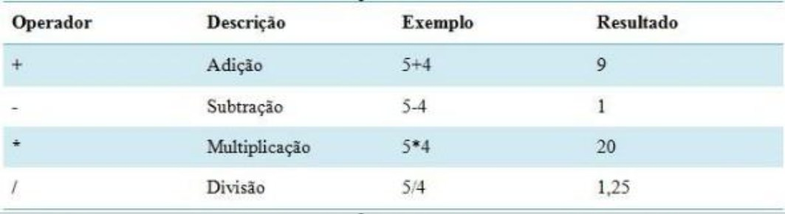
Observe que primeiro são declaradas as seis variáveis usadas na área principal. É sempre
interessante manter o código o mais claro e organizado possível e as funções desempenham um papel
fundamental nessa tarefa.
Criando Funções (Sintaxe)
Function (funcao) Nome da Função ((parâmetro 1 : TIPO); (parâmetro 2: TIPO:);(parâmetro
n: TIPO)): Tipo de Retorno
Begin(inicio)
Comandos
End (fim);
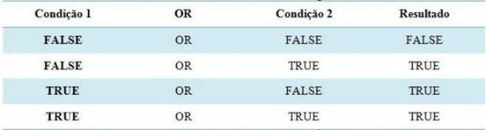
Funções de biblioteca
Além do usuário poder criar seus próprios indicadores, é possível utilizar a biblioteca do sistema, ou
seja, o usuário pode utilizar estratégias já criadas em novas.
Dentro das funcionalidades de bibliotecas, o usuário poderá colorir os gráficos de acordo com as
condições determinadas pelo seu indicador.
Funções Matemáticas
As funções matemáticas têm como finalidade implementar as seguintes funcionalidades:
●Power(valor,potência): Tem como funcionalidade, gerar valores elevadosem determinada
potência;
●Round(valor): Tem como funcionalidade, arredondamento de números quebrados, caso o valor
após a vírgula seja menor do que cinco, arredonda para baixo, caso contrário, arredonda para
cima;
●Sqrt(valor): Tem como funcionalidade mostrar a raiz quadrada de valores desejados pelo
usuário;
Funções Gráficas
Como visto anteriormente, a função Plot realiza a ligação dos valores gerados na estratégia e cria
gráficos de linhas, mas caso haja a necessidade, o usuário também poderá colorir o gráfico de acordo
com o desejado.
Esta funcionalidade denominada PaintBar(cor) permite ao usuário, colorir o gráfico com cores em
determinadas situações do indicador, como na imagem abaixo(as cores podem ser determinadas por
Strings , ou a partir da função RGB):
Automação de Estratégias
A funcionalidade de Back-testing permite ao usuário avaliar uma determinada estratégia, teoria ou
modelo através de uma análise de dados históricos.
Lista de funcionalidades utilizadas para Back-Testing:
●Lista de funções;
●Criar regra de execução;
●Execução da estratégia.
Após criada a estratégia de Back-Testing, para ser adicionado diretamente no gráfico, clique no botão
direito sobre o mouse e selecione a opção "Inserir Regra de Execução".
O código de back-testing simula o mesmo comportamento da automação, as simulações de execução de
ordens são processadas todas ao final do fluxo de execução do candle. Quando ocorre aumento de
posição ao final do fluxo de execução, o código é reprocessado para ativar as ordens de cobertura da
operação (ordens ToCover). O usuário pode observar esse comportamento quando utilizar o modo
debug.
O módulo de Automação de Estratégias tem o objetivo de automatizar as estratégias de execução
criadas no Editor de Estratégias. Ele está disponível nas versões mais avançadas das plataformas
Nelogica, em modo simulação de forma gratuita e disponível para contas reais por meio de módulos
opcionais.
O novo módulo de automação espelha o funcionamento do backtest das estratégias para execução de
ordens reais e em simulador. Para fazer o gerenciamento dessas automações pode-se acessar o menu
Estratégias > Automação de Estratégias.
A janela de Automações de Estratégias permite que possamos criar e gerenciar automações,
acompanhar o resultado de todas as automações de maneira simplificada. Caso queira um
detalhamento maior da automação pode-se clicar com o botão direito e ir em Detalhes. Nos detalhes é
possível acompanhar todos os eventos que a execução gerou, assim como diversos indicadores de
performance da automação.
Back-Testing
Os próximos capítulos detalham desde a criação de uma estratégia de execução utilizando o novo
módulo de Automação de Estratégias, como o usuário pode acompanhar essas automações, e por fim
detalha regras gerais da execução das estratégias.
Criando uma estratégia de execução
Para criar uma automação você precisará criar uma estratégia de execução, que pode ser criada a partir
do Editor de Estratégias. Se você já sabe o que é isso, pode seguir para o próximo passo.
Ao abrir o Editor de Estratégias, você pode criar sua estratégia de execução utilizando funções de
backtest (essas funções irão caracterizar a estratégia como sendo uma estratégia de execução e isso
possibilitará a sua seleção no próximo passo para que a estratégia seja automatizada). Para criar uma
estratégia de execução você deve usar funções do módulo backtest, que pode ser visto na imagem
abaixo:
Sugerimos que você utilize a função Nova estratégia, e selecione exemplos de estratégias de execução
se você não estiver familiarizado com programação ou com o Editor de Estratégias
Abaixo é apresentado um exemplo de estratégia, utilizando o indicador IFR/RS, que pode ser utilizado
no módulo de estratégias automatizadas:
///////////////////////////////////////////////////////////////////
//IFR//
///////////////////////////////////////////////////////////////////
begin
// Verifica se está comprado
if (IsBought) then
begin
// Fecha a posição com uma venda caso o IFR
// esteja superior a 70 (sobrecomprado)
if (RSI(9, 0) > 70) then
SellToCoverAtMarket;
end
// Verifica se está vendido
else if (IsSold) then
begin
// Fecha a posição com uma compra caso o IFR
// esteja inferior a 30 (sobrevendido)
if (RSI(9, 0) < 30) then
BuyToCoverAtMarket;
Criando uma automação
Para criar uma nova automação basta abrir a interface de controle e localizar o botão “Nova Automação”
localizada no menu superior da janela (indicado pelo número 1 na imagem), este botão estará sempre
disponível para e visível na janela. No entanto, caso ainda não possua nenhuma automação criada, o
mesmo botão “Nova Automação” será apresentado em destaque no centro da tela.
end
// Verifica se deve abrir uma posição,
// com o ativo sobrecomprado ou sobrevendido
else if (RSI(9, 0)[1] < 30) and (RSI(9, 0) > 30) then
BuyAtMarket
else if (RSI(9, 0)[1] > 70) and (RSI(9, 0) < 30) then
SellShortAtMarket;
end;
Após clicar nesse botão será aberta a janela de criação da da estratégia automatizada onde será
configurada os parâmetros da automação em duas etapas. A primeira etapa contém configurações
essenciais e obrigatórias para a criação da automação.
Na primeira etapa, nas configurações obrigatórias, é possível definir a conta, a estratégia de execução,
ativo alvo, quantidade por ordem, quantidade máxima da posição e o período que a estratégia usará
como base para as análises.
A Estratégia de execução é o “cérebro” da automação. Aqui será selecionado aquela estratégia
implementada no editor. Ao clicar no botão “Selecionar Estratégia” estarão listadas todas as estratégias de
execução presentes na plataforma. Além disso, caso a estratégia selecionada possua parâmetros de
entrada, os mesmos serão listados nessa janela para que possam ser editados da melhor maneira para a
estratégia específica.
A próxima etapa contém configurações opcionais que podem ser exploradas nos menus acima quando as
Configurações Avançadas estiverem ativas (canto inferior esquerdo). Aqui podemos configurar
opções de Entrada e Saída, Risco e Segurança. Essas opções estão detalhadas a seguir:
Opções de entrada
Nesta seção é possível especificar parâmetros que alterem a estratégia de abertura de ordens da
automatização.
Em ordem de entrada você pode especificar qual vai ser o tipo de abertura de posição, ou seja, se a
estratégia irá abrir novas posições apenas de compra, ou apenas de venda ou ambos os lados.
Em horário de entrada é possível especificar o período de tempo em que a estratégia se manterá
habilitada. Após o horário final a estratégia é pausada. Ao desabilitar esta configuração, a estratégia
permanecerá executando até o usuário pausá-la ou que o software seja encerrado.
É possível também escolher se você deseja confirmar cada ordem de aumento de posição. Neste caso,
a confirmação de ordens será mostrada para cada nova ordem da estratégia.
Modo de Execução
Há dois modos de execução: Realizar envio de ordens no fechamento do candle e Realizar envio de
ordens quando a condição for satisfeita, também chamado de modo Tick a Tick. A mudança de uma
opção para a outra causa grande impacto na maneira como o código da estratégia é interpretado.
Abaixo, é detalhado como cada modo se comporta.
Ordens no Fechamento do Candle
Esta é a configuração padrão do modo de execução da automação e é a que traz maior semelhança
com as operações realizadas por meio do backtest no Editor de Estratégias. Para ativar este modo
selecione a opção “Realizar envio de ordens no fechamento do candle”.
A cada fechamento de candle, o código para envio de ordens é reavaliado e se torna disponível para o
envio de novas ordens de entrada, ou a alteração de ordens de entrada abertas ou de ordens Cover,
caso haja posição. Deste modo, a escolha de tempo gráfico é crucial para sua automação.
Ordens que aumentem a exposição para o mercado e foram enviadas ao final de um candle e que não
forem executadas até o final do candle seguinte serão canceladas ou editadas quando o próximo candle
finalizar, de acordo com a estratégia do usuário. Uma vez que, apenas sabemos que um candle foi
finalizado quando o próximo iniciar em gráficos atemporais, poderá ocorrer a execução de ordens em um
candle subsequente caso o cancelamento chegue na bolsa após a execução da mesma.
É importante ressaltar que a automação poderá apresentar divergências em relação ao backtest ao ser
comparado com a execução da automação em uma conta de simulação (ordens simuladas) ou conta
real (ordens reais), operando ao vivo no mercado real. Isso se deve a diversos fatores, como: Spread,
Margem, RLP, Delays na Bolsa, Alta volatilidade de preço de alguns ativos, entre outros.
Essas diferenças acontecem primordialmente em séries de dados atemporais, as quais podem causar a
criação de muitos candles em pouco tempo. No backtest, por termos zero delay, as ordens são criadas
sempre no candle subsequente, porém no mercado real, onde há delay, por menor que ele seja, ordens
podem ser executadas em candles subsequentes já que não houve tempo na criação do cancelamento
dessas ordens.
Além disso, há uma segunda opção caso esse modo seja selecionado. Ativando essa função, você terá
uma execução mais próxima ao backtest, já que o código executará apenas no fechamento do candle
ou com uma atualização de posição. Com a opção desativada, o código é executado diversas vezes no
mesmo candle.
Ordens ao Satisfazer Condição
Este é o modo avançado de envio de ordens automatizadas, ele não é compatível com o backtest da
aplicação, já que realiza operações a qualquer momento durante a formação dos candles, e fazendo
com que o backtest não consiga simular esse modo de execução. Para ativar este modo selecione a
opção “Realizar envio de ordens quando a condição for satisfeita”.
Neste modo, o código é constantemente avaliado durante a execução da automação e as ordens
podem ser enviadas a qualquer momento durante o candle, uma vez que seu código satisfaça a
condição de envio. Como pode ser visto na imagem acima, existem duas opções que podem ser
escolhidas para este modo. Detalhamos abaixo cada uma delas.
A primeira opção, “Esperar o fechamento do candle para primeira execução” faz com que a
automação aguarde o candle atual que está aberto para começar a executar ordens. Ou seja, apenas
quando um novo candle for criado que ordens serão enviadas.
A segunda opção, “Permitir múltiplos envios e alterações de ordens para a mesma barra” quando
selecionada, faz com que a automação envie e modifique ordens de entrada e saída a medida que o
código satisfazer as condições de envio, mantendo um tempo mínimo entre alterações para proteção de
flood de ordens. Caso esta opção não for selecionada, a automação irá limitar o envio de ordens e
modificações para apenas 1 vez por barra, quando a condição no seu código for satisfeita.
A estratégia de atualização das ordens, quando a opção de múltiplos envios de ordens para a mesma
barra estiver selecionada, seguirá uma equação linear que dependerá de quão perto as ordens sendo
enviadas ou modificadas estão do preço atual, ou seja, caso as ordens estiverem muito longes do preço
atual, suas ordens serão atualizadas menos frequentemente, e caso suas ordens estiverem muito
próximas do preço atual, as ordens serão atualizadas mais frequentemente. Lembrando, todas ordens
serão atualizadas ao mesmo tempo, o que vai importar é sempre a ordem mais próxima do preço para a
decisão da frequência de atualização. As ordens tem um limite mínimo de atualização de 10 segundos,
deste modo elas serão enviadas/alteradas de no máximo de 10 em 10 segundos.
O temporizador de envio de ordens só atualiza quando alguma modificação de ordem é enviada, ou
seja, se o código executado enviar alguma ordem diferente das que já estão apregoadas, ele irá avaliar
quando foi a última modificação feita e quando deverá fazer a próxima modificação e então liberar novos
envios e modificações de ordens.
{ deprecated } A configuração antiga de número de ordens por candle não existe mais, vimos que ela
mais atrapalhava o usuário do que ajudava, e escolhemos seguir em uma estratégia mais segura e
inteligente.
Caso você havia configurado mais de uma ordem por candle para sua automação, a sua configuração irá
automaticamente para “Permitir múltiplos envios e alterações de ordens para a mesma barra”, caso
estivesse configurado para apenas uma, essa opção virá desselecionada.
Da mesma forma que o modo de atualização no fechamento do candle, as ordens de saída sempre
serão atualizadas quando houver um aumento de posição para rebalanceamento das ordens de
cobertura.
O modo de execução Tick a Tick é recomendado para que as estratégias se beneficiem do tempo real, já
que o candle que será constantemente avaliado é o último candle da série que ainda está aberto. Este
modo permite que a entrada seja executada imediatamente na condição especificada, por exemplo,
um cruzamento de médias, ou quando o preço romper um determinado patamar estabelecido.
Relembrando, esse modo não é compatível com o backtest de estratégias de execução, pois depende
dos dados em tempo real, não sendo possível realizar uma previsão de como a automação irá se
comportar. Para testes de performance de sua estratégia tick-a-tick é necessário o uso do replay, ou o
teste no pregão real, utilizando sua conta de simulação.
Opções de saída
Nesta outra etapa da configuração, é possível alterar configurações de saída de sua automação.
Aqui é possível configurar uma estratégia OCO que será aberta junto com suas ordens, mas atenção,
caso você já tenha ordens de saída implementadas em sua estratégia de negociação (ordens de
cobertura), estas não serão mais executadas já que as ordens OCO terão preferência.
Também é possível configurar nesta seção a zeragem automática por horário. A plataforma precisa
estar aberta para que a zeragem aconteça, assim como para que a automação funcione.
Risco
Seguindo as configurações temos as configurações de risco da automação. Na seção Pausar e Zerar ao
Alcançar é possível configurar parâmetros que irão pausar e encerrar as posições abertas de acordo
com um objetivo de ganho, ou um limite de perda. Caso você não deseje encerrar a posição quando
atingir um objetivo de ganho seleciona a opção “Não Zerar ao Atingir Objetivo de Ganho”.
Já a seção Pausar ao Alcançar possibilita que a automação seja pausada quando alcançados os
números de perdas consecutivas e máximo de operações configurados.
Aqui também disponibilizamos um atalho para que você possa configurar o risco global da carteira/conta
no gerenciador de risco da plataforma.
Segurança
Por fim, na seção Segurança, temos algumas configurações para definir o comportamento da estratégia
em caso ocorra um erro de execução no código da mesma ou eventuais mudanças do mercado, como a
entrada do ativo em leilão.
Uma vez criada a automação, você pode visualizá-la na janela Automação de Estratégias:
Acompanhamento
Para acompanhar a sua automação você pode visualizar um resumo rápido das principais informações na
lista de automações da janela Automação de Estratégias. Nela você pode visualizar o status, conta e
carteira em que a automação está vinculada, ativo, nome da estratégia, período gráfico e os resultados
relacionados à execução.
Você também pode visualizar nesta janela um resumo das estatísticas relacionadas a essa estratégia
que contém mais detalhes da estratégia:
Para ligar/pausar uma automação de maneira individual pode-se utilizar o painel, e clicar em executar:
Através do menu de contexto também é possível zerar a posição de uma estratégia pausada ou Pausar +
Zerar Posição de uma estratégia em execução. Podemos também editar o código da automação no
Editor de Estratégias, Excluir a automação que irá excluir também a carteira atrelada a ela. Para realizar
edições na sua automação, você pode, dentro do interface de controle, clicar com botão direito na
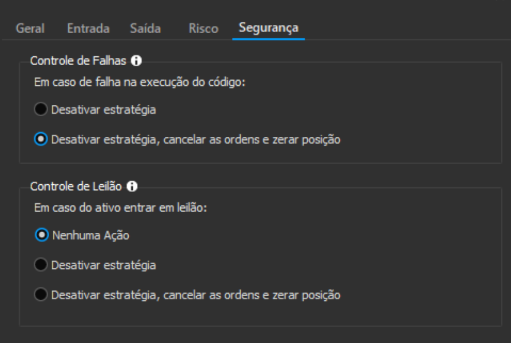
estratégia desejada e ir em “Editar Automação” ou clicar diretamente na engrenagem. Lembrando que
caso a sua automação esteja ligada, ao realizar alguma edição ela será pausada.
Para acompanhar os detalhes do que a execução está executando, vá em Detalhes. Nesta janela você
poderá acompanhar tanto as ordens e sinais que a estratégia está gerando, como também acompanhar a
performance e resultados da estratégia mais detalhadamente.
Na janela de Automações é possível utilizar os botões no canto superior direito da interface de controle
para pausar todas as automações em execução ou para pausar e zerar todas as posições em aberto:
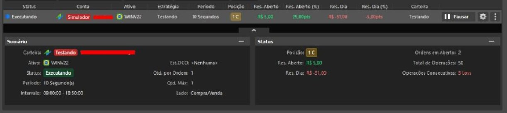
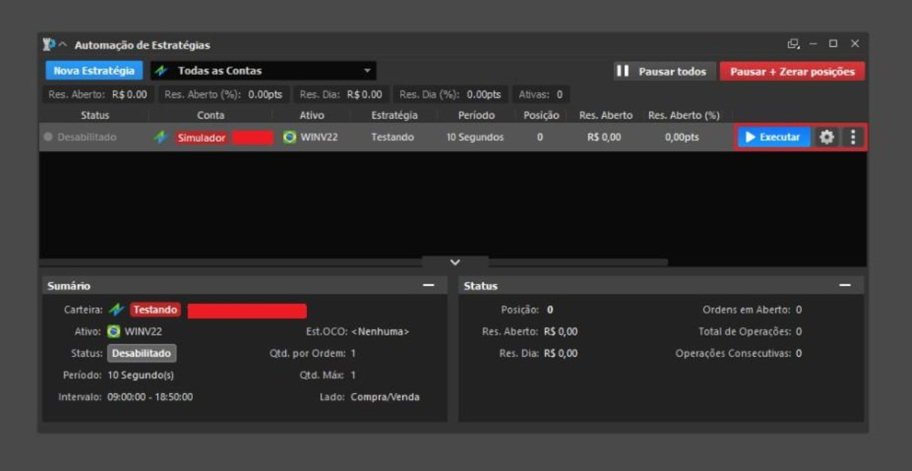
Caso você possua alguma automação ligada será possível identificar mesmo com a janela de
estratégias automatizadas fechadas, pois no menu superior da sua Plataforma será destacado em azul
o menu de Estratégias.
Neste menu você será informado quantas estratégias você possui em execução e permitirá que você
tome ações rápidas através do menu como pausar tudo ou pausar e zerar tudo.
Regras de Execução
As automações de estratégias funcionam com as mesmas regras que são utilizadas no backtest das
estratégias de execução. Para entender melhor o que cada função faz relacionada à execução de
ordens, recomendamos primeiramente a leitura das funções de backtest. Aqui detalhamos as regras por
trás dos mecanismos de automação para facilitar o entendimento do usuário na hora de implementar
uma estratégia de execução já pensando na sua automação.
Modo de Execução do Backtest: OHLC e Tick a Tick
O Profit Ultra permite escolher entre dois modos de execução para o backtest: OHLC ou Tick a Tick.
Abaixo, explicamos como cada um desses modos opera e suas características específicas.
O modo OHLC (Open, High, Low, Close) utiliza apenas os preços de abertura, máxima, mínima e
fechamento de cada candle para realizar os cálculos e simular o movimento das operações.
As saídas Limit e Stop utilizam os preços de máxima, mínima e fechamento para simular as execuções.
Como os movimentos dentro do candle não são considerados, as simulações são menos detalhadas em
relação ao fluxo real de preços intraday. Em casos de ordens de stop ou gain, o movimento do preço é
verificado com base nos níveis OHLC do candle.
O modo Tick a Tick utiliza exatamente o fluxo dos preços dentro de cada candle para simular as
operações. Isso garante maior precisão ao refletir como as ordens seriam executadas em tempo real.
Permitindo simulações de saídas Limit e Stop nos exatos pontos em que seriam executadas durante o
pregão.
Em simulações OHLC, o backtest pode concluir que um stop ou um gain não foi atingido ao avaliar
apenas os preços do OHLC, por achar que a ordem executou após a variação de preço. Já no modo
Tick a Tick, o mesmo stop pode ser executado corretamente ao analisar os preços intraday,
assegurando a aderência à lógica operacional real.
Por utilizar uma granularidade mais fina, o modo Tick a Tick tem menor disponibilidade de histórico
quando comparado ao OHLC. Isso pode afetar simulações de períodos longos. Essa limitação pode ser
encontrada ao executar uma estratégia no modo Tick a Tick.
Considere a imagem abaixo, que ilustra dois candles de alta, onde a linha verde representa o
movimento real dos preços dentro do candle e o ponto vermelho, a ponto onde uma ordem foi enviada.
No caso de um backtest enviando uma ordem alguns ticks acima da abertura, no modo OHLC, a ordem
só seria executada após o preço atingir a mínima (LOW) e, posteriormente, alcançar o fechamento
(CLOSE). Já no modo Tick a Tick, a ordem poderia ser executada assim que o preço atinge o nível
programado, mesmo antes do candle ser concluído, permitindo, por exemplo, que uma ordem de LOSS
seja disparada antes do fechamento do candle.
Reprocessamento do candle em aumentos de posição
Caso houver execução de alguma ordem (aumento de posição), o código é reprocessado para a criação de
eventuais ordens de cobertura da operação (ordens ToCover). A reexecução da estratégia para
posicionamento de ordens de cobertura acontece quando ordens forem executadas, ou seja, podem
ocorrer no meio de um candle para não deixar o usuário exposto a riscos do mercado. Nesse
reprocessamento, por mais que o código faça a chamada de ordens que poderiam aumentar a
exposição, essas ordens não são enviadas.
Mais detalhes sobre ordens de cobertura podem ser vistos a seguir.
Ordens para aumento de posição (Buy e Sell)
É possível enviar ordens Buy e Sell tanto quando você estiver comprado ou vendido, porém quando
uma ordem Buy for enviada enquanto você estiver em uma posição vendida, ela será tratada como uma
ordem de cobertura automaticamente. O mesmo acontece para uma ordem Sell, quando você estiver
uma posição comprada, ela será tratada como uma ordem de cobertura. Caso contrário, elas apenas
aumentaram a sua posição até o limite definido na configuração da estratégia.
Ordens conflitantes são automaticamente gerenciadas pelo automatizador, ou seja, quando for enviada
uma ordem BuyToCover e você estiver em uma posição comprada ou zerada, ela será ignorada, da
mesma maneira se for enviada uma ordem SellToCover e você estiver em uma posição vendida ou
zerada, ela também será ignorada.
Ordens de cobertura de posição (BuyToCover e SellToCover)
Ordens de cobertura, ou ordens ToCover. nunca irão inverter a sua posição; elas garantem que a ordem
contrária vai respeitar sempre a posição da operação. Recomendamos que o programador utilize
sempre ordens de saída de posição como ordens ToCover explicitamente no código para garantir que o
operacional que o usuário está programando está correto. Para isso, as ordens ToCover são sempre
enviadas como ordens OCO, logo você não precisa se preocupar em gerenciar e cancelar eventuais
ordens de cobertura que poderiam ficar abertas após a execução de apenas uma das pernas de saída.
Ordens de cobertura são enviadas ou atualizadas a toda mudança de candle, cabe ao usuário gerenciar
a quantidade de cada ordem caso você esteja posicionado em mais de um lote para cobrir corretamente
a exposição ao mercado. Na finalização do candle, caso o código indique um envio de um mesmo
número de ordens de cobertura, será realizada uma edição da OCO para os novos valores de preço
correspondentes. Por outro lado, caso o envio aumente ou diminua o número de ordens para aquele
candle, a OCO aberta será cancelada, e será enviada uma nova OCO com as saídas definidas pelo
código.
Ordens OCO
Caso o usuário configure uma ordem OCO pela configuração da automação, as ordens de cobertura
definidas pela estratégia serão desconsideradas, já que todas ordens já vão possuir essa cobertura
natural da ordem OCO.
Abrir Estratégias
Indicadores que atualizam valores anteriores
Se forem utilizados indicadores que alterem seus valores em candles antigos (candles já finalizados), o
valor do indicador que será considerado será o do momento em que o candle finalizar, desse modo caso
não houver a entrada da execução na virada do candle, não será feito envio de ordens para aquele
candle no futuro, mesmo que algum indicador altere seu valor no passado e troque a decisão de envio de
ordem. Alguns exemplos de indicadores que podem causar esse comportamento são indicadores que
tem apenas um valor durante todo dia, por exemplo: Preço Ask e Bid e também indicadores que
decidem apenas depois de alguns candles, como por exemplo o Detector de topos e fundos ou a linha
Chikou Span (2) do indicador IchimokuCloud, entre outros.
Na opção de "Abrir Estratégias", o usuário terá acesso a três abas, elas são:
●Todas: O usuário poderá ver todas as estratégias dentro do sua plataforma;
●Minhas Estratégias: O usuário irá filtrar para somente exibir todas as estratégias criadas por ele
dentro da plataforma;
● Exemplos: O usuário irá filtrar para exibir exemplos de estratégias que já vem como padrão na
plataforma.
Além das abas, o usuário também poderá pré-visualizar o seu código de estratégia para confirmar
informações.
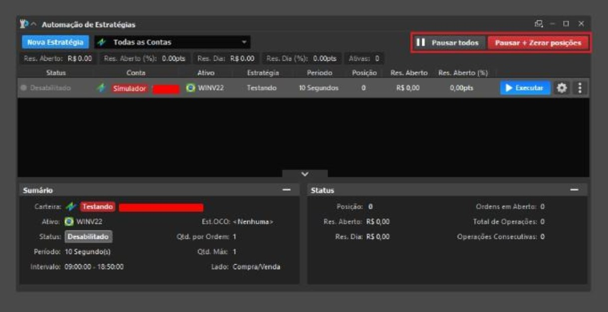
Gerenciador de Estratégias
A opção de gerenciador de estratégias, permite ao usuário escolher uma determinada
estratégia criada para edição, fazendo com que o Editor de estratégias carregue a estratégia
determinada, ao clicar em "Editar".
O usuário também poderá excluir as estratégias desejadas, selecionando as mesmas e
clicando no botão "Excluir", além da funcionalidade de renomear a estratégia através do
botão "Renomear".
Exportar / Importar Estratégias
Nesta funcionalidade, permite ao usuário exportar as estratégias criadas por eles para que possam ser
importadas novamente.
O usuário também tem a possibilidade de querer exportar o código fonte da estratégia ou apenas o
arquivo executável.
Na importação, o usuário tem a funcionalidade de escolher quais estratégias serão carregadas e
adicionadas junto à sua plataforma Nelogica.
A funcionalidade de criar regra de coloração, mostra de forma visual, como criar uma regra de
coloração com as condições desejadas.
A cada vez que for clicado no botão "+" irá criar uma condição para que se Condição 1 e Condição 2
sejam verdadeiras irá colorir de acordo com a cor desejada, na cor padrão será se caso as condições
não retornem verdadeiro irá pintar em determinada cor.
Caso o usuário deseje utilizar outras informações, ele irá poder clicar no botão "Mais" que se encontra
ao lado da variável para selecionar outras condições.
Criar Regra de Alarme
A funcionalidade do Criar Regra de Alarme mostra de forma visual, como criar uma regra de alarme de
acordo com as condições desejadas.
A cada vez que for clicado no botão "+", será criada uma condição para que se Condição 1 e Condição 2
sejam verdadeiras irá acionar o alarme desejado, e o pop-up de alarme será emitido de acordo com a cor
estabelecida.
Caso o usuário deseje utilizar outras informações, ele poderá clicar no botão "Mais" que se encontra
ao lado da variável para selecionar outras condições.
Após a criação da regra de alarme, a estratégia deverá ser ativada, através do menu "Ferramentas >
Gerenciador de Alarmes > Estratégias", selecione "Novo Alarme".
Criar Regra de Coloração
Criar Regra de Execução
A funcionalidade do Criar Regra de Execução mostra de forma visual, como criar uma regra de
execução de acordo com as condições desejadas.
A cada vez que for clicado no botão "+" irá criar uma condição para que se Condição 1 e Condição 2
sejam verdadeiras irá acionar o alarme desejado e irá colorir o pop-up de alarme de acordo com a cor
estabelecida.
Caso o usuário deseje utilizar outras informações, ele poderá clicar no botão "Mais" que se encontra
ao lado da variável para selecionar outras condições.
Screening
A funcionalidade de Screening mostra, de forma visual, os ativos que se encontram na base de dados
e que satisfazem as condições da estratégia.
No filtro, ao clicar no botão "+", será criada uma condição para que, se Condição 1 e Condição 2
sejam verdadeiras, irá mostrar o ativo dentro da aba selecionada.
Caso o usuário deseje utilizar outras informações, ele irá poder clicar no botão "Mais" que se encontra
ao lado da variável para selecionar outras condições.
Ao clicar no botão "Aplicar" a estratégia criada é aplicada à lista e irá mostrar os ativos que satisfazem
a condição.
Inserir Regra de Coloração
A funcionalidade de inserir regra de coloração permite ao usuário colorir o gráfico de acordo como ele
determinou os parâmetros nos gráficos dos ativos.
As regras de coloração serão feitas seguindo a ideologia de um indicador ou seja, respeitando o layout
atual da janela.
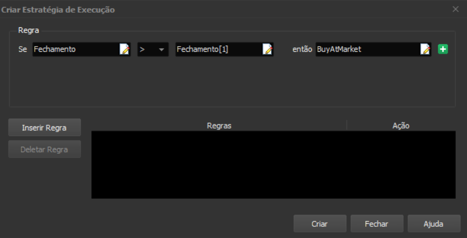
Condições de Coloração
As condições de coloração permitem ao usuário, quais valores ele irá utilizar no momento em que irá
criar uma nova regra de coloração, elas podem ser:
●Numérico: O usuário poderá utilizar números inteiros ou reais;
●Cotação: O usuário poderá utilizar os valores presente nas cotações, sendo elas: Abertura,
Máxima, Mínima, Fechamento, Quantidade;
●Indicador: O usuário poderá utilizar os valores presentes nos indicadores criados por ele, e
alterar os parâmetros presentes para de acordo com a vontade para coloração;
●Cotações Anteriores: Permite ao usuário utilizar os valores presentes nas cotações anteriores,
conforme mostra na guia Variáveis e séries de dados.
Editor de Estratégias
A janela de Editor de estratégias é onde o usuário poderá criar suas próprias estratégias, juntamente
com a funcionalidade de visualizar diretamente no gráfico a estratégia criada.
O Editor de Estratégias possui três abas:
●Editor:Onde o usuário escreve a estratégia seguindo as instruções da linguagem NTSL.
●Gráfico: Onde o usuário visualiza a estratégia após executada diretamente no gráfico;
●Misto: É onde o usuário visualiza as informações da aba Editor e a aba Gráfico em uma só,
onde a cada vez que ele execute o código, já irá aparecer diretamente no gráfico.
●Estatísticas: Ao executar uma estratégia de execução pelo editor, o usuário poderá visualizar a
estatística do relatório de performance.
Propriedades do Editor de Estratégias
Dentro do Editor de estratégias o usuário irá possuir as seguintes opções:
Nova Estratégia: Onde o usuário irá poder criar uma nova estratégia;
Abrir Estratégia: Permite ao usuário abrir estratégias já criadas e edita-las
Fechar: Fecha a aba da estratégia atual;
Salvar: Salva a estratégia atual;
Salvar Como: Salva a estratégia atual, podendo ser adicionado uma descrição da mesma;
Verificar Sintaxe: Realiza a leitura do código verificando se há erros e a transforma em uma
estratégia executável;
Trace: Mostra passo-a-passo o que o código da estratégia está realizando e mostrando os valores
naquele momento;
Trace Into: Semelhante ao Trace, mostra passo a passo o que a estratégia está realizando no
momento de criação, porém, quando há funções no código ele irá abri a função para mostrar ao usuário
que a função está executando;
Executar: Após apertar o botão "Compilar", o botão executar irá executar a estratégia criada e a
mostra no gráfico;
Parar: Tem como funcionalidade parar a estratégia para que o usuário pare a execução da estratégia
criada;
Propriedades: Tem como funcionalidade mostrar as propriedades que irão constituir a estratégia,
como desenho no gráfico, linhas guias e escala.
Nas propriedades do Editor de estratégias, o usuário irá poder utilizar valores e informações adicionais
no momento de criação da estratégia:
●Parâmetros: Permite ao usuário utilizar estratégias já criadas como parâmetros para uma nova
estratégia junto com o valor desejado para a mesma;
●Aparência: Permite ao usuário determinar se deseja que a estratégia seja mostrada em linha ou
em histograma;
●Linhas Guia: Permite ao usuário criar linhas para se basear como exemplos de linha de suporte
e resistência.
●Preenchimento: Configuração para visualizar um preenchimento entre as linhas.
Nova Estratégia
Ao clicar no botão de Nova Estratégia, o usuário poderá escolher entre as opções abaixo:
●Em branco (Texto): Ao escolher desta maneira, o usuário ira criar uma estratégia em branco;
●Indicador: Ao abrir a estratégia, irá carregar um exemplo de estratégia de indicador para o
usuário;
●Coloração: Ao abrir a estratégia, irá carregar um exemplo de regra de coloração para o usuário.
●Execução: Será criado um exemplo, com uma função para estratégia de execução.
●Screening: Será inserido um exemplo para a criação de um filtro para o Screening.
●Alarme: Será criado um exemplo, com a função Alert.
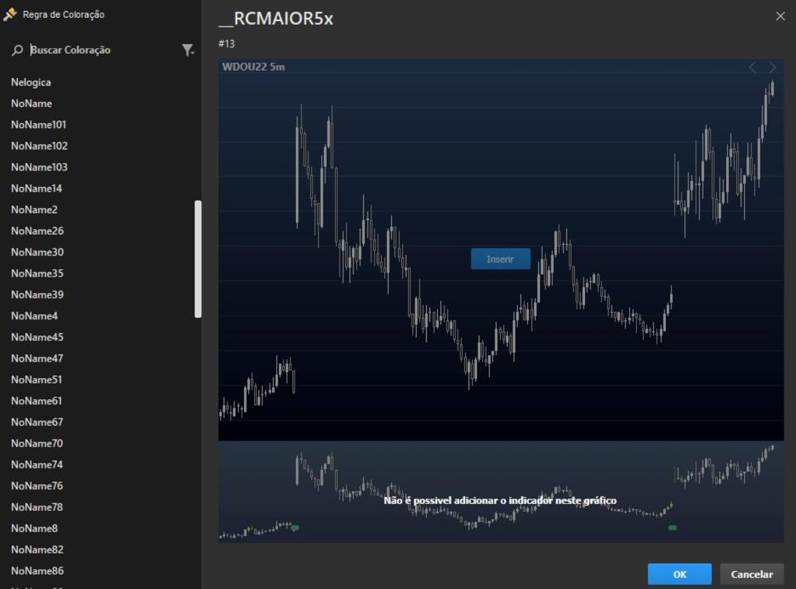
Lista de Funções
A seguir de forma descritiva, segue a lista de funções presentes nas plataformas da Nelogica:
Alarme
Alert(Cor : Integer): Dispara uma notificação de alarme.
Back-Testing
BuyAtMarket: Realiza envio de ordem de compra a mercado.
BuyLimit(Preco: Float; Quantidade : Float= ‘’): Realiza envio de uma ordem limite de compra.
BuyPosition: Retorna o tamanho da posição da compra.
BuyPrice: Retorna o preço de compra da posição.
BuyStop(Stop : Float; Limite : Float; Quantidade : Float = ‘’): Realiza envio de ordem de compra stop.
BuyToCoverAtMarket: Realiza o fechamento deuma operação de venda.
BuyToCoverLimit(Preco : Float; Quantidade : Float = ‘’): Envia uma ordem de compra limite para fechar a
operação.
BuyToCoverStop(Stop : Float; Limite : Float; Quantidade : Float = ‘’): Realiza o envio de ordem de
compra stop para fechar posição.
CancelPendingOrders: Cancela as ordens pendentes.
ClosePosition:Envia ordens para encerrar todas as posições.
HasPendingOrders:Retorna verdadeiro (True) caso existamordens pendentes.
HasPosition: Retorna verdadeiro se a posição não é zero.
IsBought: Retorna verdadeiro (True) casoexista posição de compra.
IsSold: Retorna verdadeiro (True) caso exista posição de venda.
MyPrice: Retorna a média entre a máxima, mínima e fechamento.
Position: Retorna o tamanho da posição, positivo para compra e negativo para venda.
Price: Retorna o preço de compra ou venda da posição, dependendo se estiver comprado ou vendido.
ReversePosition: Envia ordens para inverter a posição.
SellPosition: Retorna o tamanho da posição de venda.
SellPrice: Retorna o preço de venda da posição.
SellShortAtMarket: Envia ordem de venda a mercado para abrir posição.
SellShortLimit(Preco : Float; Quantidade : Float = ‘’): Envia ordem de venda do tipo limite.
SellShortStop(Stop : Float, Limite : Float; Quantidade : Float = ‘’): Abre uma posição de venda
enviando uma ordem do tipo Stop.
SellToCoverAtMarket:Realiza uma ordem de venda a mercado caso exista uma posição de compra.
SellToCoverLimit(Preco : Float; Quantidade : Float = ‘’): Envia uma ordem de venda limite para fechar a
operação.
SellToCoverStop(Stop : Float, Limite : Float; Quantidade : Float = ‘’): Envia uma ordem stop
caso exista uma posição de compra.
SendOrder(Lado : Integer, Tipo : Integer, Quantidade : Float , Limite : Float, Stop : Float): Envia uma
ordem customizada.
DailyResult(OpenResult : Boolean): Retorna o resultado diário
OpenResult: Retorna o resultado diário das operações em aberto
XRay(strName : String, bValue : Boolean, strGroup : String, dValue : Float, ColorOn : Color, ColorOff :
Color): Adiciona uma variável a lista do Raio-X da automação
Depuração
ConsoleLog(Content : String, Color : Integer = clBlack) Imprime uma string no terminal de console para
ajudar na depuração do código.
Calendário
BarAnnualization: Retorna o fator de anualização, baseado no intervalo da barra.
BarDuration: Retorna, em minutos, a duração da barra atual.
BarDurationF: Retorna, em minutos, a duração da barra atual.
BarType: Retorna um número referente à periodicidade setada.
CalcDate(DataReferencia : Integer, DiasDeslocamento : Integer): Retorna o resultado ao
efetuar a adição ou subtração de datas.
CalcTime(HoraReferencia : Integer, MinutosDeslocamento : Integer): Retorna o cálculo
de adição ou subtração de horas.
CloseD(QuantidadeDiasAnteriores : Integer): Retorna o valor de fechamento de determinado
dia anterior.
CloseM(QuantidadeMesesAnteriores : Integer): Retorna o valor de fechamento de determinado
mês anterior.
CloseW(QuantidadeSemanasAnteriores : Integer): Retorna o valor de fechamento de
determinada semana anterior.
CloseY(QuantidadeAnosAnteriores : Integer): Retorna o valor de fechamento de determinado
ano anterior.
CurrentAssetDate: Retorna a data atual do ativo no gráfico.
CurrentDate: Retorna a data atual do sistema.
CurrentTime: Retorna a hora atual do sistema.
Date: Retorna a data da barra que está sendo analisada.
DayOfMonth(Data : Integer): Retorna o dia do mês de uma data específica.
DayOfWeek(Data : Integer): Retorna o dia da semana de uma data específica.
DaysToExpiration(Mes : Integer, Ano : Integer): Retorna a quantidade de dias úteis restantes até a
terceira sexta-feira de um determinado mês e ano.
ELDate(Ano : Integer, Mes : Integer, Dia : Integer): Retorna a data em EasyLanguage
format(YYYMMDD).
ELDate_Consol(Data:Integer):TransformaumadataYYYYMMDDemEasyLanguage
format(YYYMMDD).
FindBar(Data : Integer, Hora : Integer): Localiza uma barra de uma data e hora específica.
Friday: Retorna o número 5 referente ao dia da semana: sexta-feira.
HighestVolume (Interval : Integer; Offset : Integer = 1; Type : Integer = 0; Standard : Boolean = True;
Auction : Boolean = True; Cross : Boolean = True)|Rank : Integer|: Retorna o maior volume de acordo com o
tipo.
HighestVolumePrice (Interval : Integer; Offset : Integer = 1; Type : Integer = 0; Standard : Boolean = True;
Auction : Boolean = True; Cross : Boolean = True) )|Rank : Integer|: Retorna o preço do maior volume de
acordo com o tipo.
HighD(QuantidadeDiasAnteriores : Integer): Retorna o valor de máxima de determinado
dia retroativo.
HighM(QuantidadeMesesAnteriores : Integer): Retorna o valor de máxima de determinado
HighW(QuantidadeSemanasAnteriores : Integer): Retorna o valor de máxima de
determinada semana anterior.
HighY(QuantidadeAnosAnteriores: Integer): Retorna o valor de máxima de
determinado ano anterior.
LastCalcDate:
Retorna a data do último candle completo do gráfico.
LastCalcTime:
Retorna o horário de fechamento do último candle.
LastDayOfMonth(MesReferencia : Integer): Retorna o valor do último dia do mês de
referência.
LowD(QuantidadeDiasAnteriores : Integer): Retorna o valor de mínima de determinado dia anterior.
LowM(QuantidadeMesesAnteriores : Integer): Retorna o valor de mínima de determinado
mês anterior.
LowW(QuantidadeSemanasAnteriores : Integer): Retorna o valor de mínima de
determinada semana anterior.
LowY(QuantidadeAnosAnteriores : Integer): Retorna o valor de mínima de determinado
ano anterior.
MinutesIntoWeek - Retorna o número de minutos até domingo 12 am.
Monday: Retorna o número 1 referente ao dia da semana: segunda-feira.
Month(Date : Integer): Retorna o mês de uma data específica.
Next3rdFriday(Mes : Integer): Retorna quantos dias úteis faltam para a terceira sexta-feira
de determinado mês.
OpenD(QuantidadeDiasAnteriores : Integer): Retorna o valor de abertura de determinado
dia anterior.
OpenM(QuantidadeMesesAnteriores Integer): Retorna o valor de abertura de determinado
mês anterior.
OpenW(QuantidadeSemanasAnteriores: Integer) Retorna o valor de abertura de
determinado semana anterior.
OpenY(QuantidadeAnosAnteriores : Integer): Retorna o valor de abertura de determinado
ano anterior.
RS_BarsPerDay:Obtémo número estimado de barras de determinada periodicidade(em minutos).
Saturday: Retorna o número 6 referente ao dia da semana: sábado.
Sunday: Retorna o número 0 referente ao dia da semana: domingo.
Thursday: Retorna o número 4 referente ao dia da semana: quinta-feira.
Time: Retorna a hora de abertura da barra atual.
TimeToMinutes(Hora :Integer):Converteumhorário emminutos.
Today: Retorna a data atual do sistema.
Tuesday:Retorna o número 2 referente ao dia dasemana: Terça-feira.
VolumeAtPrice (Interval : Integer; Offset : Integer = 1; Type : Integer = 0; Standard : Boolean = True;
Auction : Boolean = True; Cross : Boolean = True)|Preço : Float|: Retorna o volume financeiro em
determinado preço.
VolumeD(QuantidadeDiasAnteriores : Integer): Retorna o volume financeiro de determinado
dia retroativo.
VolumeM(QuantidadeMesesAnteriores : Integer): Retorna o volume financeiro de determinado
mês retroativo.
VolumeW(QuantidadeSemanasAnteriores : Integer): Retorna o volume financeiro de
determinada semana anterior.
VolumeY(QuantidadeAnosAnteriores : Integer): Retorna o volume financeiro de determinado
ano anterior.
Wednesday: Retorna o número 3 referente ao dia da semana: Quarta-feira.
Year(Date : Integer): Retorna o ano de uma data específica.
Candlestick
C_3WhSolds_3BlkCrows(Comprimento : Integer, Fator : Integer, var o3WhiteSoldiers : Integer, var
o3BlackCrows : Integer): Identifica a ocorrência de dois tipos de candles: 3 White Soldiers e 3 Black
Crows.
C_BullEng_BearEng(Comprimento:Integer,varoBullishEngulfing:Integer,var
oBearishEngulfing : Integer): Identifica a ocorrência de dois tipos de candles: Bullish Engulfing e Bearish
Engulfing.
C_Doji(Percentual : Integer): Identifica a ocorrência de um candle: Doji.
C_Hammer_HangingMan(Comprimento : Integer, Fator : Integer, var oHammer : Integer, var
oHangingMan : Integer): Identifica a ocorrência de dois tipos de candles: Hammer e Hanging Man.
C_MornDoji_EveDoji(Comprimento: Integer, Percentual : Float, var oMorningDojiStar
: Integer, var oEveningDojiStar : Integer): Identifica a ocorrência de dois tipos de candles:
Morning Doji Star e Evening Doji Star.
C_MornStar_EveStar(Comprimento:Integer,varoMorningStar:Integer,var
oEveningStar : Integer): Identifica a ocorrência de dois tipos de candles: Morning Star e
Evening Star.
C_PierceLine_DkCloud(Comprimento: Integer, varoPiercingLine : Integer, var
oDarkCloud : Integer): Identifica a ocorrência de dois tipos de candles: Piercing Line e Dark
Cloud.
C_ShootingStar(Comprimento : Integer, Fator : Integer): Identifica a ocorrência de candles:
C_ShootingStar
.
Exemplos
DiMaisDiMenos(Periodo :Integer): Exemplo deimplementação doindicadorDI+/DI-.
IFR(Periodo: Integer): Exemplo de implementação do indicador IFR.
Media(Periodo : Integer, TipoSerie : Serie): Exemplo de implementação do indicador Média
Móvel(Aritmética).
MediaExp(Periodo : Integer, TipoSerie : Serie): Exemplo de implementação do indicador Média
Móvel(Exponencial).
PaintVar: Exemplo deimplementação deestratégia decoloração.
WellesSum(Periodo : Integer, SerieReferencia : Serie, Offset : Integer): Exemplo de implementação do
indicador WellesSum.
Gráficas
AvgPrice: Retorna a média entre Abertura, Máxima, Mínima, Fechamento de determinado candle.
BarCount: Retorna a quantidade total de barras.
CurrentBar: Retorna o índice atual da barra(candle).
GetPlotColor(NumeroPlot : Integer): Retorna o valor numérico da cor de determinado Plot.
GetPlotWidth(NumeroPlot : Integer): Retorna o valor da espessura de determinado Plot.
GraphicInterval: Retorna o intervalo do gráfico.
GraphicOffset: Retorna o offset do gráfico.
HorizontalLine (Y : Float; Color : Interger): Adiciona um estudo horizontal, em um indicador.
LastBarOnChart:Retorna se é a última barra do gráfico.
Leader: Retorna se ponto médio é menor que mínima ou maior que máxima de candle anterior.
MaxBarsBack:Percorre a lista da série, a partir do primeiro candle criado(índice 0).
MaxBarsForward: Percorre a lista da série, a partir do candle atual(índice 0).
MedianPrice: Retorna a média entre a máxima e a mínima de determinado candle.
NoPlot(NumeroPlot : Integer): Remove determinado Plot.
PaintBar(Cor : Integer): Colore os candles e indicadores do gráfico.
Plot(Dado : Float): Desenha o indicador de acordo com o gráfico.
PlotN(Plot : Interger; Valor : Float): Adiciona um valor em um indicador.
PlotText(Content : String; Color : Integer; Position : Integer; FontSize : Integer; dPrice : Float):
Adiciona um texto a um indicador.
Range:Retorna o valor de Máxima menos Mínima do determinado candle.
RangeLeader:Verificase a barra atual é Range Leader.
RGB(Red: Integer, Green : Integer, Blue : Integer): Coloração a partir dos parâmetros RGB.
SetPlotColor(NumeroPlot :Integer, Cor : Integer): Altera a coloração de determinado Plot.
SetPlotStyle(NumeroPlot : Integer; Estilo : Integer): Altera o estilo da linha de um plot
específico.
SetPlotType(Number : Integer; Type : Integer): Altera o tipo de gráfico dedeterminado plot.
SetPlotWidth(NumeroPlot : Integer, Espessura : Integer): Altera a espessura de determinado
Plot.
TrueHigh: Retorna o maior entre o máximo da barra e o fechamento da barra anterior.
TrueLow: Retorna o menor entre o mínimo da barra e o fechamento da barra anterior.
TrueRange: Retorna o valor do indicador TrueRange.
TrueRangeCustom(Maxima : Float, Minima : Float, Fechamento : Float): Retorna o TrueRange de
acordo com os dados informados pelo usuário.
TypicalPrice:Retorna o valor médio entre a máxima, mínima e fechamento de determinado candle.
VerticalLine(X : Integer; Color : Integer): Adiciona um estudo vertical em um indicador.
WeightedClose: Retorna a média entre o ponto médio da barra e dois fechamentos.
Indicadores
AccAgressSaldo(TipoVolume: Integer): Retorna o valor do indicador TR - Acúmulo de Agressão -
Saldo.
AccuDistr: Retorna o valor do indicador Acumulação/Distribuição.
AccuDistrW: Retorna ovalor doindicador Acumulação/Distribuição Williams.
AdaptiveMovingAverage(Periodo : Integer, FastSC : Integer, SlowSC : Integer): Retorna o valor do
indicador Adaptive Moving Average(AMV).
ADX(Periodo : Integer, PeriodoMedia : Integer): Retorna o valor do indicador ADX.
AgressionVolBalance:Retorna o valor do indicador TR - Volume de Agressão - Saldo.
AgressionVolBuy: Retorna o valor do indicador TR - Volume de Agressão - Compra.
AgressionVolSell: Retorna o valor do indicador TR - Volume de Agressão - Venda.
ArmsEaseOfMov(Media : Integer, TipoMedia : Integer): Retorna o valor do indicador Arms Ease of
Movement.
AroonLin(Periodo : Integer)|Linha Desejada|: Retorna o valor do indicador Aroon Linha.
AroonOsc(Periodo : Integer): Retorna o valor do indicador Aroon Oscilador.
AvgAgrBuySell(AlertaVariacoes : Integer, TipoVolume : Integer, TipoDesenho: Integer)|Linha :
Integer|: Retorna o valor do indicador TR - Agressão Média - Compra e Venda.
AvgAgrTotal(AlertaVariacoes: Integer, TipoVolume : Integer, TipoDesenho: Integer)|Linha :
Integer|: Retorna o valor do indicador TR - Agressão Média - Total.
AvgSeparation(Periodo : Integer, TipoMedia : Integer): Retorna o valor do indicador
Afastamento Médio.
AvgTrueRange(Periodo : Integer, TipoMedia : Integer): Retorna o valor do indicador True Range.
BalanceOfPower(Media : Integer, TipoMedia : Integer): Retorna o valor do indicador Balança do poder.
BearPower(Periodo : Integer): Retorna o valor do indicador Bear Power.
BollingerBands(Desvio : Float, Media : Integer, TipoMedia : Integer)|Linha : Integer|: Retorna o valor da
linha da Banda de Bollinger de acordo com a linha desejada.
BollingerBandW(Desvio : Float, Media : Integer, TipoMedia : Integer): Retorna o valor do indicador
Bollinger Band Width.
BollingerBPerc(Desvio : Float, Media : Integer, TipoMedia : Integer): Retorna o valor do
indicador Boolinger b%.
BullPower(Periodo : Integer, PeriodoMedia : Integer, TipoMedia : Integer): Retorna o valor
do indicador Bull Power.
CCI(Periodo : Integer): Retorna o valor do indicador CCI.
ChaikinMoneyFlow(Periodo:Integer): Retorna o valor do indicador Chaikin Money Flow.
ChaikinOsc(MediaLonga: Integer, MediaCurta : Integer): Retorna o valor do indicador
Oscilador Chaikin.
ChainSetup: Retorna o dado do indicador ChainSetup.
CohenPriceWave(Ticks : Integer): Desenvolvido por Rodrigo Cohen e equipe, indica a diferença absoluta
de preços de cada swing do ativo.
CohenWeisWave(Ticks : Integer): Desenvolvido por Rodrigo Cohen e equipe, indica a soma do volume de
cada swing do ativo. Serve como um indicador de exaustão.
ContadorDeCandle: Contabiliza e sinaliza de forma numérica e organizada no gráfico o número de cada
candle.
DarvasBox|Linha : Integer|: Retorna o valor do indicador Darvas Box.
DecisionPoints(Tipo : Integer, Linha : Integer): Retorna o valor do indicador Pontos de Decisão.
DiDiIndex(MedRef :Integer, TipoMedRef :Integer, Med1 :Integer, TipoMed1 :Integer, Med2
: Integer, TipoMed2 : Integer)|Linha : Integer|: Retorna o valor do indicador DiDi Index.
DiPDiM(Periodo : Integer)|Linha : Integer|: Retorna o valor do indicador DI+/DI- de acordo com a
linha desejada.
DonchianCH(Periodo : Integer)|Linha : Integer|: Retorna o valor do indicador Canal Donchian de acordo
com a linha desejada.
DTOscillator(PeriodoEstocastico : Integer, PeriodoSK :Integer, TipoSK :Integer, PeriodoSD
: Integer, TipoSD : Integer)|Linha : Integer|: Retorna o valor do indicador DT Oscillator, de
acordo com a linha desejada.
Envelope(Percentual : Float, PeriodoMedia : Integer, TipoMedia : Integer)|Linha : Integer|: Retorna
o valor do indicador Envelope.
Euroinvest(Risco: Integer, ModoCalculo : Integer, Periodo : Integer, Desvio : Float, UsarVWAP :
Boolean, UsarAtr : Boolean) Retorna o valor do indicador Euroinvest.
FastStochastic(Periodo : Integer, PeriodoMedia : Integer, TipoMedia : Integer): Retorna o valor do
indicador Estocástico Rápido.
FinancialVol(VolumeProjetado : Boolean, Agressores : Boolean): Retorna o Valor do
volume financeiro.
ForceIndex(Periodo : Integer, TipoMedia : Integer): Retorna o valor doindicador Force Index.
FrassonATR(Fator : Float, PeriodoMaxMin : Integer, PeriodoATR : Integer)|Linha : Integer|: Retorna
o valor do indicador Frasson ATR.
FrassonVH(Fator : Float, PeriodoMaxMin : Integer, PeriodoVH : Integer)|Linha :
Integer|: Retorna o valor do indicador Frasson VH.
FullStochastic(Periodo : Integer): Retorna ovalor do indicador Estocástico Pleno.
FuraChao(Coeficiente : Float, Deslocamento : Integer): Retorna o valor do indicador Fura
Chão.
FuraTeto(Coeficiente : Float, Deslocamento : Integer): Retorna o valor do indicador Fura
Teto.
HeikinAshi(Media : Integer, TipoMedia : Integer)|Dado : Integer|:Retorna o valor do indicador HeikinAshi.
HiLoActivator(Periodo : Integer)|Linha : Integer|: Retorna o valor do HiLo Activator de
acordo com a linha desejada.
HistVolatility(Periodo :Integer, TipoMedia:Integer):Retorna ovalor doindicadorVolatilidade Histórica.
HSI(Periodo : Integer): Retorna o valor do indicador IFR Índice de Força Harmônico (HSI).
HullMovingAverage(Periodo: Integer): Retorna o valor do indicador Hull Moving Average.
IchimokuCloud(TenkanSen:Integer,KijunSen:Integer,SenkouSpanB:
Integer)|Linha : Integer|: Retorna o valor do indicador Ichimoku Cloud.
IFR(Periodo : Integer): Retorna o valor do indicador IFR.
ImpliedVolatility(ModeloTeorico : Boolean, TipoOpcao : Boolean): Retorna o cálculo do indicador
Volatilidade Implícita, dependendo do tipo de cálculo utilizado.
KeltnerCH(Desvio : Float, Periodo : Integer, TipoMedia : Integer)|Linha : Integer|: Retorna o valor do
indicador Keltner Chanels, conforme com a linha desejada.
KVO(MediaLonga : Integer, MediaCurta : Integer, Sinal : Integer)|Dado : Integer|: Retorna o dado
desejado do indicador KVO Linha & Histograma.
LinearRegressionChannel(Periodo : Integer; UsarDesvioSuperior : Boolean; DesvioSuperior : Float;
UsarDesvioInferior : Boolean; DesvioInferior : Float): Canal de regressão linear
LSVolatilityIndexRetornao dado desejadodo indicador L&S Volatility Index.
MACD(MediaLonga : Integer, MediaCurta : Integer, Sinal : Integer)|Dado : Integer|: Retorna o dado
desejado do indicador KVO Linha & Histograma.
Media(Periodo : Integer, TipoSerie : Serie): Retorna o dado do indicador Média Móvel(Aritmética).
MediaExp(Periodo : Integer, TipoSerie : Serie): Retorna o dado do indicador Média Móvel(Exponencial).
MFI: Retorna o valor do indicador Market Facilitation Index.
MIMA(Periodo : Integer): Retorna o dado do indicador PhiCube - MIMA.
MIMAROC(Periodo : Integer): Retorna o dado do indicador PhiCube - MIMAROC.
Momentum(Periodo : Integer, Media : Integer, TipoMedia : Integer): Retorna o valor do indicador
Momentum.
MomentumStochastic(Periodo : Integer): Retorna o valor do indicador Momento Estocástico.
MoneyFlow:Retorna o valor do indicador Money Flow.
MoneyFlowIndex(Periodo : Integer): Retorna o valor do indicador Money Flow Index de acordo com o
período utilizado.
NelogicaBottomFinder|Dado : Integer|: Retorna o valor do indicador Nelogica Bottom Finder de acordo
com a linha Desejada.
: Integer|: Retorna o valor do indicador Nelogica PullBack Finder de
NelogicaPullBackFinder|Dado
acordo com a linha desejada.
: Integer): Retorna o valor do indicador Nelogica Weis Wave, conforme o
NelogicaWeisWave(Periodo
período desejado.
OBV: Retorna o valor do indicador OBV.
OBVAvg: Retorna o valor do indicador OBV Ponderado.
OnBalanceTR:Retorna o valor do indicador On Balance True Range.
OpenDaily(DaysBack : Integer): Retorna o dado de abertura, conforme o deslocamento especificado.
OpenInterest:Retorna o valor do indicador Contratos em aberto.
ParabolicSAR(Fator : Float, Limite : Float): Retorna o valor do indicador SAR Parabólico.
Phibo(Periodo : Integer): Retorna o valor do indicador PhiCube - Phibo Line.
Pivot(Normal : Boolean, TresLinhas : Boolean)|Linha : Integer|: Retorna o valor do indicador Pivot, de
acordo com a linha selecionada.
PowerMeter(Side : Integer, Minutes : Integer = 0, InitialDate : Integer = 0, EndDate : Integer = 0):
Retorna os dados do indicador PowerMeter(Medidor de Pressão), informa a quantidade do Agressor
Comprador ou do Agressor Vendedor, dependendo dos parâmetros fornecidos
PriceNery: Retorna os dados do indicador Price Nery.
PriceOsc(Media1 : Integer, TipoMedia1 : Integer, Media2 : Integer, TipoMedia2 : Integer) : Retorna o
valor do indicador Oscilador de Preços.
PriceVolumeTrend:Retorna o valor do indicador Tendência Preço/Volume.
PriorCote(Dado : Integer): Retorna o valor do indicador Prior Cote, de acordo com o dado desejado.
PTAX: Retorna o valor do indicador TR - PTAX.
PTAXFuturo:Retorna o valor do indicador TR - PTAX Futuro.
QuantityVol(VolumeProjetado: Boolean, Agressores : Boolean): Retorna o valor do indicador Volume
Quantidade.
Rafi: Retirna o valor do indicador Rafi.
Ravi(MediaCurta : Integer, MediaLonga : Integer): Retorna o valor do indicador Ravi, de
acordo com os períodos das médias desejadas.
RBG: Retorna os dados do indicador RBG.
RenkoVTwo(Periodo : Integer, Abertura : Float, Deslocamento : Integer): Retorna o dado do indicador
RenkoV2, conforme a linha desejada.
ROC(Periodo : Integer, Media : Integer, TipoMedia :Integer): Retorna o valor do indicador ROC.
RSI(Periodo : Integer, Tipo : Integer): Retorna o valor do indicador IFR(RSI).
RsiStochastic(Periodo : Integer): Retorna o valor do indicador IFR Estocástico.
SafeZoneDownTrend(Multiplicador: Float, Periodo : Integer, Deslocamento : Integer): Retorna o
valor do indicador Stop SafeZone DownTrend.
SafeZoneUpTrend(Multiplicador : Float, Periodo : Integer, Deslocamento : Integer): Retorna o valor do
indicador Stop SafeZone UpTrend.
Santo(Periodo : Integer)|Linha : Integer|: Retorna o valor do indicador PhiCube - Santo.
SlowStochastic(Periodo : Integer): Retorna o valor doindicador Estocástico Lento.
SOMOSRENKOTRENDMPONTO |Linha : Integer|: Retorna o valor do indicador SomoRenko -
SR_MPONTO, de acordo com a linha desejada
StopATR(Desvio : Float, Periodo : Integer, TipoMedia : Integer)|Dado : Integer|: Retorna o valor do
indicador Stop ATR, de acordo com o dado desejado.
TendencyTracker(Dias : Integer): Retorna o valor do indicador Rastreador de Tendências, conforme o
período desejado.
Tilson(Fator : Float, Media : Integer): Retorna o valor do indicador Tillson’s T3 Moving Average.
TimeAgrBuySell(AlertaVariacoes : Integer): Retorna o valor do indicador TR - Tempo
Agressão - Compra.
TimeAgrTotal(AlertaVariacoes : Integer): Retorna o valor do indicador TR - Tempo Agressão - Total.
TopBottomDetector(Periodo: Integer): Retorna o valor do indicador Detector de Topos e Fundos.
Trades: Retorna o valor do indicador Negócios.
TrendCloud (DiasRetroativos : Integer; CorCompra : Integer; VWAP : Integer; CorVenda : Integer):
Retorna o valor do indicador TrendCloud, de acordo com os parâmetros desejados.
TrendSniper(DiasRetroativos : Integer; VWAP : Integer; CorCompra : Integer; CorVenda : Integer;
Reversao : Integer): Retorna o valor do indicador TrendSniper, de acordo com os parâmetros desejados.
TRIX(Media: Integer, TipoMedia : Integer): Retorna o valor do indicador TRIX.
TRIXM(Media : Integer, TipoMedia : Integer): Retorna o valor do indicador TRIXM.
TwoMVAggression:Retorna o dado do indicador 2MV Agressão.
TwoMVPower(Periodo1 : Integer, Periodo2 : Integer, Periodo3 : Integer, Media : Integer): Retorna o
valor do indicador 2MV Power.
TwoMVStandard:Retornao dadodo indicador 2MV Padrão.
UltimateOscillator(PeriodoCurto: Integer, PeriodoMedio : Integer, PeriodoLongo : Integer): Retorna o
valor do Ultimate Oscillator desenvolvido por Larry Williams.
Valerie(Periodo : Integer; Offset : Integer): Retorna o valor do indicador Valerie, conforme os parâmetros
desejados.
VSS(Multiplicador : Float, Media : Integer, Deslocamento : Integer): Retorna o valor do
indicador VSS.
VWAP(Periodo :Integer): Retorna ovalor doindicador VWAP, conforme aperiodicidade desejada.
VWAPDate(Date : Integer; Time : Integer)(Periodo : Integer): Retorna o preço médio ponderado pelo
volume, a partir de uma data e horário específicos.
VWAPMonthly:
Retorna o dado do indicador VWMA Mensal.
VWAPWeekly:
Retorna o dado do indicador VWMA Semanal.
VWMA(Periodo : Integer): Retorna o dado do indicador VWMA, conforme o período desejado.
WAverage(TipoSerie : SeriePeriodo, Periodo : Integer): Retorna o dado do indicador Média
Móvel(Ponderada).
WellesSum(Periodo : Integer, SerieReferencia : Serie, Offset : Integer): Retorna o dado do indicador
WellesSum.
Williams(Periodo : Integer): Retorna o valor do indicador Williams %R, de acordo com o período desejado.
xAverage(TipoSerie : SeriePeriodo, Periodo : Integer): Retorna o dado do indicador Média
Móvel(Exponencial).
Livro
AskPrice: Retorna o preço da melhor oferta de venda.
AskSize: Retorna a quantidade da melhor oferta de venda.
BidPrice: Retorna o preço da melhor oferta de compra.
BidSize:Retorna a quantidade da melhor oferta de compra.
BookSpread:Retorna a diferença entre o topo do livro.
BuyOfferCount(Asset : Ativo = ‘’, Preço Considerado : Integer = 0): Retorna a quantidade de ofertas de
compra do Ativo.
GetAsset(Asset : Ativo = ‘’): Retorna o ticker do ativo
GetFeed(Asset : Ativo = ‘’): Retorna o código textual do Feed do ativo.
IsBMF: Verifica se o ativo pertence ao segmento BMF.
Lote:Retorna a quantidade de contratos referente ao lote.
MinPriceIncrement:Retorna o incremento mínimo do preço.
SellOfferCount(Asset : Ativo = ‘’, Preço Considerado : Integer = 0): Retorna a quantidade de ofertas de
venda do Ativo.
TotalBuyQtd(Asset : Ativo = ‘’, Preço Considerado : Integer = 0): Retorna a quantidade de compras do
Ativo.
TotalSellQtd(Asset : Ativo = ‘’, Preço Considerado : Integer = 0): Retorna a quantidade de vendas do
Ativo.
Matemáticas
ABS(Valor :Float): Retorna o valor absoluto(sem sinal).
Arctangent(Numero : Float): Retorna o arcotangente(em graus) de um número.
Ceiling(Numero : Float): Retorna o menor inteiro maior que um número específico.
Combination(Numero : Integer, QtdGrupos : Integer): Retorna a quantidade de combinações,
considerando um conjunto específico de números.
Cos(Valor : Float): Retorna o valor de um Cosseno em radianos.
Cosine(Valor : Float): Retorna o valor de um Cosseno em graus.
Cotangent(Valor : Float): Retorna o valor de uma Cotangente em graus.
Cum(SerieDeDados : Serie): Acumula o valor de uma série de dados.
Exp(Valor : Float): Retorna a enésima potência do número de Euler.
ExpValue(Valor : Float): Retorna o valor exponencial de um determinado número(e^x).
ExtremePriceRatio:Obtém o ratio das extremidades de um número determinado de barras.
Factorial(Valor : Float): Retorna o fatorial do valor estabelecido (1*2*. n).
FastD(Periodo : Integer): Retorna o valor de FastD do Oscilador Estocástico.
FastK(Periodo : Integer): Retorna o valor de FastK do Oscilador Estocástico.
FastKCustom(PrecoH : Serie, PrecoL : Serie, PrecoC : Serie, Periodo : Integer): Retorna o valor de
FastK a partir de preços específicos.
Floor(Valor : Float): Retorna o maior inteiro, menor que um número específico.
FracPortion(Valor : Float): Retorna a parte fracionário de um número.
GCD(Valor1 : Float, Valor2 : Float): Retorna o maior divisor comum entre dois números.
HarmonicMean(SerieDados: Serie, Periodo : Integer): Retorna a média harmônica de uma série de
dados baseada em um período.
Highest(SerieS Dados : Serie, Periodo : Integer): Retorna o maior valor da série dentro do período.
HighestBar(SerieDeDados : Serie, Periodo : Integer): Retorna o índice do maior valor da série
no período.
IntPortion(Valor : Float): Retorna a parte inteira de um número.
Log(Valor : Float): Retorna o logaritmo natural(ln) de um número de um número.
Lowest(SerieDeDados : Serie, Periodo : Integer): Retorna o menor valor da série dentro no período.
LowestBar(SerieDeDados : Serie, Periodo : Integer): Retorna o índice da barra com o menor
valor da série no período.
Max(Valor1:Float, Valor2 : Float): Retorna o maior valor entre dois números.
MidPoint(SerieDados : Serie, Periodo : Integer): Retorna a média entre o maior e o menor valor
encontrados no período.
Min(Valor1:Float, Valor2 : Float): Retorna o menor valor entre dois números.
MinutesIntoWeek(DiaLimite: Integer, HoraLimite : Integer): Retorna o valor de minutos desde a
meia noite em horas.
MinutesToTime(Minutos : Integer): Retorna o valor de minutos desde a meia noite em horas.
Mod(Dividendo : Integer, Divisor : Integer): Retorna o resto da divisão entre dois números.
Neg(Numero : Float): Retorna o valor negativo de um determinado número.
NumUnits(Amnt : Integer, MinLot : Integer): Retorna o número de contratos/ações de um certo
investimento.
PercentChange(SerieDados : Serie, Periodo : Integer): Retorna a alteração percentual no preço do
candle atual.
PercentR(Comprimento : Integer): Retorna uma porcentagem de onde o preço atual está, relacionado com
a faixa de negociação avaliada.
Permutation(Numero : Integer, NumeroObjetos : Integer):Calcula um númerode permutações.
Pos(Valor : Float): Retorna o valor absoluto(sem sinal).
Power(Base : Float, Expoente : Integer): Eleva valores nas determinadas potências.
PriceOscillator(SerieDados : Serie, ComprimentoRapido : Integer, ComprimentoLento : Integer):
Retorna o valor do indicador Price Oscillator.
Random(Limite : Integer): Retorna um valor aleatório de 0 até o limite.
RateOfChange(SerieDados : Serie, Periodo : Integer): Retorna a variação percentual de uma série.
Round(Valor : Float):Arredondamento denúmero.
Round2Fraction(Valor : Float): Arredonda o número para o valor mais próximo de um múltiplo do
incremento mínimo de um ativo.
Sign(Valor : Float): Retorna um número inteiro, baseado no sinal de um número.
Sin(Valor : Float): Retorna o valor de Seno em radianos.
Sine(Valor : Float): Retorna o valor de Seno em graus .
SlowD(Periodo : Integer): Retorna o valor SlowD do Oscilador Estocástico.
SlowK(Periodo : Integer): Retorna o valor SlowK do Oscilador Estocástico.
Sqrt(Valor : Float): Retorna raiz quadrada dos valores.
Square(Valor : Float): Retorna o valor de um número ao quadrado.
StdDevs(SerieDados : Serie, Periodo : Integer): Calcula o desvio padrão de uma série de dados em um
determinado período.
Summation(SerieDados : Serie, Periodo : Integer): Acumula o valor do preço de um determinado número
de barras.
Tangent(Valor : Float): Retorna a tangente de umnúmero em graus.
TriAverage(SerieDados : Serie, Periodo : Integer): Calcula a média triangular de uma série de dados,
dentro de um certo período.
UlcerIndex(SerieDados : Serie, Periodo : Integer): Retorna o valor do indicador UlcerIndex.
Volatility(Periodo :Integer):Retorna a volatilidade de determinado período.
VolumeOsc(PeriodoMediaRapida: Integer, PeriodoMediaLenta : Integer): Retorna a diferença
entre a média aritmética rápida e a média aritmética lenta da série Volume.
VolumeROC(Periodo :Integer):RetornaVolumeROC baseado em um número debarras.
Opções
Delta(DaysLeft : Integer, StrikePr : Float, AssetPr : Float, Rate100 : Float, Volty100 : Float, PutCall :
Integer): Retorna o valor de Delta.
Gamma(DaysLeft : Integer, StrikePr : Float, AssetPr : Float, Rate100 : Float, Volty100 : Float, PutCall :
Integer): Retorna o valor de Gamma.
Rho(DaysLeft : Integer, StrikePr : Float, AssetPr : Float, Rate100 : Float, Volty100 : Float, PutCall :
Integer): Retorna o valor de Gamma.
Theta(DaysLeft : Integer, StrikePr : Float, AssetPr : Float, Rate100 : Float, Volty100 : Float, PutCall :
Integer): Retorna o valor de Theta.
Vega(DaysLeft : Integer, StrikePr : Float, AssetPr : Float, Rate100 : Float, Volty100 : Float, PutCall :
Integer): Retorna o valor de Vega.
Screening
Select: Seleciona um ativo para mostrar no Screening.
if(Media(9, Close) < Media(21, Close))
then Alert(clRed);
Alarme
Função Alert
Descrição:
A função Alert tem como finalidade gerar um alarme ao usuário.
Sintaxe:
Alert(Cor : Integer)
Parâmetros:
Cor: Determina a cor desejada para o popup de notificação, no momento de execução do
alarme.
Observação: Uma cor pode ser determinada a partir de uma função RBG, ou através de
uma String com o nome da cor.
Retorno:
Void:Sem retorno.
Exemplos:
No exemplo a seguir, será emitido um alarme(e um popup com coloração vermelha) caso
a média móvel aritmética de 9 períodos for menor que a média de 21.
if (Low = Low[1]) then
BuyAtMarket;
Back-Testing
Função BuyAtMarket
Descrição:
Afunção BuyAtMarket tem como funcionalidade realizar uma ordem de compra a mercado.
Importante: Caso o parâmetro de quantidade não seja especificado, a ordem será inserida
considerando o campo Quantidade na aba de Execução do editor de estratégias, respeitando que o
mínimo seja 1 lote. Na automação, a quantidade considerada é a configurada no campo "Quantidade
por Ordem".
Quando o parâmetro é especificado, a estratégia ignora os campos de configuração de quantidade e
irá utilizar a quantidade especificada pelo código. Essa quantidade deve ser múltipla do lote do ativo.
Sintaxe:
BuyAtMarket(Quantidade : Float = ‘’)
Parâmetros:
Sem parâmetros.
Retorno:
Void: Sem retorno.
Exemplos
No exemplo, caso a mínima do candle atual for igual a do candle anterior, será realizada
uma simulação de ordem a mercado.
Função BuyLimit
Descrição:
A função BuyLimit possui como finalidade enviar uma ordem de compra do tipo limite.
Importante: Caso o parâmetro de quantidade não seja especificado, a ordem será inserida
considerando o campo Quantidade na aba de Execução do editor de estratégias, respeitando que o
mínimo seja 1 lote. Na automação, a quantidade considerada é a configurada no campo "Quantidade
por Ordem".
Quando o parâmetro é especificado, a estratégia ignora os campos de configuração de quantidade e
irá utilizar a quantidade especificada pelo código. Essa quantidade deve ser múltipla do lote do ativo.
Sintaxe:
BuyLimit(Preco : Float, Quantidade :
Float
= ‘’)
Parâmetros:
Preço: Preço para a inserção da ordem.
Quantidade: Quantidade da ordem.
Retorno:
Void: Sem retorno.
Exemplos:
medR := mediaExp(periodo1, close);
medL := mediaExp(periodo2, close);
if (medR[1] < medL[1]) and (medR > medL) then
BuyLimit(close, lote);
Função BuyPosition
buyPos := BuyPosition;
Função BuyPositionQty
No exemplo, caso a média exponencial de periodo1 for maior que a de periodo2, será
criada a ordem de compra considerando o último preço.
Descrição:
A função BuyPosition retorna o tamanho da posição em lote da compra.
Sintaxe:
BuyPosition
Parâmetros:
Sem parâmetros.
Retorno:
Integer
Exemplos:
No exemplo, a variável "buyPos" irá receber o total da posição de compra.
Descrição:
Afunção BuyPositionQty retorna o tamanho da posição em quantidade da compra.
Sintaxe:
buyPos := BuyPositionQty;
pCompra := BuyPrice;
BuyPositionQty
Parâmetros:
Sem parâmetros.
Retorno:
Float
Exemplos:
No exemplo, a variável "buyPos" irá receber o total da posição de compra.
Função BuyPrice
Descrição:
A função BuyPrice retorna o preço de compra da posição.
Sintaxe:
BuyPrice
Parâmetros:
Sem parâmetros.
Retorno:
Float
Exemplos:
No exemplo, será atribuído à variável "pCompra" o valor de compra da posição.
Descrição:
A partir da função BuyStop, é possível criar uma ordem do tipo Stop, onde o preço stop determina o
preço de gatilho, e o limite especifica até qual preço a ordem poderá ser executada.
Importante: Caso o parâmetro de quantidade não seja especificado, a ordem será inserida
considerando o campo Quantidade na aba de Execução do editor de estratégias, respeitando que o
mínimo seja 1 lote. Na automação, a quantidade considerada é a configurada no campo "Quantidade
por Ordem".
Quando o parâmetro é especificado, a estratégia ignora os campos de configuração de quantidade e
irá utilizar a quantidade especificada pelo código. Essa quantidade deve ser múltipla do lote do ativo.
Sintaxe:
BuyStop(Stop : Float, Limite : Float, Quantidade : Float = ‘’)
Parâmetros:
Stop: Valor do tipo Float que será o gatilho da ordem;
Limite: Valor do tipo Float que será o limite de preço aceito para execução.
Quantidade: Quantidade da ordem.
Retorno:
Void: Sem retorno.
Exemplos:
No exemplo, caso a mínima do candle atual for igual a do candle anterior, será inserida uma ordem de
compra tipo stop, no nível especificado na variável “pStop”.
Função BuyToCoverAtMarket
Descrição:
A função BuyToCoverAtMarket realiza o envio de uma ordem de compra a mercado, caso exista uma
posição de venda em aberto.
Função BuyStop
if(Low = Low[1]) then
BuyStop(pStop, pStop, lote);
if (Low > Low[1] and Issold) then
BuyToCoverAtMarket;
Função BuyToCoverLimit
Importante: Caso o parâmetro de quantidade não seja especificado, a ordem será inserida
considerando o campo Quantidade na aba de Execução do editor de estratégias, respeitando que o
mínimo seja 1 lote. Na automação, a quantidade considerada é a configurada no campo "Quantidade
por Ordem".
Quando o parâmetro é especificado, a estratégia ignora os campos de configuração de quantidade e
irá utilizar a quantidade especificada pelo código. Essa quantidade deve ser múltipla do lote do ativo.
Sintaxe:
BuyToCoverAtMarket(Quantidade :Float=‘’)
Parâmetros:
Quantidade: Quantidade da ordem.
Retorno:
Void: Sem retorno.
Exemplos:
No exemplo abaixo, caso a mínima atual seja menor que a mínima anterior e exista uma posição de
venda, será executada uma ordem a mercado, utilizando a função BuyToCoverAtMarket para fechar a
operação.
Descrição:
A função BuyToCoverLimit possui como finalidade enviar uma ordem de compra, do tipo limite, para
finalizar a operação.
Importante: Caso o parâmetro de quantidade não seja especificado, a ordem será inserida
considerando o campo Quantidade na aba de Execução do editor de estratégias, respeitando que o
mínimo seja 1 lote. Na automação, a quantidade considerada é a configurada no campo "Quantidade
por Ordem".
Quando o parâmetro é especificado, a estratégia ignora os campos de configuração de quantidade e
irá utilizar a quantidade especificada pelo código. Essa quantidade deve ser múltipla do lote do ativo.
if (IsSold) then
BuyToCoverLimit(Close,lote);
Sintaxe:
BuyToCoverLimit(Preco : Float, Quantidade : Float = ‘’)
Parâmetros:
Preco: Preço para a inserção da ordem.
Quantidade: Quantidade da ordem.
Retorno:
Void: Sem retorno.
Exemplos:
No exemplo, caso exista uma posição de venda, será inserida a ordem no preço de fechamento para
zerar a posição.
Função BuyToCoverStop
Descrição:
A função BuyToCoverStop tem como funcionalidade enviar uma ordem do tipo Stop de compra, caso
exista uma posição de venda no determinado ativo.
Importante: Caso o parâmetro de quantidade não seja especificado, a ordem será inserida
considerando o campo Quantidade na aba de Execução do editor de estratégias, respeitando que o
mínimo seja 1 lote. Na automação, a quantidade considerada é a configurada no campo "Quantidade
por Ordem".
Quando o parâmetro é especificado, a estratégia ignora os campos de configuração de quantidade e
irá utilizar a quantidade especificada pelo código. Essa quantidade deve ser múltipla do lote do ativo.
Sintaxe:
BuyToCoverStop(Stop : Float, Limite : Float, Quantidade : Float = ‘’)
Parâmetros:
if (Low = Low[1] and IsSold) then
BuyToCoverStop(pStop, pStop);
Função CancelPendingOrders
if (HasPendingOrders) then
CancelPendingOrders;
Stop: Valor que será o gatilho da ordem.
Limite: Valor que será o limite do preço aceito para execução.
Quantidade: Quantidade da ordem.
Retorno:
Void: Sem retorno.
Exemplos:
No exemplo, caso a mínima do candle atual for igual a do candle anterior e exista uma posição de
venda, será inserida uma ordem de compra tipo stop, no preço armazenado na variável “pStop”.
Descrição:
A função CancelPendingOrders possui como recurso efetuar o cancelamento de todas ordens
enviadas até o momento de sua chamada, no fluxo atual de execução, e as ordens abertas.
Sintaxe:
CancelPendingOrders
Parâmetros:
Sem parâmetros.
Retorno:
Void: Sem retorno.
Exemplos:
No exemplo, caso existam ordens pendentes, ocorrerá o cancelamento.
if (revTendencia = true) then
ClosePosition;
Função HasPendingOrders
Descrição:
A função ClosePosition envia ordens para encerrar a posição. Esta função cancela todas ordens
enviadas até o momento de sua chamada, no fluxo atual de execução, e as ordens abertas. Após
confirmação do cancelamento das ordens, será enviada uma ordem para fechar a posição.
Sintaxe:
ClosePosition
Parâmetros:
Sem parâmetros.
Retorno:
Void: Sem retorno.
Exemplos:
No exemplo a seguir, se “revTendencia” for verdadeiro, a posição será finalizada
Descrição:
A função HasPendingOrders retorna se há ordens pendentes.
Sintaxe:
HasPendingOrders
Parâmetros:
Função ClosePosition
if (HasPendingOrders) then
CancelPendingOrders;
Função HasPosition
if (HasPosition) then
ClosePosition;
Sem parâmetros.
Retorno:
Boolean
Exemplos:
No exemplo, caso existam ordens pendentes, ocorrerá o cancelamento.
Descrição:
A função HasPosition retorna verdadeiro se a posição não é zero.
Sintaxe:
HasPosition
Parâmetros:
Sem parâmetros.
Retorno:
Boolean
Exemplos:
No exemplo, caso exista posição, ocorrerá o fechamento.
if (IsBought) then
PaintBar(clGreen);
Descrição:
A função IsBought tem como funcionalidade determinar se há uma posição de compra em aberto.
Sintaxe:
IsBought
Parâmetros:
Sem parâmetros.
Retorno:
Boolean:
False - Não há posição em aberto.
True - Há posição em aberto.
Exemplos:
No exemplo, caso exista uma posição de compra, haverá a aplicação de uma coloração (verde).
Função IsSold
Descrição:
A função IsSold tem como funcionalidade determinar se há uma posição de venda em aberto.
Sintaxe:
IsSold
Parâmetros:
Sem parâmetros.
Retorno:
Função IsBought
if (IsSold) then
PaintBar(clRed);
Função MyPrice
mPrice := MyPrice;
Função Position
Boolean:
False - Não há posição em aberto.
True - Há posição em aberto.
Exemplos:
No exemplo, caso exista uma posição de venda, haverá a aplicação de uma coloração (vermelha).
Descrição:
A função MyPrice retorna a média entre a máxima, mínima e fechamento.
Sintaxe:
MyPrice
Parâmetros:
Sem parâmetros.
Retorno:
Float
Exemplos:
No exemplo, será atribuído à variável "mPrice", o valor da função MyPrice.
Descrição:
vPosition:= Position;
Função PositionQty
A função Position retorna o tamanho da posição em lote, positivo para compra e negativo para venda.
Sintaxe:
Position
Parâmetros:
Sem parâmetros.
Retorno:
Integer
Exemplos:
No exemplo, será atribuído à variável "vPosition", a posição.
Descrição:
A função PositionQty retorna o tamanho da posição em quantidade, positivo para compra e negativo
para venda.
Sintaxe:
PositionQty
Parâmetros:
Sem parâmetros.
Retorno:
Float
Exemplos:
No exemplo, será atribuído à variável "vPosition", a posição.
Função Price
vPrice := Price;
Função ReversePosition
Descrição:
A função Price retorna o preço de compra ou venda da posição, dependendo se estiver comprado ou
vendido.
Sintaxe:
Price
Parâmetros:
Sem parâmetros.
Retorno:
Float
Exemplos:
No exemplo, será atribuído à variável "vPrice", o preço da posição.
Descrição:
A função ReversePosition tem como funcionalidade realizar o envio de ordens, a fim de inversão da
posição. Esta função cancela todas ordens enviadas até o momento de sua chamada, no fluxo atual de
execução, e as ordens abertas. Após confirmação do cancelamento das ordens, será enviada uma
ordem para reverter a posição.
Sintaxe:
vPosition:= PositionQty;
if (Low < Low[1]) and (IsBought = True) then
ReversePosition;
Função SellPosition
sellPos := SellPosition;
ReversePosition
Parâmetros:
Sem parâmetros.
Retorno:
Void: Sem retorno.
Exemplos
No exemplo, caso a mínima do candle atual for menor a do candle anterior, e exista uma posição de
compra, será realizada a reversão.
Descrição:
A função SellPosition retorna o tamanho da posição em lote de venda.
Sintaxe:
SellPosition
Parâmetros:
Sem parâmetros.
Retorno:
Integer
Exemplos:
No exemplo, a variável "sellPos" irá receber o total da posição de venda
sellPos := SellPositionQty;
Função SellPrice
Descrição:
Afunção SellPositionQty retorna o tamanho da posição em quantidade de venda.
Sintaxe:
SellPositionQty
Parâmetros:
Sem parâmetros.
Retorno:
Float
Exemplos:
No exemplo, a variável "sellPos" irá receber o total da posição de venda
Descrição:
A função SellPrice retorna o preço de venda da posição.
Sintaxe:
SellPrice
Parâmetros:
Sem parâmetros.
Função SellPositionQty
pVenda := SellPrice;
Função SellShortAtMarket
if (newOpVenda) then
Retorno:
Float
Exemplos:
No exemplo, será atribuído à variável "pVenda" o valor de venda da posição.
Descrição:
Afunção SellShortAtMarket tem como funcionalidade o envio de uma ordem a mercado de venda.
Importante: Caso o parâmetro de quantidade não seja especificado, a ordem será inserida
considerando o campo Quantidade na aba de Execução do editor de estratégias, respeitando que o
mínimo seja 1 lote. Na automação, a quantidade considerada é a configurada no campo "Quantidade
por Ordem".
Quando o parâmetro é especificado, a estratégia ignora os campos de configuração de quantidade e
irá utilizar a quantidade especificada pelo código. Essa quantidade deve ser múltipla do lote do ativo.
Sintaxe:
SellShortAtMarket(Quantidade : Float = ‘’)
Parâmetros:
Quantidade: Quantidade da ordem.
Retorno:
Void: Sem retorno.
Exemplos:
No exemplo abaixo, será executada uma ordem de venda a mercado, caso “newOpVenda” for
verdadeiro.
Função SellShortLimit
if (MediaExp(9, Close) < MediaExp(21, Close)) then
SellShortLimit(vPreco, lote);
Descrição:
Afunção SellShortLimit possui como finalidade enviar uma ordem de venda do tipo limite.
Importante: Caso o parâmetro de quantidade não seja especificado, a ordem será inserida
considerando o campo Quantidade na aba de Execução do editor de estratégias, respeitando que o
mínimo seja 1 lote. Na automação, a quantidade considerada é a configurada no campo "Quantidade
por Ordem".
Quando o parâmetro é especificado, a estratégia ignora os campos de configuração de quantidade e
irá utilizar a quantidade especificada pelo código. Essa quantidade deve ser múltipla do lote do ativo.
Sintaxe:
SellShortLimit(Preco : Float, Quantidade : Float = ‘’)
Parâmetros:
Preco: Preço para a inserção da ordem.
Quantidade: Quantidade da ordem.
Retorno:
Void: Sem retorno.
Exemplos:
No exemplo, caso a média exponencial de 9 períodos for menor que a de 21, será criada a ordem de
venda considerando o preço armazenado na variável “vPreco”.
sellshortatmarket;
if (High > High[1]) then
SellShortStop(pAux,pAux);
Função SellToCoverAtMarket
Descrição:
A função SellShortStop tem como finalidade enviar uma ordem de venda do tipo stop.
Importante: Caso o parâmetro de quantidade não seja especificado, a ordem será inserida
considerando o campo Quantidade na aba de Execução do editor de estratégias, respeitando que o
mínimo seja 1 lote. Na automação, a quantidade considerada é a configurada no campo "Quantidade
por Ordem".
Quando o parâmetro é especificado, a estratégia ignora os campos de configuração de quantidade e
irá utilizar a quantidade especificada pelo código. Essa quantidade deve ser múltipla do lote do ativo.
Sintaxe:
SellShortStop(Stop : Float, Limite : Float = Market, Quantidade : Float = ‘’)
Parâmetros:
Stop: Valor do tipo Float que será o gatilho da ordem;
Limite: Valor do tipo Float que será o limite de preço aceito para execução.
Quantidade: Quantidade da ordem.
Retorno:
Void: Sem retorno.
Exemplos:
No exemplo, caso a máxima atual for maior do que a anterior, será inserida uma ordem de venda stop,
no preço armazenado na variável “pAux”.
Descrição:
A função SellToCoverAtMarket tem como funcionalidade realizar o envio de uma ordem de venda a
mercado, caso exista uma posição de compra.
Função SellShortStop
if (High > High[1]) and (Isbought) then
SellToCoverAtMarket;
Função SellToCoverLimit
Importante: Caso o parâmetro de quantidade não seja especificado, a ordem será inserida
considerando o campo Quantidade na aba de Execução do editor de estratégias, respeitando que o
mínimo seja 1 lote. Na automação, a quantidade considerada é a configurada no campo "Quantidade
por Ordem".
Quando o parâmetro é especificado, a estratégia ignora os campos de configuração de quantidade e
irá utilizar a quantidade especificada pelo código. Essa quantidade deve ser múltipla do lote do ativo.
Sintaxe:
SellToCoverAtMarket
Parâmetros:
Quantidade: Quantidade da ordem.
Retorno:
Void: Sem retorno.
Exemplos:
No exemplo abaixo, caso a máxima atual seja maior que a máxima anterior e exista uma posição de
compra, será executada uma ordem a mercado,para fechar a operação.
Descrição:
A função SellToCoverLimit possui como finalidade enviar uma ordem de venda, do tipo limite, para
finalizar a operação.
Importante: Caso o parâmetro de quantidade não seja especificado, a ordem será inserida
considerando o campo Quantidade na aba de Execução do editor de estratégias, respeitando que o
mínimo seja 1 lote. Na automação, a quantidade considerada é a configurada no campo "Quantidade
por Ordem".
Quando o parâmetro é especificado, a estratégia ignora os campos de configuração de quantidade e
irá utilizar a quantidade especificada pelo código. Essa quantidade deve ser múltipla do lote do ativo.
Sintaxe:
if (IsBought) then
SellToCoverLimit(Close);
Função SellToCoverStop
SellToCoverLimit(Preco : Float, Quantidade : Float = ‘’)
Parâmetros:
Preco: Preço para a inserção da ordem.
Quantidade: Quantidade da ordem.
Retorno:
Void: Sem retorno.
Exemplos:
No exemplo, caso exista uma posição de compra, será inserida a ordem no preço de fechamento para
zerar a posição.
Descrição:
A função SellToCoverStop tem como funcionalidade enviar uma ordem do tipo stop de venda, caso
exista uma posição de compra no ativo.
Importante: Caso o parâmetro de quantidade não seja especificado, a ordem será inserida
considerando o campo Quantidade na aba de Execução do editor de estratégias, respeitando que o
mínimo seja 1 lote. Na automação, a quantidade considerada é a configurada no campo "Quantidade
por Ordem".
Quando o parâmetro é especificado, a estratégia ignora os campos de configuração de quantidade e
irá utilizar a quantidade especificada pelo código. Essa quantidade deve ser múltipla do lote do ativo.
Sintaxe:
SellToCoverStop(Stop : Float, Limite : Float, Quantidade : Float = ‘’)
Parâmetros:
Stop: Valor que será o gatilho da ordem.
Limite: Valor que será o limite do preço aceito para execução.
Quantidade: Quantidade da ordem.
if (High > High[1] and Isbough) then
SellToCoverStop(pAux, pAux, lote);
SendOrder(osBuy, otStopLimit, 5, 17.50, 17.44);
Retorno:
Void: Sem retorno.
Exemplos:
No exemplo, caso a máxima do candle atual for maior que a do candle anterior e exista uma posição
de compra, será inserida uma ordem de venda do tipo stop, no preço de “pAux”.
Função SendOrder
Descrição:
A partir da função SendOrder, pode-se enviar ordens customizadas, determinando o lado, tipo e
quantidade.
Sintaxe:
SendOrder(Lado : Integer, Tipo : Integer, Quantidade : Float , Limite : Float, Stop : Float)
Parâmetros:
Lado: Determina o lado da ordem:
osBuy - Compra
osSell - Venda
Tipo: Tipo da ordem:
otMarket-Amercado
otLimit - Limite
otStopLimit - Stop
Quantidade: Quantidade de contratos.
Limite: Limite do preço aceito para execução.
Stop: Valor que será o gatilho da ordem.
Retorno:
Void: Sem retorno.
Exemplos:
No exemplo, será efetuada a inserção de uma ordem de compra, tipo Stop, no preço 17.44, com limite
de execução até o nível 17.50.
dResult := DailyResult(True); // Retorna o resultado fechado + aberto
Função OpenResult
Descrição:
Apartir da função DailyResult, pode-se verificar o resultado diário das operações.
Observação: O parâmetro OpenResult é opcional, o valor default é verdadeiro.
Sintaxe:
DailyResult(OpenResult : Boolean = True)
Parâmetros:
OpenResult : Se deve retornar o resultado aberto:
Verdadeiro: Retorna o resultado fechado + aberto.
Falso: Retorna apenas o resultado fechado.
Retorno:
Float
Exemplos:
No exemplo, será o retornado resultado fechado + aberto das operações do dia.
Descrição:
Apartir da função OpenResult, pode-se verificar o resultado diário das operações em aberto.
Sintaxe:
OpenResult
Parâmetros:
Função DailyResult
dResult := OpenResult; // Retorna o resultado aberto
Retorno:
Float
Exemplos:
No exemplo, será o retornado resultado aberto das operações do dia.
Função XRay
Descrição:
A função XRay adiciona uma variável para ser exibida no painel de Raio-X da automação, na página de
detalhes.
Sintaxe:
XRay(strName : String, bValue : Boolean, strGroup : String, dValue : Float, ColorOn : Color, ColorOff : Color):
Parâmetros:
strName: Determina o nome da variável a ser exibida
bValue: Determina se a variável será verdadeira ou não
strGroup: Determina o grupo da variável, Caso deixado como String vazia (“”), será colocado no grupo
Geral
dValue: Determina um valor opcional a ser associado a variável.
ColorOn: Determina a cor que o campo da variável vai ficar quando o bValue for verdadeiro. Tem valor
padrao azul
ColorOff: Determina a cor que o campo da variável vai ficar quando o bValue for falso. Tem valor padrão
cinza
Retorno:
Void: Sem retorno.
Exemplos:
O trecho de código a seguir irá cria 6 variáveis de Raio-X, divididas nos grupos de Buy e Sell:
Produzindo o seguinte resultado:
Função ConsoleLog
begin
if Close[1] > Close *1.04 then
ConsoleLog("Dia: " + Date + " Variação: " + (Close[1]/Close - 1) * 100 + "%", clRed);
end;
Depuração
Descrição:
A função ConsoleLog Imprime uma string no terminal de console para ajudar na depuração do código.
Sintaxe:
ConsoleLog(Content : String, Color : Integer = clBlack)
Parâmetros:
Content: String que irá ser impressa no console de depuração.
Color: Cor da string impressa.
Retorno:
Void.Sem retorno.
Exemplos:
No exemplo, será impresso os dias e as variações do WDOFUT em que teve variação de mais de 4%.
Nesse caso, tanto as BuyCondition2 e SellCondition2 eram verdadeiras, deixando os respectivos grupos com
1 variável verdadeira em cada.
nBA := BarAnnualization;
Calendário
Função BarAnnualization
Descrição:
A função BarAnnualization retorna o fator de anualização(raiz quadrada) baseado no intervalo da
barra(diário = 365, semanal = 52, mensal = 12).
Sintaxe:
BarAnnualization
Parâmetros:
Sem parâmetros.
Retorno:
Float
Exemplos:
No exemplo, a variável "nBA" irá receber o dado de retorno da função BarAnnualization.
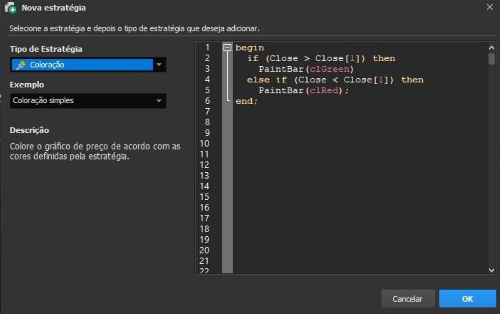
temp := BarDuration;
Descrição:
Afunção BarDuration retorna, em minutos, a duração da barra atual.
Sintaxe:
BarDuration
Parâmetros:
Sem parâmetros.
Retorno:
Float
Exemplos:
No exemplo, a variável "temp" irá receber o dado da função BarDuration.
Função BarDurationF
Descrição:
Afunção BarDurationF retorna, em minutos, a duração da barra atual.
Sintaxe:
BarDurationF
Parâmetros:
Sem parâmetros.
Retorno:
Float
Função BarDuration
temp := BarDurationF;
n := Bartype;
Exemplos:
No exemplo, a variável "temp" irá receber o dado da função BarDurationF.
Função Bartype
Descrição:
A função Bartype retorna um código numérico referente ao período utilizado.
Sintaxe:
Bartype
Parâmetros:
Sem parâmetros.
Retorno:
Inteiro:
-1 - Outros
1 - Intraday
2 - Diário
3 - Semanal
4 - Mensal
Exemplos:
No exemplo, a variável "n" irá receber um inteiro referente ao tempo determinado.
Função CalcDate
Descrição:
A função CalcDate retorna um valor o qual representa uma data deslocada, obtida ao adicionar ou
subtrair dias de uma data de referência.
Plot(CalcDate(1181026,-14));
Funcao CalcTime
Observação: Datas são representadas pelo tipo de dado "Integer", no formato: 1AnoMêsDia.
Sintaxe:
CalcDate(DataReferencia : Integer, DiasDeslocamento: Integer)
Parâmetros:
DataReferencia: Determina a data que será utilizada como base para o deslocamento.
DiasDelocamento: Determina quantos dias serão adicionados ou subtraídos da data de referência.
Retorno:
Integer
Exemplos:
No exemplo abaixo, será visualizada, graficamente, a data resultante ao subtrair 14 dias
da data de 26/10/2018.
Descrição:
A função CalcTime retorna um valor o qual representa uma hora deslocada, obtida ao adicionar ou
subtrair minutos de uma hora de referência.
Observação: Horas são representadas pelo tipo de dado "Integer", no formato(24 horas):
HorasMinutos.
Sintaxe:
CalcTime(HoraReferencia:Integer,MinutosDeslocamento:Integer)
Parâmetros:
HoraReferencia: Determina a hora que será utilizada como base para o deslocamento;
MinutosDeslocamento: Determina quantos minutos serão adicionados ou subtraídos da hora de
referência.
Retorno:
Plot(CalcTime(1400, 65));
Função CloseD
nFechamento := CloseD(2);
Função CloseM
Integer
Exemplos:
No exemplo abaixo, será visualizada, graficamente, a hora resultante ao deslocar 65
minutos a partir das 14h(Resultado: 1505).
Descrição:
A função CloseD tem como finalidade retornar o valor de fechamento de um número
determinado de dias atrás. Atualmente a função não é compatível com ativo diferente do
selecionado no backtest, como ativos coletados usando a função asset por exemplo.
Sintaxe:
CloseD(QuantidadeDiasAnteriores : Integer)
Parâmetros:
QuantidadeDiasAnteriores:Determina a quantidade desejada de dias anteriores.
Retorno:
Float
Exemplos:
No exemplo a seguir, será atribuído à variável "nFechamento" o valor de fechamento de dois
dias anteriores ao dia atual.
Descrição:
mFechamento := CloseM(3);
Função CloseW
A função CloseM tem como finalidade retornar o valor de fechamento de um número
determinado de meses atrás.
Sintaxe:
CloseM(QuantidadeMesesAnteriores : Integer)
Parâmetros:
QuantidadeMesesAnteriores: Determina a quantidade desejada de meses anteriores.
Retorno:
Float
Exemplos:
No exemplo a seguir, será atribuído à variável "mFechamento" o valor de fechamento de três
meses anteriores ao mês atual.
Descrição:
A função CloseW tem como finalidade retornar o valor de fechamento de um número
determinado de semanas atrás.
Sintaxe:
CloseW(QuantidadeSemanasAnteriores : Integer)
Parâmetros:
QuantidadeSemanasAnteriores: Determina a quantidade desejada de semanas anteriores.
Retorno:
Float
Exemplos:
wFechamento := CloseW(2);
yFechamento := CloseY(1);
No exemplo a seguir, será atribuído à variável "wFechamento" o valor de
fechamento de duas semanas anteriores à semana atual.
Função CloseY
Descrição:
A função CloseY tem como finalidade retornar o valor de fechamento de um número
determinado de anos atrás.
Sintaxe:
CloseY(QuantidadeAnosAnteriores: Integer)
Parâmetros:
QuantidadeAnosAnteriores:Determina a quantidade desejada de anos anteriores.
Retorno:
Float
Exemplos:
No exemplo a seguir, será atribuído à variável "yFechamento" o valor de fechamento do ano anterior.
Função CurrentAssetDate
Descrição:
A função CurrentAssetDate retorna a data atual do ativo no gráfico.
Observação: Datas são representadas pelo tipo de dado "Integer", no formato: 1AnoMêsDia.
Sintaxe:
nData := CurrentAssetDate;
nData := CurrentDate;
CurrentAssetDate
Parâmetros:
Sem parâmetros.
Retorno:
Integer
Exemplos:
No exemplo, será atribuído à variável "nData" a data do ativo.
Função CurrentDate
Descrição:
A função CurrentDate possui como finalidade retornar a data atual do sistema.
Observação: Datas são representadas pelo tipo de dado "Integer", no formato: 1AnoMêsDia.
Sintaxe:
CurrentDate
Parâmetros:
Sem parâmetros.
Retorno:
Integer
Exemplos:
No exemplo, será atribuído à variável "nData" a data do dia atual.
nHora := CurrentTime;
Descrição:
A função CurrentTime possui como finalidade retornar a hora atual do sistema.
Observação: Horas são representadas pelo tipo de dado "Integer", no formato: HHMM.
Sintaxe:
CurrentTime
Parâmetros:
Sem parâmetros.
Retorno:
Integer
Exemplos:
No exemplo, será atribuído à variável "nHora" a hora atual.
Função Date
Descrição:
A função Date possui como finalidade retornar a data do candle que está sendo analisado.
Observação: Datas são representadas pelo tipo de dado "Integer", no formato: 1AnoMêsDia.
Sintaxe:
Date
Função CurrentTime
nData := Date;
dAtual := DayOfMonth(CurrentDate);
Parâmetros:
Sem parâmetros.
Retorno:
Integer
Exemplos:
No exemplo, será atribuído à variável "nData" a data do candle atual.
Função DayOfMonth
Descrição:
A função DayOfMonth retorna o dia do mês de uma data específica.
Observação: Datas são representadas pelo tipo de dado "Integer", no formato: 1AnoMêsDia.
Sintaxe:
DayOfMonth(Data : Integer)
Parâmetros:
Data: Data para obter o dia.
Retorno:
Integer
Exemplos:
No exemplo, a variável "dAtual" irá receber o dia atual.
dAtual := DayOfWeek(CurrentDate);
Função DaysToExpiration
Descrição:
A função DayOfWeek retorna o dia da semana de uma data específica.
Observação: Datas são representadas pelo tipo de dado "Integer", no formato: 1AnoMêsDia.
Sintaxe:
DayOfWeek(Data : Integer)
Parâmetros:
Data: Data para obter o dia da semana.
Retorno:
Integer:
Referência de dias da semana:
0 - Domingo
1 - Segunda
2 - Terça
3 - Quarta
4 - Quinta
5 - Sexta
6 - Sábado
Exemplos:
No exemplo, a variável "dAtual" irá receber o dia da semana atual.
Descrição:
A função DaysToExpiration é uma função a quantidade de dias úteis restantes até a terceira
sexta-feira de um determinado mês e ano.
Sintaxe:
Função DayOfWeek
nQtdDias := DaysToExpiration(12, 116);
Função ELDate
DaysToExpiration(Mes : Integer, Ano: Integer)
Parâmetros:
Mes: Determina o mês que se deseja a informação:
1 - Janeiro
2 - Fevereiro
3 - Março
4 - Abril
5 - Maio
6 - Junho
7 - Julho
8 - Agosto
9 - Setembro
10 - Outubro
11- Novembro
12 - Dezembro
Ano: Determina o ano desejado para análise, onde deverá estar no formato: 1AnoDesejado.
Retorno:
Integer
Exemplos:
No exemplo abaixo, a variável "nQtdDias" irá receber a quantidade de dias úteis até a terceira
sexta-feira de dezembro/2016.
Descrição:
Afunção ELDate possui como finalidade retorna uma data em EasyLanguage format(YYYMMDD).
Observação: Datas são representadas pelo tipo de dado "Integer", no formato: 1AnoMêsDia.
Sintaxe:
ELDate
(Ano: Integer, Mes : Integer, Dia : Integer)
nData := ELDate(2018, 11, 13);
Função ELDate_Consol
nData := ELDate_Consol(20181113);
Parâmetros:
Ano:AnonoformatoYYYY.
Mes: Mes no formato MM.
Dia: Dia no formato DD.
Retorno:
Integer
Exemplos:
No exemplo, será atribuído à variável "nData" a data de 13/11/2018 no formato: 1181113.
Descrição:
A função ELDate_Consol possui como finalidade converter uma data YYYYMMDD em
EasyLanguage format(YYYMMDD).
Sintaxe:
ELDate_Consol(Data : Integer)
Parâmetros:
Data: Data no formato YYYYMMDD.
Retorno:
Integer
Exemplos:
No exemplo, será atribuído à variável "nData" a data de 2018/11/13 no formato: 1181113.
n := FindBar(CurrentDate, 1110);
Função Friday
Descrição:
A função FindBar retorna o índice de uma barra através de uma data e hora, onde a
contagem é iniciada a partir do candle atual(índice 0).
Observações:
Representação de datas: Datas são representadas pelo tipo de dado "Integer", no formato:
1AnoMêsDia.
Representação de horas: Horas são representadas pelo tipo de dado "Integer", no formato: HHMM.
Sintaxe:
FindBar(Data : Integer, Hora : Integer)
Parâmetros:
Data: Data do candle.
Hora: Hora do candle específico.
Retorno:
Integer
Exemplos:
No exemplo, a variável "n" irá receber o índice do candle relacionado com o horário 11h10 do dia atual.
Descrição:
Afunção Friday retorna o número 5, representando o dia da semana: sexta-feira.
Sintaxe:
Friday
Parâmetros:
Função FindBar
nDia := Friday;
Função HighestVolume
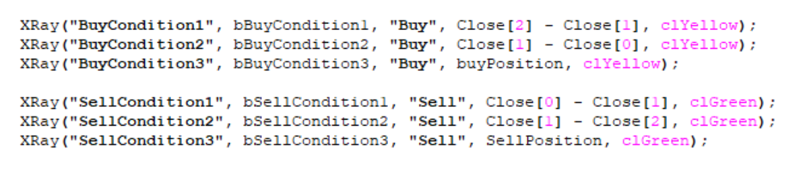
Sem parâmetros.
Retorno:
Integer
Exemplos:
No exemplo, a variável "nDia" irá receber número 5,referente ao dia específico da semana.
Descrição:
A função HighestVolume Retorna o maior volume de acordo com o tipo.
*Disponível apenas para clientes Profit Ultra. Os dados do Volume Profile não fornecem um histórico de dados
extenso, fazendo com que o backtest de estratégias utilizando essa função seja limitado.
Sintaxe:
HighestVolume (Interval : Integer; Offset : Integer = 1; Type : Integer = 0; Standard : Boolean = True;
Auction : Boolean = True; Cross : Boolean = True)|Rank : Integer|:
Parâmetros:
Interval: Intervalo de tempo utilizado para o cálculo do volume. Pode ser:
•
itDaily: Utiliza o intervalo diário. (No período Diário é apenas permitido Offset 1)
•
itMinute: Utiliza o intervalo em minutos.
Offset: Determina a quantidade de períodos (dias ou minutos, dependendo do Interval) a partir do qual o cálculo
será feito. Aceita valores entre 0 e 720. Um valor de 0 indica o período atual, enquanto valores maiores indicam
períodos passados.
Type: Define o tipo de volume a ser considerado no cálculo. Pode ser:
•
vtFinancial: Volume financeiro.
•
vtQuantity: Volume em quantidade de ações ou contratos.
•
vtTrade: Número de negócios realizados.
Standard: Variável booleana que permite puxar os trades padrão. Valor padrão é True.
Auction: Variável booleana que define se o volume de leilões será incluído no cálculo. Valor padrão é True.
Cross: Variável booleana que indica se o volume de operações cruzadas (cross trades) será considerado. Valor
padrão é True.
Rank: Deve ser definido ao final da função entre barras verticais: |RANK|. O primeiro (0) será o maior volume da
lista.
Retorno:
Função HighestVolumePrice
Float
Exemplo:
Descrição:
A função HighestVolumePrice
Retorna o preço do maior volume de acordo com o tipo.
*Disponível apenas para clientes Profit Ultra. Os dados do Volume Profile não fornecem um histórico de dados
extenso, fazendo com que o backtest de estratégias utilizando essa função seja limitado.
Sintaxe:
HighestVolumePrice (Interval : Integer; Offset : Integer = 1; Type : Integer = 0; Standard : Boolean = True;
Auction : Boolean = True; Cross : Boolean = True)|Rank : Integer|:
Parâmetros:
Interval: Intervalo de tempo utilizado para o cálculo do volume. Pode ser:
•
itDaily: Utiliza o intervalo diário. (No período Diário é apenas permitido Offset 1)
•
itMinute: Utiliza o intervalo em minutos.
Offset: Determina a quantidade de períodos (dias ou minutos, dependendo do Interval) a partir do qual o
cálculo será feito. Aceita valores entre 0 e 720. Um valor de 0 indica o período atual, enquanto valores
maiores indicam períodos passados.
Type: Define o tipo de volume a ser considerado no cálculo. Pode ser:
•
vtFinanceiro: Volume financeiro.
•
vtQuantidade: Volume em quantidade de ações ou contratos.
•
vtTrade: Número de negócios realizados.
Standard: Variável booleana que permite puxar os trades padrão. Valor padrão é True.
Auction: Variável booleana que define se o volume de leilões será incluído no cálculo. Valor padrão é True.
Cross: Variável booleana que indica se o volume de operações cruzadas (cross trades) será considerado.
Valor padrão é True.
Rank: Deve ser definido ao final da função entre barras verticais: |RANK|. O primeiro (0) será o maior volume
da lista.
// No exemplo a seguir, ser
á
retornado o maior volume financeiro dos
ú
ltimos 60 minutos.
HighestVolume(itMinute, 60, vtFinancial)|0|
Função HighD
dMaxima := HighD(2);
Retorno:
Float
Exemplo:
Descrição:
A função HighD tem como finalidade retornar o valor de máxima de um número determinado de dias
atrás. Atualmente a função não é compatível com ativo diferente do selecionado no backtest, como
ativos coletados usando a função asset por exemplo.
Sintaxe:
HighD(QuantidadeDiasAnteriores : Integer)
Parâmetros:
QuantidadeDiasAnteriores:Determina a quantidade desejada de dias anteriores.
Retorno:
Float
Exemplos:
No exemplo a seguir, será atribuído à variável "dMaxima" o valor de máxima de dois dias
anteriores ao dia atual.
// No exemplo a seguir, ser
á
retornado o pre
ç
o do maior volume em quantidade nos
ú
ltimos 5
minutos
HighestVolumePrice(itMinute, 5, vtQuantity)|0|
mMaxima := HighM(5);
Função HighW
Descrição:
A função HighM tem como finalidade retornar o valor de máxima de um número determinado de
meses atrás.
Sintaxe:
HighM(QuantidadeMesesAnteriores: Integer)
Parâmetros:
QuantidadeMesesAnteriores: Determina a quantidade desejada de meses anteriores.
Retorno:
Float
Exemplos:
No exemplo a seguir, será atribuído à variável "mMaxima" o valor de máxima de cinco meses
anteriores ao mês atual.
Descrição:
A função HighW tem como finalidade retornar o valor de máxima de um número
determinado de semanas atrás.
Sintaxe:
HighW(QuantidadeSemanasAnteriores : Integer)
Parâmetros:
QuantidadeSemanasAnteriores: Determina a quantidade desejada de semanasanteriores.
Retorno:
Função HighM
wMaxima := HighW(7);
Função HighY
yMaxima := HighY(2);
Função LastCalcDate
Float
Exemplos:
No exemplo a seguir, será atribuído à variável "wMaxima" o valor de máxima de sete
semanas anteriores à semana atual.
Descrição:
A função HighY tem como finalidade retornar o valor de máxima de um número determinado de anos
atrás.
Sintaxe:
HighY(QuantidadeAnosAnteriores : Integer)
Parâmetros:
QuantidadeAnosAnteriores: Determina a quantidade desejada de anosanteriores.
Retorno:
Float
Exemplos:
No exemplo a seguir, será atribuído à variável "yMaxima" o valor de máxima de dois anos anteriores ao
atual.
Descrição:
Plot(LastCalcDate);
Função LastCalcTime
Afunção LastCalcDate retorna a data do último candle completo formado dentro do gráfico.
Observação: Datas são representadas pelo tipo de dado "Integer", no formato: 1AnoMêsDia.
Sintaxe:
LastCalcDate
Parâmetros:
Sem parâmetros.
Retorno:
Integer
Exemplos:
No exemplo abaixo, será colocado diretamente no gráfico a data dos candles de acordo
com o andamento do mercado.
Descrição:
A função LastCalcTime retorna a hora do último candle completo formado dentro do gráfico, no
formato 24h(HHMM).
Sintaxe:
LastCalcTime
Parâmetros:
Sem parâmetros.
Retorno:
Integer
Plot(LastCalcTime);
nDia := LastDayOfMonth(9);
Exemplos:
No exemplo abaixo, será colocado diretamente no gráfico a hora de fechamento dos candles,
de acordo com o andamento do mercado.
Função LastDayOfMonth
Descrição:
A função LastDayOfMoth retorna o último dia do mês de referência.
Sintaxe:
LastDayOfMonth(MesReferencia :Integer)
Parâmetros:
MesReferencia: Determina o mês de referência, de Janeiro(1) a Dezembro(12).
Retorno:
Integer
Exemplos:
No exemplo abaixo, será atribuído à variável "nDia" o último dia(30) do mês de Setembro.
Função LowD
Descrição:
A função LowD tem como finalidade retornar o valor de mínima de um número determinado de dias
atrás.
dMinima := LowD(3);
Função LowM
Sintaxe:
LowD(QuantidadeDiasAnteriores :Integer)
Parâmetros:
QuantidadeDiasAnteriores:Determina a quantidade desejada de dias anteriores
Retorno:
Float
Exemplos:
No exemplo a seguir, será atribuído à variável "dMinima" o valor de mínima de três dias anteriores ao
dia atual.
Descrição:
A função LowM tem como finalidade retornar o valor de mínima de um número determinado de meses
atrás.
Sintaxe:
LowM(QuantidadeMesesAnteriores: Integer)
Parâmetros:
QuantidadeMesesAnteriores: Determina a quantidade desejada de meses anteriores.
Retorno:
Float
Exemplos:
No exemplo a seguir, será atribuído à variável "mMinima" o valor de mínima do mês anterior.
Função LowW
wMinima := LowM(7);
Descrição:
A função LowW tem como finalidade retornar o valor de mínima de um número determinado de
semanas atrás.
Sintaxe:
LowW(QuantidadeSemanasAnteriores : Integer)
Parâmetros:
QuantidadeSemanasAnteriores: Determina a quantidade desejada de semanasanteriores.
Retorno:
Float
Exemplos:
No exemplo a seguir, será atribuído à variável "wMinima" o valor de mínima de sete semanas
anteriores à semana atual.
Função LowY
Descrição:
A função LowY tem como finalidade retornar o valor de mínima de um número determinado de anos
atrás.
Sintaxe:
LowY(QuantidadeAnosAnteriores :Integer)
mMinima := LowM(1);
yMinima := LowY(2);
Função Monday
nDia := Monday;
Parâmetros:
QuantidadeAnosAnteriores:Determina a quantidade desejada de anos anteriores.
Retorno:
Float
Exemplos:
No exemplo a seguir, será atribuído à variável "yMinima" o valor de mínima de dois anos anteriores ao
atual.
Descrição:
Afunção Monday retorna o número 1, representando o dia da semana: segunda-feira.
Sintaxe:
Monday
Parâmetros:
Sem parâmetros.
Retorno:
Integer
Exemplos:
No exemplo, a variável "nDia" irá receber número 1,referente ao dia específico da semana.
mAtual := Month(CurrentDate);
Função Next3rdFriday
Descrição:
A função Month retorna o mês de uma data específica.
Observação: Datas são representadas pelo tipo de dado "Integer", no formato: 1AnoMêsDia.
Sintaxe:
Month(Data : Integer)
Parâmetros:
Data: Data para obter o mês.
Retorno:
Integer
Exemplos:
No exemplo, a variável "mAtual" irá receber o mês atual.
Descrição:
A função Next3rdFriday retorna a quantidade de dias úteis restantes até a terceira sexta-feira de
determinado mês subsequente.
Sintaxe:
Next3rdFriday(Mes : Integer)
Parâmetros:
Mes: Determina o mês que se deseja a informação, onde a contagem inicia-se a partir do mês atual(0).
Retorno:
Função Month
nSexta := Next3rdFriday(1);
Função OpenD
dAbertura := OpenD(6);
Função OpenM
Integer
Exemplos:
No exemplo abaixo, a variável "nSexta" irá receber a quantidade de dias úteis até a terceira sexta-feira
do mês seguinte.
Descrição:
A função OpenD tem como finalidade retornar o valor de abertura de um número determinado de dias
atrás.
Sintaxe:
OpenD(QuantidadeDiasAnteriores: Integer)
Parâmetros:
QuantidadeDiasAnteriores:Determina a quantidade desejada de dias anteriores.
Retorno:
Float
Exemplos:
No exemplo a seguir, será atribuído à variável "dAbertura" o valor de abertura de seis dias
anteriores ao dia atual.
Descrição:
mAbertura := OpenM(1);
Função OpenW
A função OpenM tem como finalidade retornar o valor de abertura de um número determinado de
meses atrás.
Sintaxe:
OpenM(QuantidadeMesesAnteriores: Integer)
Parâmetros:
QuantidadeMesesAnteriores: Determina a quantidade desejada de meses anteriores.
Retorno:
Float
Exemplos:
No exemplo a seguir, será atribuído à variável "mAbertura" o valor de abertura do mês anterior ao
atual.
Descrição:
A função OpenW tem como finalidade retornar o valor de abertura de um número determinado de
semanas atrás.
Sintaxe:
OpenW(QuantidadeSemanasAnteriores : Integer)
Parâmetros:
QuantidadeSemanasAnteriores: Determina a quantidade desejada de semanasanteriores.
Retorno:
Float
Exemplos:
wAbertura := OpenW(5);
yAbertura := OpenY(1);
No exemplo a seguir, será atribuído à variável "wAbertura" o valor de abertura de cinco semanas
anteriores à semana atual.
Função OpenY
Descrição:
A função OpenY tem como finalidade retornar o valor de abertura de um número determinado de anos
atrás.
Sintaxe:
OpenY(QuantidadeAnosAnteriores: Integer)
Parâmetros:
QuantidadeAnosAnteriores:Determina a quantidade desejada de anos anteriores.
Retorno:
Float
Exemplos:
No exemplo a seguir, será atribuído à variável "yAbertura" o valor de abertura do ano anterior ao atual.
Função RS_BarsPerDay
Descrição:
A função RS_BarsPerDay retorna o número estimado de barras de determinada periodicidade(em
minutos). Caso o periodo seja diário, será obtido 1 como retorno, e, para períodos em minutos,
ocorrerá a divisão do número total de minutos em um dia(1440) pela periodicidade selecionada.
Sintaxe:
n := RS_BarsPerDay;
Função Saturday
nDia := Saturday;
RS_BarsPerDay
Parâmetros:
Sem parâmetros.
Retorno:
Inteiro
Exemplos:
No exemplo, será atribuído à variável "n" o retorno da chamada de função.
Descrição:
A função Saturday retorna o número 6, representando o dia da semana: sábado.
Sintaxe:
Saturday
Parâmetros:
Sem parâmetros.
Retorno:
Integer
Exemplos:
No exemplo, a variável "nDia" irá receber número 6,referente ao dia específico da semana.
nDia := Sunday;
Descrição:
A função Sunday retorna o número 0, representando o dia da semana: domingo.
Sintaxe:
Sunday
Parâmetros:
Sem parâmetros.
Retorno:
Integer
Exemplos:
No exemplo, a variável "nDia" irá receber número 0,referente ao dia específico da semana.
Função Thursday
Descrição:
Afunção Thursday retorna o número 4,representando o dia da semana: quinta-feira.
Sintaxe:
Thursday
Parâmetros:
Sem parâmetros.
Retorno:
Integer
Função Sunday
nDia := Thursday;
Função Time
nHora := Time;
Função TimeToMinutes
Exemplos:
No exemplo, a variável "nDia" irá receber número 4,referente ao dia específico da semana.
Descrição:
Afunção Time possui como finalidade retornar a hora de abertura do candle analisado.
Observação: Horas são representadas pelo tipo de dado "Integer", no formato: HHMM.
Sintaxe:
Time
Parâmetros:
Sem parâmetros.
Retorno:
Integer
Exemplos:
No exemplo, será atribuído à variável "nHora", a hora de abertura do candle.
Descrição:
A função TimeToMinutes possui como finalidade efetuar a conversão de um horário em minutos.
minutos := TimeToMinutes(1230);
Função Today
Sintaxe:
TimeToMinutes(Hora : Integer)
Parâmetros:
Hora: Hora para a conversão.
Retorno:
Integer
Exemplos:
No exemplo, a variável "minutos" irá receber a conversão em minutos(750) da hora: 12h30.
Descrição:
A função Today possui como finalidade retornar a data atual do sistema.
Observação: Datas são representadas pelo tipo de dado "Integer", no formato: 1AnoMêsDia.
Sintaxe:
Today
Parâmetros:
Sem parâmetros.
Retorno:
Integer
Exemplos:
No exemplo, será atribuído à variável "nData" a data do dia atual.
Função VolumeAtPrice
Função Tuesday
nDia := Tuesday;
Descrição:
Afunção Tuesday retorna o número 2,representando o dia da semana: terça-feira.
Sintaxe:
Tuesday
Parâmetros:
Sem parâmetros.
Retorno:
Integer
Exemplos:
No exemplo, a variável "nDia" irá receber número 2,referente ao dia específico da semana.
Descrição:
A função VolumeAtPrice Retorna o volume no preço selecionado para o intervalo.
*Disponível apenas para clientes Profit Ultra. Os dados do Volume Profile não fornecem um histórico
de dados extenso, fazendo com que o backtest de estratégias utilizando essa função seja limitado.
Sintaxe:
VolumeAtPrice(Interval : Integer; Offset : Integer = 1; Type : Integer = 0; Standard : Boolean = True;
Auction : Boolean = True; Cross : Boolean = True)|Price : Float|
nData := Today;
Função VolumeD
// No exemplo a seguir, ser
á
atribu
í
do
à
vari
á
vel "dVolumeAtPrice"
// o volume no pre
ç
o 38.60 para os
ú
ltimos 60 minutos
var
dVolumeAtPrice: Float;
begin
dVolumeAtPrice := VolumeAtPrice(itMinute, 60, vtTrade, True, True, True)|38.60|;
end;
Parâmetros:
Interval: Intervalo de tempo utilizado para o cálculo do volume. Pode ser:
•
itDaily: Utiliza o intervalo diário.
•
itMinute: Utiliza o intervalo em minutos.
Offset: Determina a quantidade de períodos (dias ou minutos, dependendo do Interval) a partir do qual o cálculo
será feito. Aceita valores entre 0 e 720. Um valor de 0 indica o período atual, enquanto valores maiores indicam
períodos passados.
Type: Define o tipo de volume a ser considerado no cálculo. Pode ser:
•
vtFinancial: Volume financeiro.
•
vtQuantity: Volume em quantidade de ações ou contratos.
•
vtTrade: Número de negócios realizados.
Standard: Variável booleana que permite puxar os trades padrão. Valor padrão é True.
Auction: Variável booleana que define se o volume de leilões será incluído no cálculo. Valor padrão é True.
Cross: Variável booleana que indica se o volume de operações cruzadas (cross trades) será considerado. Valor
padrão é True.
Price: Preço em float do qual se deseja saber o volume.
Retorno:
Float
Exemplo:
Descrição:
A função VolumeD tem como finalidade retornar o volume financeiro de um número determinado de
dias atrás.
Sintaxe:
VolumeD(QuantidadeDiasAnteriores: Integer)
Parâmetros:
dVolume := VolumeD(6);
Função VolumeM
mVolume := VolumeM(1);
QuantidadeDiasAnteriores:Determina a quantidade desejada de dias anteriores.
Retorno:
Float
Exemplos:
No exemplo a seguir, será atribuído à variável "dVolume" o volume de seis dias anteriores ao dia atual.
Descrição:
A função VolumeM tem como finalidade retornar o volume financeiro de um número determinado de
meses atrás.
Sintaxe:
VolumeM(QuantidadeMesesAnteriores : Integer)
Parâmetros:
QuantidadeMesesAnteriores: Determina a quantidade desejada de meses anteriores.
Retorno:
Float
Exemplos:
No exemplo a seguir, será atribuído à variável "mAbertura" o volume do mês anterior ao atual.
wVolume := VolumeW(5);
Função VolumeY
Descrição:
A função VolumeW tem como finalidade retornar o volume financeiro de um número determinado de
semanas atrás.
Sintaxe:
VolumeW(QuantidadeSemanasAnteriores: Integer)
Parâmetros:
QuantidadeSemanasAnteriores: Determina a quantidade desejada de semanas anteriores.
Retorno:
Float
Exemplos:
No exemplo a seguir, será atribuído à variável "wVolume" o valor volume de cinco semanas anteriores
à semana atual.
Descrição:
A função VolumeY tem como finalidade retornar o volume financeiro de um número determinado de
anos atrás.
Sintaxe:
VolumeY(QuantidadeAnosAnteriores : Integer)
Parâmetros:
QuantidadeAnosAnteriores:Determina a quantidade desejada de anos anteriores.
Retorno:
Função VolumeW
yVolume := VolumeY(1);
nDia := Wednesday;
Float
Exemplos:
No exemplo a seguir, será atribuído à variável "yVolume" o volume do ano anterior ao atual.
Função Wednesday
Descrição:
Afunção Wednesday retorna o número 3, representando o dia da semana: quarta-feira.
Sintaxe:
Wednesday
Parâmetros:
Sem parâmetros.
Retorno:
Integer
Exemplos:
No exemplo, a variável "nDia" irá receber número 3,referente ao dia específico da semana.
Função Year
Descrição:
A função Year retorna o ano de uma data específica.
yAtual := Year(CurrentDate);
Função Yesterday
Observação: Datas são representadas pelo tipo de dado "Integer", no formato: 1AnoMêsDia.
Sintaxe:
Year(Data : Integer)
Parâmetros:
Data: Data para obter o ano.
Retorno:
Integer
Exemplos:
No exemplo, a variável "yAtual" irá receber o ano atual.
Descrição:
Afunção Yesterday retorna a data do dia de ontem.
Observação: Datas são representadas pelo tipo de dado "Integer", no formato: 1AnoMêsDia.
Sintaxe:
Yesterday
Parâmetros:
Sem parâmetro
nYesterday := Yesterday;
nYesterday := nTimeExchange;
Retorno:
Integer
Exemplos:
No exemplo, a variável "nYesterday" irá receber a data de ontem.
Função TimeExchange
Descrição:
A função TimeExchange retorna o tempo do candle de acordo com o timezone da bolsa.
Sintaxe:
TimeExchange
Parâmetros:
Sem parâmetro
Retorno:
Integer
Exemplos:
No exemplo, a variável "nTimeExchange" irá receber a data de acordo com o timezone da bolsa.
aux := C_3WhSolds_3BlkCrows(9, 2, o3WhiteSoldiers, o3BlackCrows);
if(aux = 1) then
PaintBar(clRed);
Candlestick
Função C_3WhSolds_3BlkCrows
Descrição:
A função C_3WhSolds_3BlkCrows identifica a ocorrência de dois tipos de candles: 3 White Soldiers
e 3 Black Crows .
Sintaxe:
C_3WhSolds_3BlkCrows(Comprimento : Integer, Fator : Integer,var o3WhiteSoldiers : Integer,
var o3BlackCrows : Integer)
Parâmetros:
Comprimento: Tamanho utilizado para calcular a média do corpo do candle.
Fator: Determina quantas vezes a sombra do candle deve ser maior que o seu corpo.
o3WhiteSoldiers: Variável para identificação de padrão(3 White Soldiers).
o3BlackCrows: Variável para identificação de padrão(3 Black Crows).
Retorno:
Integer:
Identificação(retorno função):
0 - Algum dos padrões foi identificado.
1 - Nenhuma padrão identificado.
Identificação(retorno variável:o3WhiteSoldiers):
0 - Padrão 3 White Soldiers não foi identificado.
1 - Padrão 3 White Soldiers identificado.
Identificação(retorno variável:o3BlackCrows):
0 - Padrão 3 Black Crows não foi identificado.
1 - Padrão 3 Black Crows identificado.
Exemplos:
No exemplo, caso seja identificado algum dos padrões(3 White Soldiers ou 3 Black Crows),
considerando 9(Comprimento) e 2(Fator), será aplicada uma coloração(vermelha).
aux := C_BullEng_BearEng(13, oBullishEngulfing, oBearishEngulfing);
if (oBullishEngulfing = 1) then
PaintBar(clYellow);
Descrição:
A função C_BullEng_BearEng identifica a ocorrência de dois tipos de candles: Bullish Engulfing e
Bearish Engulfing .
Sintaxe:
C_BullEng_BearEng(Comprimento:Integer,varoBullishEngulfing:Integer,var
oBearishEngulfing : Integer)
Parâmetros:
Comprimento: Tamanho utilizado para calcular a média do corpo do candle.
oBullishEngulfing: Variável para identificação de padrão(Bullish Engulfing).
oBearishEngulfing: Variável para identificação de padrão(Bearish Engulfing).
Retorno:
Integer:
Identificação(retorno função):
0 - Algum dos padrões foi identificado.
1 - Nenhuma padrão identificado.
Identificação(retorno variável:oBullishEngulfing):
0 - Padrão Bullish Engulfing não foi identificado.
1 - Padrão Bullish Engulfing identificado.
Identificação(retorno variável:oBearishEngulfing):
0 - Padrão Bearish Engulfing não foi identificado.
1 - Padrão Bearish Engulfing identificado.
Exemplos:
No exemplo, caso o padrão Bullish Engulfing seja identificado, considerando 13(Comprimento), será
aplicada uma coloração(amarela).
Função C_BullEng_BearEng
if(C_Doji(5) = 1)
then PaintBar(clGreen);
Função C_Hammer_HangingMan
Descrição:
A função C_Doji identifica a ocorrência de um candle tipo Doji .
Sintaxe:
C_Doji(Percentual : Integer)
Parâmetros:
Percentual: Limiar para(Abertura - Fechamento) que seria uma percentagem do intervalo do candle.
Retorno:
Integer:
Identificação:
0 - Padrão não identificado.
1 - Padrão identificado.
Exemplos:
No exemplo, caso o padrão seja identificado, considerando percentual de 5%, será aplicada uma
coloração(verde).
Descrição:
A função C_Hammer_HangingMan identifica a ocorrência de dois tipos de candles: Hammer e
Hanging Man .
Sintaxe:
C_Hammer_HangingMan(Comprimento : Integer,Fator : Integer,var oHammer : Integer,var
oHangingMan : Integer)
Parâmetros:
Função C_Doji
aux := C_Hammer_HangingMan(14, 2, oHammer, oHangingMan);
if (aux = 1) then
PaintBar(clYellow);
Comprimento: Tamanho utilizado para calcular a média do corpo do candle.
Fator: Determina quantas vezes a sombra do candle deve ser maior que o seu corpo.
oHammer: Variávelpara identificação depadrão(Hammer).
oHangingMan: Variável para identificação depadrão(HangingMan).
Retorno:
Integer:
Identificação(retorno função):
0 - Nenhum padrão identificado.
1 - Algum dos padrões foi identificado.
Identificação(retorno variável:oHammer):
0 - Padrão Morning Hammer não foi identificado.
1 - Padrão Morning Hammer identificado.
Identificação(retorno variável:oHangingMan):
0 - Padrão Hanging Man não foi identificado.
1 - Padrão Hanging Man identificado.
Exemplos:
No exemplo, caso seja identificado algum dos padrões(Hammer ou Hanging Man), considerando
14(Comprimento) e 2(Fator), será aplicada uma coloração(amarela).
Função C_MornDoji_EveDoji
Descrição:
A função C_MornDoji_EveDoji identifica a ocorrência de dois tipos de candles: Morning Doji Star e
Evening Doji Star .
Sintaxe:
C_MornDoji_EveDoji(Comprimento: Integer, Percentual : Float, var oMorningDojiStar : Integer,
var oEveningDojiStar : Integer)
Parâmetros:
Comprimento: Tamanho utilizado para calcular a média do corpo do candle.
Percentual: Doji limiar para o (abrir - fechar) como uma percentagem do intervalo da barra.
aux := C_MornDoji_EveDoji(9, 3.0, oMorningDojiStar, oEveningDojiStar);
if (aux = 1) then
PaintBar(clWhite);
Função C_MornStar_EveStar
oMorningDojiStar: Variávelparaidentificação de padrão(Morning DojiStar).
oEveningDojiStar: Variável para identificação depadrão(Evening Doji Star).
Retorno:
Integer:
Identificação(retorno função):
0 - Algum dos padrões foi identificado.
1 - Nenhuma padrão identificado.
Identificação(retorno variável:oMorningDojiStar):
0 - Padrão Morning Doji Star não foi identificado.
1 - Padrão Morning Doji Star identificado.
Identificação(retorno variável:oEveningDojiStar):
0 - Padrão Evening Doji Star não foi identificado.
1 - Padrão Evening Doji Star identificado.
Exemplos:
No exemplo, caso seja identificado algum dos padrões(Morning Doji Star ou Evening Doji Star),
considerando 9(Comprimento) e 3(Percentual), será aplicada uma coloração(branca).
Descrição:
A função C_MornStar_EveStar identifica a ocorrência de dois tipos de candles: Morning
Star e Evening Star .
Sintaxe:
C_MornStar_EveStar(Comprimento: Integer, var oMorningStar : Integer,var oEveningStar :
Integer)
Parâmetros:
Comprimento: Tamanho utilizado para calcular a média do corpo do candle.
oMorningStar: Variável para identificação de padrão(Morning Star).
oEveningStar: Variável para identificação de padrão(Evening Star).
Retorno:
aux := C_MornStar_EveStar(6, oMorningStar, oEveningStar);
if (oEveningStar = 1) then
PaintBar(clGreen);
Integer:
Identificação(retorno função):
0 - Algum dos padrões foi identificado.
1 - Nenhuma padrão identificado.
Identificação(retornovariável:oMorningStar):
0 - Padrão Morning Star não foi identificado.
1 - Padrão Morning Star identificado.
Identificação(retornovariável:oEveningStar):
0 - Padrão Evening Star não foi identificado.
1 - Padrão Evening Star identificado.
Exemplos:
No exemplo, caso o padrão Evening Star seja identificado, considerando 6(Comprimento), será
aplicada uma coloração(verde).
Função C_PierceLine_DkCloud
Descrição:
A função C_PierceLine_DkCloud identifica a ocorrência de dois tipos de candles:
Piercing Line e Dark Cloud .
Sintaxe:
C_PierceLine_DkCloud(Comprimento : Integer, var oPiercingLine : Ingeter, var oDarkCloud :
Ingeter)
Parâmetros:
Comprimento: Tamanho utilizado para calcular a média do corpo do candle.
oPiercingLine: Variável para identificação de padrão(Piercing Line).
oDarkCloud: Variável para identificação de padrão(Dark Cloud).
Retorno:
Integer:
Identificação(retorno função):
0 - Algum dos padrões foi identificado.
aux := C_PierceLine_DkCloud(5, oPiercingLine, oDarkCloud);
if (oDarkCloud = 1) then
PaintBar(clYellow);
Função C_ShootingStar
1 - Nenhuma padrão identificado.
Identificação(retorno variável:oPiercingLine):
0 - Padrão Piercing Line não foi identificado.
1 - Padrão Piercing Line identificado.
Identificação(retorno variável:oDarkCloud):
0 - Padrão Dark Cloud não foi ident
Exemplos:
No exemplo, caso o padrão Dark Cloud seja identificado, considerando 5(Comprimento), será aplicada
uma coloração(amarela).
Descrição:
A função C_ShootingStar identifica a ocorrência de candles tipo Shooting Star .
Sintaxe:
C_ShootingStar(Comprimento : Integer,Fator : Integer)
Parâmetros:
Comprimento: Tamanho utilizado para calcular a média do corpo do candle.
Fator: Determina quantas vezes a sombra do candle deve ser maior que o seu corpo.
Retorno:
Integer:
Identificação:
0 - Padrão não identificado.
1 - Padrão identificado.
Exemplos:
if (C_ShootingStar(10, 2) = 1) then
PaintBar(clVerde);
Função DiMaisDiMenos
aux := DiMaisDiMenos(14);
Função IFR
No exemplo, caso o padrão seja identificado, considerando 10(Comprimento) e 2(Fator), será aplicada
uma coloração(verde).
Exemplos
Descrição:
O exemplo DiMaisDiMenos possui a implementação do indicador DI+/DI- , onde foi
determinado um parâmetro (input) para o período.
Observação: o exemplo com o código fonte está disponível no editor de estratégias, para
visualizá-lo, acesse o menu: "abrir > exemplos".
Sintaxe:
DiMaisDiMenos(Periodo : Integer)
Parâmetros:
Periodo: Período utilizado no momento do cálculo do indicador.
Retorno:
Float
Exemplos:
No exemplo, será atribuído à variável "aux" o retorno do indicador criado.
Descrição:
aux := IFR(2);
A função IFR retorna o valor(tipo clássico) do indicador IFR , de acordo com o período.
Observação: o exemplo com o código fonte está disponível no editor de estratégias, para
visualizá-lo, acesse o menu: "abrir > exemplos".
Sintaxe:
IFR(Periodo : Integer)
Parâmetros:
Periodo: Período utilizado no momento do cálculo do indicador.
Retorno:
Float
Exemplos:
No exemplo, a variável "aux" irá receber o valor do indicador IFR, considerando 2 períodos para o
cálculo.
Função Media
Descrição:
A função Media retorna o valor do indicador Média Móvel, tipo aritmética.
Observação: o exemplo com o código fonte está disponível no editor de estratégias, para
visualizá-lo, acesse o menu: "abrir > exemplos".
Sintaxe:
Media(Periodo : Integer, TipoSerie : Serie)
Parâmetros:
Período: Período utilizado no momento do cálculo do indicador.
TipoSerie: Série que será considerada para o cálculo.
Retorno:
vMed := Media(100, Close);
Função MediaExp
vMed := MediaExp(100, Close);
Float
Exemplos:
No exemplo, será atribuído à variável "vMed" o valor do indicador Média Móvel(Aritmética),
considerando 100 períodos, e a série de fechamento(Close) para o cálculo.
Descrição:
A função MediaExp retorna o valor do indicador Média Móvel, tipo exponencial.
Observação: o exemplo com o código fonte está disponível no editor de estratégias, para
visualizá-lo, acesse o menu: "abrir > exemplos".
Sintaxe:
MediaExp(Periodo : Integer,TipoSerie : Serie)
Parâmetros:
Periodo: Período utilizado no momento do cálculo do indicador.
TipoSerie: Série que será considerada para o cálculo.
Retorno:
Float
Exemplos:
No exemplo, será atribuído à variável "vMed" o valor do indicador Média Móvel(Exponencial),
considerando 100 períodos, e a série de fechamento(Close) para o cálculo.
Plot(PaintVar);
Descrição:
A função PaintVar possui a implementação de uma estratégia de coloração, a qual compara se o
fechamento do último candle é positivo ou negativo em relação ao fechamento do(candle) anterior, e,
como indicador, apenas retorna o último preço do ativo.
Observação: o exemplo com o código fonte está disponível no editor de estratégias, para
visualizá-lo, acesse o menu: "abrir > exemplos".
Sintaxe:
PaintVar
Parâmetros:
Sem parâmetros.
Retorno:
Float
Exemplos:
No exemplo, será plotado o último preço, onde a regra de coloração correspondente poderá
ser aplicada sobre o indicador.
Função WellesSum
Descrição:
A função WellesSum retorna o valor do indicador WellesSum , de acordo com os parâmetros desejados.
Observação: o exemplo com o código fonte está disponível no editor de estratégias, para visualizá-lo,
acesse o menu: "abrir > exemplos".
Sintaxe:
WellesSum(Periodo, Integer,SerieReferencia : Serie, Offset : Integer)
Função PaintVar
nWS := WellesSum(20, Close, 0);
Função AvgPrice
Parâmetros:
Periodo: Período utilizado no momento do cálculo do indicador.
SerieReferencia: Série de dados.
Offset: Referente ao parâmetro "Offset" do indicador.
Retorno:
Float
Exemplos:
No exemplo, será atribuído à variável "nWS" o dado do indicador WellesSum, considerando 20(Período),
série de fechamento(SerieReferencia) e 0(Offset) para o cálculo.
Gráficas
Descrição:
A função AvgPrice retorna o valor da média entre Abertura, Fechamento, Máxima e
Mínima, de determinado candle.
Sintaxe:
AvgPrice
Parâmetros:
Sem parâmetros
Retorno:
Float
Exemplos:
Será atribuído à variável "nAvg" o retorno da função AvgPrice.
Função BarCount
aux := BarCount;
Descrição:
A função BarCount retorna a quantidade total de barras.
Sintaxe:
BarCount
Parâmetros:
Sem parâmetros.
Retorno:
Integer
Exemplos:
No exemplo, será atribuído à variável “aux” o total de barras para o período.
Função CurrentBar
Descrição:
Afunção CurrentBar tem como finalidade retornar ao usuário o índice do candle atual.
Sintaxe:
CurrentBar
Parâmetros:
Sem parâmetros.
nAvg := AvgPrice;
if (CurrentBar = 100) then
PaintBar(clRed);
Retorno:
Integer
Exemplos:
No exemplo, o candle de número 100 será identificado com a coloração vermelha.
Funcão LineSegment
Descrição:
A função
LineSegment
tem como finalidade adicionar um estudo com uma linha customizável em um
indicador.
Sintaxe:
LineSegment
(PriceStart : Float; PriceEnd : Float; StartDate : Integer; EndDate : Integer; Extrapolate :
Boolean; Text : String; Color : Integer [Opcional]; LineWidth : Integer [Opcional]; Style : Integer
[Opcional]; FontSize : Integer [Opcional]; TextPosition : Integer : [Opcional]; StartTime : Integer
[Opcional]; EndTime : Integer [Opcional])
Parâmetros:
●PriceStart: Preço do primeiro ponto que define a linha (Y1)
●PriceEnd: Preço do Segundo ponto que define a linha (Y2)
●StartDate: Data do primeiro ponto que define a linha (X1)
●EndDate: Data do segundo ponto que define a linha (X2)
●Extrapolate: Se a linha deve extrapolar para direita
●Text: Texto que será pintado junto da linha
●Color: Cor da linha
●LineWidth: Espessura da linha
●
Style: Estilo da linha.
Ver SetPlotStyle para mais detalhes
●FontSize: Cor da Fonte
●TextPosition: Posição do texto na linha. Podendo ser: tpTopLeft, tpTopRight, tpBottomLeft e tpBottomRight
●StartTime: Define um tempo especifico para o inicio da linha
●EndTime: Define um tempo especifico para o fim da linha
Retorno:
Sem retorno
Exemplos:
Função GetPlotColor
Descrição:
A função GetPlotColor possui como funcionalidade retornar o valor numérico da cor de determinado
Plot.
Sintaxe:
GetPlotColor(NumeroPlot: Integer)
Parâmetros:
NumeroPlot: Número do Plot para obter a cor.
Retorno:
Integer
Exemplos:
No exemplo abaixo, será adicionada uma linha entre os pontos (12/11/2024, 128.000) e (25/11/2024,
125.000), Extrapolando para direita, Com um texto “Linha de teste”, da cor vermelha, no estilo pontilhado
com fonte tamanho 8, o texto no canto superior esquero, começando e terminando as 12:00 no candle
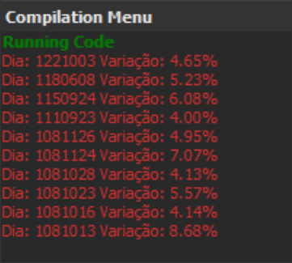
SetPlotColor(1, RGB(200, 200, 200));
SetPlotColor(2, GetPlotColor(1));
No exemplo, será aplicada a coloração do Plot no Plot2.
SetPlotWidth(1, 5);
SetPlotWidth(2,GetPlotWidth(1));
Função GraphicInterval
Descrição:
A função GetPlotWidth possui como finalidade retornar o valor da espessura de determinado Plot.
Sintaxe:
GetPlotWidth(NumeroPlot: Integer)
Parâmetros:
NumeroPlot: Número do Plot para obter a espessura.
Retorno:
Integer
Exemplos:
No exemplo, será aplicada a espessura do Plot no Plot2.
Descrição:
Afunção GraphicInterval retorna o intervalo do gráfico
Sintaxe:
GraphicInterval
Parâmetros:
Sem parâmetros.
Retorno:
Integer
Função GetPlotWidth
gInterval := GraphicInterval;
Função GraphicOffset
gOffset := GraphicOffset;
Exemplos:
No exemplo, será atribuído à variável “gInterval” o retorno da função.
Descrição:
Afunção GraphicOffset retorna o offset do gráfico.
Sintaxe:
GraphicOffset
Parâmetros:
Sem parâmetros.
Retorno:
Integer
Exemplos:
No exemplo, será atribuído à variável “gOffset ” o retorno da função.
Funcão HorizontalLine
Descrição:
Afunção HorizontalLine tem como finalidade, adicionar um estudo horizontal em um indicador.
Sintaxe:
HorizontalLine(5288, RGB(200, 0, 0));
HorizontalLine (Y : Float; Color : Interger)
Parâmetros:
Y:Valordoestudo.
Color: Cor da linha.
Retorno:
Sem retorno
Exemplos:
No exemplo abaixo, será adicionada uma linha vermelha, no nível 5288.
Funcão HorizontalLineCustom
Descrição:
A função HorizontalLineCustom tem como finalidade, adicionar um estudo horizontal customizável
em um indicador.
Sintaxe:
HorizontalLineCustom (Price : Float; Color : Integer; LineWidth: Integer; Style: Integer; Text: String;
FontSize : Integer [Opcional]; TextPosition : Integer [Opcional]; StartDate: Integer [Opcional]; EndDate :
Integer [Opcional]; PriceVariation : Float [Opcional]; StartTime: Integer [Opcional]; Endtime : Integer
[Opcional])
Parâmetros:
•
Price:Valordoestudo.
•
Color: Cor da linha.
•
LineWidth: Espessura da linha.
•
Style: Estilo da linha. Ver SetPlotStyle para mais detalhes.
•
Text:Textodalinha.
•
FontSize:Tamanho dafonte
•
TextPosition: Posição dotextonalinha. Podndo ser: tpTopLeft, tpTopRight, tpBottomLeft etpBottomRight
•
StartDate: Data inicial da linha.
•
EndDate: Data final da linha.
•
PriceVariation: Variação de preço que será usado para formar uma pintura de preenchimento em cima e
abaixo da linha principal.
•
StartTime: Horário inicial da linha
•
EndTime: Horário final da linha
begin
HorizontalLineCustom(Close + 1000, clYellow, 3, 0, "Teste", 10, tpTopRight, 0, 0, 1000,
1000, 1800); end;
Função Last BarOn Chart
Retorno:
Sem retorno
Exemplos:
No exemplo abaixo, será adicionada uma linha amarela, com espessura 3, estilo linha, com fonte de
tamanho 10, texto no topo direito, do início ao fim do gráfico e com uma variação de 1000 no preço, das
10h às 18h.
Descrição:
A função LastBarOnChart têm como função retornar um valor Booleano mostrando se o candle atual
é o último candle do gráfico.
Sintaxe:
LastBarOnChart
Parâmetros:
Sem parâmetros.
Retorno:
Boolean
Exemplos:
if (LastBarOnChart) then
PaintBar(clYellow);
Função Leader
if (Leader = 1) then
PaintBar(clVerde);
Função MaxBarsBack
No exemplo a seguir, o candle atual será identificado com a coloração amarela.
Descrição:
A função Leader retorna o valor de 1 quando o ponto médio for menor que a mínima anterior
ou quando o ponto médio for maior que máxima anterior. Caso contrário retorna 0.
Sintaxe:
Leader
Parâmetros:
Sem parâmetros
Retorno:
Integer
Exemplos:
No exemplo abaixo, caso a função Leader seja igual a um, o candle analisado será identificado pela
cor verde.
Descrição:
A função MaxBarsBack tem como finalidade percorrer a lista da série, iniciando(índice 0) a
partir do primeiro candle criado.
if (MaxBarsBack = 1) then
PaintBar(clGreen);
Sintaxe:
MaxBarsBack
Parâmetros:
Sem parâmetros.
Retorno:
Integer
Exemplos:
No exemplo, será aplicada uma coloração no segundo candle criado.
Função MaxBarsForward
Descrição:
A função MaxBarsForward tem como finalidade percorrer a lista da série, iniciando(índice 0) a partir
do último candle criado(atual).
Sintaxe:
MaxBarsForward
Parâmetros:
Sem parâmetros.
Retorno:
Integer
Exemplos:
No exemplo, será aplicada uma coloração no candle anterior ao atual.
if (MedianPrice > MedianPrice[1]) then
PaintBar(clGreen);
Função MedianPrice
Descrição:
A função MedianPrice retorna a média entre a máxima e a mínima de cada candle.
Sintaxe:
MedianPrice
Parâmetros:
Sem parâmetros
Retorno:
Float
Exemplos:
No exemplo a seguir, caso o dado de MedianPrice do candle atual for maior que o do anterior, os
candles serão destacados com a coloração verde.
Função NoPlot
Descrição:
Afunção NoPlot tem como finalidade efetuar a remoção de determinado Plot.
Sintaxe:
NoPlot(NumeroPlot :Integer)
if (MaxBarsForward = 1) then
PaintBar(clGreen);
Plot(Close);
Plot2(Open);
NoPlot(1);
Parâmetros:
NumeroPlot: Número do Plot(1, 2, 3 e 4) para a remoção.
Retorno:
Void:Semretorno.
Exemplos:
Conforme no exemplo a seguir, será removida a linha referente ao Plot, e será plotada somente a
linha vinculada ao Plot2.
Função PaintBar
Descrição:
Afunção PaintBar permite a aplicação de colorações, em indicadores ou candles.
Sintaxe:
PaintBar(Cor : Integer)
Parâmetros:
Cor:Determina a coloração, podendo-se passar por parâmetro uma String ou a chamada da função RGB:
clNomeCor - String para aplicação, conforme a seguinte lista:
clBlack
clMarrom
clGreen
clOlive
clNavy
clPurple
clTeal
clGray
clSilver
clRed
clLime
clYellow
clBlue
if (MACD(23, 12, 9)|1| > 0) then
PaintBar(clGreen);
//PaintBar(RGB(255,0,0);
Função Plot
clFuchsia
clAqua
clWhite
clMoneyGreen
clSkyBlue
RGB - Função para aplicação.
RGB(255,0,0)
Retorno:
Float
Exemplos:
No exemplo, será aplicada uma coloração(verde) quando o histograma de MACD for maior que zero.
Ou se usada a função comentada será aplicada a coloração Vermelha de acordo com o RGB.
Descrição:
A função Plot realiza a ligação dos valores passados por parâmetro e cria gráficos de linhas.
É possível efetuar a inserção de no máximo 99 linhas, onde deverá ser utilizada a função Plot
numerada: Plot, Plot2, Plot3… Plot99.
Sintaxe:
Plot(Dado : Float);
Plot2(Dado : Float);
Plot3(Dado : Float);
Plot99(Dado:Float);
Parâmetros:
Dado: Pode-se utilizar variáveis, funções ou constantes para realizar o desenho do indicador.
Plot(CloseD(1));
Plot99(OpenD(0));
PlotN(0, CloseD(1));
PlotN(99, OpenD(0));
Retorno:
Void:Semretorno.
Exemplos:
Conforme no exemplo a seguir, são plotados os dados de fechamento do dia anterior e abertura do dia
atual.
Função PlotN
Descrição:
A função PlotN, assim como a Plot, desenha o indicador conforme a série de dados informada, porém
o número do plot deve ser determinado por parâmetro (entre 0 e 99).
Sintaxe:
PlotN(Plot : Interger; Valor : Float)
Parâmetros:
Plot: Número do plot, entre 0 e 99.
Dado: Pode-se utilizar variáveis, funções ou constantes para realizar o desenho do indicador.
Retorno:
Void:Semretorno.
Exemplos:
No exemplo, são plotados os dados de fechamento do dia anterior e abertura do dia atual.
if (close[1] < mediaExp(20, close)[1]) and (close > mediaExp(20, close)) then
PlotText("Close > M20!", clLime, 2, 6)
else if (close[1] > mediaExp(20, close)[1]) and (close < mediaExp(20, close)) then
PlotText("Close < M20!", clRed, 0, 6);
Descrição:
Afunção PlotText possui como finalidade, adicionar um texto e emoji a um indicador.
Sintaxe:
PlotText(Content : String; Color : Interger; Position : Interger; FontSize : Interger; dPrice : Float)
Parâmetros:
Content: Conteúdo do texto.
Color: Cor da fonte.
Position: Posição do texto.
0 - Abaixo do candle
1 - Centralizado
2 - Acima do candle
3 - Posiciona no preço definido em dPrice
FontSize:Tamanhoda fontedo texto.
dPrice:Quando utilizada Position=3, será utilizado o valor de dPrice para posicionar o texto.
Retorno:
Void:Semretorno.
Exemplos:
No exemplo, será adicionado o texto "Close > M20”, após o fechamento anterior estar acima da média
exponencial de 20 períodos, e, caso o fechamento anterior fique abaixo, será visualizado o "Close <
M20.
Função Range
Descrição:
Função PlotText
nRange := Range;
Função RangeLeader
A função Range retorna a diferença entre a máxima e a mínima do candle.
Sintaxe:
Range
Parâmetros:
Sem parâmetros
Retorno:
Float
Exemplos:
No exemplo, a variável "nRange" irá receber o retorno do dado da função Range.
Descrição:
A função RangeLeader verifica se a barra atual é Range Leader.
Sintaxe:
RangeLeader
Parâmetros:
Sem parâmetros
Retorno:
Float
Exemplos:
No exemplo, a variável "nRL" irá receber o retorno do dado da função RangeLeader.
Função RGB
PaintBar(RGB(0, 0, 230));
Descrição:
A função RGB permite ao usuário customizar cores, a partir da aplicação de intensidade dos
parâmetros vermelho, verde e azul.
Sintaxe:
RGB(Red: Integer, Green : Integer, Blue : Integer)
Parâmetros:
Red: Intensidade cor vermelha, variando de 0 a 255;
Green: Intensidade cor verde, variando de 0 a 255;
Blue: Intensidade cor azul, variando de 0 a 255.
Retorno:
Integer
Exemplos:
No exemplo a seguir, será aplicada a coloração azul, conforme os parâmetros de RGB.
Função SetPlotColor
Descrição:
A função SetPlotColor possui como finalidade alterar a coloração de determinado Plot(1 a 4)
Sintaxe:
SetPlotColor(NumeroPlot :Integer, Cor :Integer)
nRL := RangeLeader;
Plot(Close);
SetPlotColor(1,clRed);
Função SetPlotStyle
Parâmetros:
NumeroPlot: Número do Plot específico:
1 - Plot
2 - Plot2
3 - Plot3
4 - Plot4
Cor: Determina a coloração, podendo-se passar por parâmetro uma String ou a chamada da função RGB:
clNomeCor - String para aplicação, conforme a seguinte lista:
clNomeCor - String para aplicação, conforme a seguinte lista:
clBlack
clMarrom
clGreen
clOlive
clNavy
clPurple
clTeal
clGray
clSilver
clRed
clLime
clYellow
clBlue
clFuchsia
clAqua
clWhite
clMoneyGreen
clSkyBlue
RGB - Função para aplicação.
Retorno:
Void:Semretorno.
Exemplos:
No exemplo, será alterada a coloração(vermelha) referente à linha do Plot.
Descrição:
A partir da função SetPlotStyle, é possível alterar o estilo da linha de um plot específico.
Sintaxe:
Plot(OpenD(0));
Plot2(PriorCote(4));
SetPlotStyle(1, 1);
SetPlotStyle(2, 2);
SetPlotWidth(2, 2);
SetPlotStyle(NumeroPlot : Integer;Estilo : Integer)
Parâmetros:
NumeroPlot: Número do Plot
Estilo: Estilo de linha
0 - Contínua
1 -Tracejada (Traço longo)
2 -Tracejada (Traço curto)
3 -Tracejada (Traço longo e curto)
4 - Tracejada (Traço longo e dois curtos)
Retorno:
Void:Semretorno.
Exemplos:
No exemplo, serão customizados os estilos dos plots, onde o primeiro possuirá a linha tracejada, com
traços longos, e o segundo plot, com traços curtos.
Função SetPlotType
Descrição:
A função SetPlotType possui como finalidade alterar o tipo de gráfico de determinado plot.
Sintaxe:
SetPlotType(Number :Integer;Type:Integer)
Parâmetros:
Number:NúmerodoPlot específico
Type: Tipo de visualização
0 - Linha
1 - Histograma
PlotN(1,closeD(1));
SetPlotType(1, 1);
Função SetPlotWidth
Plot(Close);
SetPlotWidth(1,3);
Retorno:
Void:Semretorno.
Exemplos:
No exemplo, será alterado o tipo do plot 1 para histograma.
Descrição:
A função SetPlotWidth possui como finalidade alterar a espessura de determinado Plot(1 a 4)
Sintaxe:
SetPlotWidth(NumeroPlot :Integer, Espessura :Integer)
Parâmetros:
NumeroPlot: Número do Plot específico:
1 - Plot
2 - Plot2
3 - Plot3
4 - Plot4
Espessura: Número para a nova espessura.
Retorno:
Void:Semretorno.
Exemplos:
No exemplo, será alterada a espessura referente à linha do Plot.
TH := TrueHigh;
Descrição:
A função TrueHigh retorna o maior entre o máximo da barra e o fechamento da barra anterior.
Sintaxe:
TrueHigh
Parâmetros:
Sem parâmetros.
Retorno:
Float
Exemplos:
No exemplo, a variável "TH" irá receber o dado da função TrueHigh.
Função TrueLow
Descrição:
A função TrueLow retorna o menor entre a mínima da barra e o fechamento da barra anterior.
Sintaxe:
TrueLow
Parâmetros:
Função TrueHigh
TL := TrueLow;
TR := TrueRange;
Sem parâmetros.
Retorno:
Float
Exemplos:
No exemplo, a variável "TL" irá receber o dado da função TrueLow.
Função TrueRange
Descrição:
Afunção TrueRange retorna a diferença entre TrueHigh e TrueLow.
Sintaxe:
TrueRange
Parâmetros:
Sem parâmetros.
Retorno:
Float
Exemplos:
No exemplo, a variável "TR" irá receber o valor do indicador True Range.
TRC := TrueRangeCustom(3763.5, 3761, 3761);
Função TypicalPrice
Descrição:
A função TrueRangeCustom retorna o TrueRange de acordo com os dados informados pelo usuário.
Sintaxe:
TrueRangeCustom(Maxima : Float, Minima : Float, Fechamento : Float)
Parâmetros:
Maxima: Valor de máxima parao cálculo do indicador.
Minima: Valor de mínima para o cálculo do indicador.
Fechamento: Valor de fechamento de referência.
Retorno:
Float
Exemplos:
No exemplo, será atribuído à variável "TRC" o dado da função TrueRangeCustom.
Descrição:
Afunção TypicalPrice retorna a média entre a máxima, mínima e fechamento do candle.
Sintaxe:
TypicalPrice
Parâmetros:
Sem parâmetros
Função TrueRangeCustom
aux := TypicalPrice;
Função VerticalLine
VerticalLine(CurrentDate-1,clYellow);
Retorno:
Float
Exemplos:
No exemplo, a variável "aux" irá receber o retorno do dado da função TypicalPrice.
Descrição:
Afunção VerticalLine adiciona um estudo vertical em um indicador.
Sintaxe:
VerticalLine(Y :Integer; Color :Integer)
Parâmetros:
Y: Data, com o formato 1AAMMDD
Color: Cor da linha
Retorno:
Void:Sem retorno
Exemplos:
No exemplo,será inserida uma linha vertical amarela, para o dia anterior..
Descrição:
A função VerticalLineCustom tem como finalidade, permitir que uma chamada de linha vertical crie N
linhas verticais no gráfico.
.
Sintaxe:
VerticalLineCustom(Color : Color; LineWidth : Integer; Style : Integer; Text : String; FontSize = 8 : Integer;
TextPosition : Integer = tpBottomRight; PriceTop : Float = 0; PriceBottom : Float = 0; PaintRegion :
Boolean)
Parâmetros:
●Color: Cor da linha.
●LineWidth : Espessura da linha.
●Style : Estilo da linha. Ver SetPlotStyle para mais detalhes.
●Text:Textodalinha.
●FontSize:Tamanho dafonte
●TextPosition: Posição do texto nalinha. Podendo ser: tpTopLeft, tpTopRight, tpBottomLeft e
tpBottomRight
●PriceTop: Preço de onde a linha começa a pintar (Caso zero, pinta a partir do topo do gráfico)
●PriceBottom: Preço até onde a linha pinta (Caso zero, pinta até o fundo do gráfico)
●PaintRegion: Se verdadeiro pinta um retângulo até a próxima linha ou ao final caso seja a última linha.
Retorno:
Void:Sem retorno
Exemplos:
No exemplo, serão inseridas duas linhas verticais (no caso de um gráfico em Período Diário), a
primeira será pintada no dia atual na cor vermelha, espessura 1, estilo pontilhado, com texto “TESTE”
de tamanho 8 pintado à esquerda do topo da linha, a linha irá iniciar no preço 128.000 e finalizará em
125.000 e o retângulo será pintado até o fim.
Além da primeira linha, pintaremos uma outra linha em dois dias atrás de cor verde, espessura 1 e
linha sólida, com texto “TESTE2” de tamanho 8 pintado à esquerda no fundo da linha, a linha irá iniciar
no preço 128.500 e finalizará em 123.000 e o retângulo será pintado até a próxima linha (que no caso é
a pintada no dia atual)
Funcão VerticalLineCustom
Função WeightedClose
Descrição:
A função WeightedClose retorna a média entre o ponto médio da barra e dois fechamentos.
Sintaxe:
WeightedClose
Parâmetros:
Sem parâmetros
Retorno:
Float
aux := WeightedClose;
Avg := Media(21, Close);
Exemplos:
No exemplo, a variável "aux" irá receber o retorno do dado da função WeightedClose.
Indicadores
Todas funções de indicadores não poderão conter variáveis em seus parâmetros, apenas valores
constantes. O único tipo de parâmetro que foge um pouco à esta regra são os parâmetros do tipo Serie
que contém um valor para cara candle, e esses valores poderiam ser considerados “variáveis” dado que
a série muda ao longo do tempo. Um exemplo é a função média, que recebe como parametro uma serie:
Media(Periodo : Integer, TipoSerie : Serie)
Exemplo de código:
Veja abaixo as descrições das funções de indicadores disponíveis nas plataformas da Nelogica:
Função AccAgressSaldo
Descrição:
A função AccAgressSaldo retorna o valor do indicador TR - Acúmulo de Agressão - Saldo .
Sintaxe:
AccAgressSaldo(TipoVolume : Integer)
Parâmetros:
TipoVolume: Tipo de volume para ocálculo:
0 - Financeiro
1 - Quantidade
2 - Negócios
Retorno:
Float
Exemplos:
aac := AccAgressSaldo(1);
Função AccuDistr
nAcc := AccuDistr;
Função AccuDistrW
No exemplo, a variável "aac" irá receber o volume de quantidade do indicador TR - Acúmulo de
Agressão - Saldo.
Descrição:
A função AccuDistr retorna o valor do indicador Acumulação/Distribuição .
Sintaxe:
AccuDistr
Parâmetros:
Sem parâmetros.
Retorno:
Float
Exemplos:
No exemplo, a variável "nAcc" irá receber o valor do indicador Acumulação/Distribuição.
Descrição:
A função AccuDistrW retorna o valor do indicador Acumulação/Distribuição Williams .
Sintaxe:
nADW := AccuDistrW;
AccuDistrW
Parâmetros:
Sem parâmetros.
Retorno:
Float
Exemplos:
No exemplo, a variável "nADW" irá receber o valor do indicador Acumulação/Distribuição Williams.
Função AdaptiveMovingAverage
Descrição:
A função AdaptiveMovingAverage retorna o valor do indicador Adaptive Moving Average , de acordo
com o períodos específicos desejados.
Sintaxe:
AdaptiveMovingAverage(Periodo :Integer, FastSC :Integer, SlowSC :Integer)
Parâmetros:
Periodo: Período utilizado no momento do cálculo do indicador.
FastSC: Determina o período para o indicador FastStochastic.
SlowSC: Determina o período para o indicador SlowStochastic.
Retorno:
Float
Exemplos:
No exemplo, a variável "amv" irá receber o valor do indicador Adaptive Moving Average, considerando
10 períodos para o cálculo, com 2 períodos para FastStochastic, e 30 para SlowStochastic.
Função ADX
nADX := ADX(9,9);
Descrição:
A função ADX retorna o valor do indicador ADX , de acordo com os períodos desejados.
Sintaxe:
ADX(Periodo: Integer, PeriodoMedia : Integer)
Parâmetros:
Periodo: Período utilizado no momento do cálculo do indicador.
PeriodoMedia: Período utilizado no momento do cálculo da média utilizada no indicador.
Retorno:
Float
Exemplos:
No exemplo, a variável "nADX" irá receber o valor do indicador ADX, considerando Periodo=9 e
PeriodoMedia=9 para o cálculo.
Função AgressionVolBalance
Descrição:
A função AgressionVolBalance retorna o valor do indicador TR - Volume de Agressão - Saldo .
Sintaxe:
AgressionVolBalance
amv := AdaptiveMovingAverage(10,2, 30);
avb := AgressionVolBalance;
Função AgressionVolBuy
avb := AgressionVolBuy;
Parâmetros:
Sem parâmetros.
Retorno:
Float
Exemplos:
No exemplo, a variável "avb" irá receber o valor do indicador TR - Acúmulo de Agressão - Saldo.
Descrição:
A função AgressionVolBuy retorna o valor do indicador TR - Volume de Agressão - Compra .
Sintaxe:
AgressionVolBuy
Parâmetros:
Sem parâmetros.
Retorno:
Float
Exemplos:
No exemplo, a variável "avb" irá receber o valor do indicador TR - Volume de Agressão - Compra.
avs := AgressionVolSell;
Função ArmsEaseOfMov
Descrição:
A função AgressionVolSell retorna o valor do indicador TR - Volume de Agressão - Venda .
Sintaxe:
AgressionVolSell
Parâmetros:
Sem parâmetros.
Retorno:
Float
Exemplos:
No exemplo, a variável "avs" irá receber o valor do indicador AgressionVolSell.
Descrição:
A função ArmsEaseOfMov retorna o valor do indicador Arms Ease of Movement , de acordo com o período e
tipo de média desejados.
Sintaxe:
ArmsEaseOfMov(Media :Integer, TipoMedia :Integer)
Parâmetros:
Media: Período da média utilizada no momento do cálculo do indicador.
TipoMedia: Determina o tipo da média utilizada,
0 - Aritmética
1 - Exponencial
2 - Welles Wilder
3 - Ponderada
Função AgressionVolSell
nATR := ArmsEaseOfMov(9, 1);
Função AroonLin
fAroon := AroonLin(9)|1|;
Retorno:
Float
Exemplos:
No exemplo, a variável "nATR" irá receber o valor do indicador Arms Ease of Movement, considerando
9 períodos para o tipo de média exponencial.
Descrição:
A função AroonLin retorna o valor do indicador Aroon Linha , de acordo com o período desejado.
Sintaxe:
AroonLin(Periodo :Integer)|Linha :Integer|
Parâmetros:
Periodo: Período utilizado no momento do cálculo do indicador.
Linha: Determina qual linha será obtida:
0 - Aroon Up
1 - Aroon Down
Retorno:
Float
Exemplos:
No exemplo, a variável "fAroon" irá receber o valor da linha "Aroon Down", considerando 9 períodos
para o cálculo.
fAroonOsc := AroonOsc(9);
Função AutoFibonacci
Descrição:
A função AroonOsc retorna o valor do indicador Aroon Oscilador , de acordo com o período desejado.
Sintaxe:
AroonOsc(Periodo : Integer)
Parâmetros:
Periodo: Período utilizado no momento do cálculo do indicador.
Retorno:
Float
Exemplos:
No exemplo, a variável "fAroonOsc" irá receber o valor do indicador Aroon Oscilador, considerando 9
períodos para o cálculo.
Descrição:
A função AutoFibonacci retorna o valor do indicador AutoFibonacci, de acordo com os parâmetros
desejados.
Sintaxe:
AutoFibonacci(Período :Integer, Níveis:Integer)|Nível :Integer|
Parâmetros:
Período: Período utilizado no momento do cálculo do indicador.
Níveis: Determina quantos níveis serão gerados para o indicador, limitado em 8, e seguindo a ordem: (0%,
23.6%, 38.2%, 50%, 61.8%, 78.6%, 100%, 161.8%).
Função AroonOsc
aux := AutoFibonacci(144, 8);
aux := AutoFibonacci(144, 8)|3|;
aux := AutoFibonacciCustom(144, 75.5);
Retorno:
Float
Exemplos:
No exemplo, será atribuído à variável "aux" o retorno do indicador, considerando um período de 144
candles, e gerando oito níveis. Ao não especificar o nível desejado, o padrão será sempre retornar o
nível 0 (0%).
Também é possível escolher qual o nível desejado passando como parâmetro no final da chamada. No
exemplo, será atribuído à variável "aux" o retorno do indicador, considerando um período de 144
candles, gerando oito níveis e retornando o valor do nível 4 (50%).
Função AutoFibonacciCustom
Descrição:
A função AutoFibonacciCustom retorna o valor do indicador Auto Fibonacci, de acordo com os
parâmetros desejados.
Sintaxe:
AutoFibonacciCustom(Período :Integer, Valor doNível:Float)
Parâmetros:
Período: Período utilizado no momento do cálculo do indicador.
Valor do Nível: Determina qual o valor do nível utilizado para o cálculo do indicador.
Retorno:
Float
Exemplos:
No exemplo, será atribuído à variável "aux" o retorno do indicador, considerando um periodo de 144
candles, e o valor do nível em 75.5%.
const
AgentID = 3;
var
aux : Float;
begin
aux := AvgAgent(AgentID, 0);
end;
Função AvgAgrBuySell
Descrição:
A função AvgAgent retorna o preço médio filtrado por agente. Retorna os dados em tempo real, não
executando em backtest.
*Exclusivo Profit Ultra
Sintaxe:
AvgAgent(AgentID :Integer, Período :Integer )
Parâmetros:
AgentID: ID do agente na B3.
Período: Determina qual tipo de cálculo do preço médio será obtido:
0 - Retorna o preço médio diário, não importando o tempo gráfico onde está executando.
1 - Retorna o preço médio candle a candle.
Retorno:
Float
Exemplos:
No exemplo, será atribuído à variável "aux" o retorno da função, a constante AgentID terá como filtro o
agente 3 e o preço médio será diário.
Descrição:
A função AvgAgrBuySell retorna o valor do indicador TR - Agressão Média - Compra e Venda , de
acordo com os parâmetros desejados.
Sintaxe:
AvgAgrBuySell(AlertaVariacoes : Integer, TipoVolume : Integer, TipoDesenho : Integer)|Linha : Integer|
Função AvgAgent
aux := AvgAgrBuySell(3, 1, 0);
Função AvgAgrTotal
Parâmetros:
AlertaVariacoes: Número devariações.
TipoVolume: Determina qual tipo de volumeserá obtido:
0 - Financeiro
1 - Quantidade
TipoDesenho: Relação entre compra e venda:
0 - Compra e Venda
1 - Compra/Venda
2 -Compra-Venda
Retorno:
Float
Exemplos:
No exemplo, será atribuído à variável "aux" o retorno do indicador, considerando 3 variações, a
quantidade e tipo de desenho .
Descrição:
A função AvgAgrTotal retorna o valor do indicador TR - Agressão Média - Total , de acordo com
os parâmetros específicos.
Sintaxe:
AvgAgrTotal(AlertaVariacoes: Integer, TipoVolume : Ingeter, TipoDesenho : Integer)|Linha : Integer|
Parâmetros:
AlertaVariacoes: Número devariações.
TipoVolume: Determina qual tipode volumeserá obtido:
0 - Financeiro
1 - Quantidade
TipoDesenho: Relação entre compra e venda:
0 - Compra e Venda
1 - Compra/Venda
2 -Compra-Venda
Linha: Determina qual linha será obtida:
n := AvgAgrTotal(3, 1, 0);
avgSep := AvgSeparation(21, 1);
0 -Volume indicador
1 - Avaliar
Retorno:
Float
Exemplos:
No exemplo, a variável "n" irá receber o valor da função AvgAgrTotal.
Função AvgSeparation
Descrição:
A função AvgSeparation retorna o valor do indicador Afastamento Médio , de acordo com o período
e tipo de média desejados.
Sintaxe:
AvgSeparation(Periodo:Integer, TipoMedia:Integer)
Parâmetros:
Periodo: Período utilizado no momento do cálculo do indicador.
TipoMedia:Determina qual média será considerada:
0 - Aritmética
1 - Exponencial
2 - Welles Wilder
3 - Ponderada
Retorno:
Float
Exemplos:
No exemplo, a variável "avgSep" irá receber o valor do indicador Afastamento Médio,
considerando 21 períodos e tipo exponencial para o cálculo.
nATR := AvgTrueRange(5, 3);
Função BalanceAgent
Descrição:
A função AvgTrueRange retorna o valor do indicador True Range , de acordo com o período e tipo de
média desejados.
Sintaxe:
AvgTrueRange(Periodo : Integer, TipoMedia : Integer)
Parâmetros:
Período: Período utilizado no momento do cálculo do indicador.
TipoMedia:Determina qual média será considerada:
0 - Aritmética
1 - Exponencial
2 - Welles Wilder
3 - Ponderada
Retorno:
Float
Exemplos:
No exemplo, a variável "nATR" irá receber o valor do indicador True Range, considerando 5 períodos,
e tipo de média ponderada para o cálculo.
Descrição:
A função BalanceAgent retorna o saldo financeiro filtrado por agente. Retorna os dados em tempo real,
não executando em backtest.
*Exclusivo Profit Ultra
Sintaxe:
BalanceAgent(AgentID : Integer, Período :Integer )
Função AvgTrueRange
const
AgentID = 3;
var
aux : Float;
begin
aux := BalanceAgent(AgentID, 0);
end;
Função BalanceOfPower
Parâmetros:
AgentID: ID do agente na B3.
Período: Determina qual tipo de cálculo do saldo será obtido:
0 - Retorna o saldo diário, não importando o tempo gráfico onde está executando.
1 - Retorna o saldo candle a candle.
Retorno:
Float
Exemplos:
No exemplo, será atribuído à variável "aux" o retorno da função, a constante AgentID terá como filtro o
agente 3 e o saldo será diário.
Descrição:
A função BalanceOfPower retorna o valor do indicador Balança do Poder , de acordo com o período desejado.
Sintaxe:
BalanceOfPower(Media :Integer, TipoMedia:Integer)
Parâmetros:
Media: Período utilizado no momento do cálculo do indicador.
TipoMedia: Determina o tipo da média utilizada,
0 - Aritmética
1 - Exponencial
2 - Welles Wilder
3 - Ponderada
Retorno:
nBalance := BalanceOfPower(14,1);
Função BearPower
nBear := BearPower(13);
Float
Exemplos:
No exemplo, a variável "nBalance" irá receber o valor do indicador Balança do Poder, considerando 14
períodos, e o tipo de média exponencial para o cálculo.
Descrição:
A função BearPower retorna o valor do indicador Bear Power , conforme o período desejado.
Sintaxe:
BearPower(Periodo :Integer)
Parâmetros:
Periodo: Período utilizado no momento do cálculo do indicador.
Retorno:
Float
Exemplos:
No exemplo, a variável "nBear" irá receber o dado do indicador Bear Power, considerando 13 períodos.
Função BollingerBands
Descrição:
A função BollingerBands retorna o valor do indicador Bandas de Bollinger , de acordo com o período
e tipo de média desejados.
fBool := BollingerBands(2.0, 20, 0)|1|;
Função BollingerBandW
Sintaxe:
BollingerBands(Desvio : Float, Media : Integer, TipoMedia : Integer)|Linha :Integer|
Parâmetros:
Desvio: Desvio utilizado no momento do cálculo do indicador.
Media: Período da média utilizada no momento do cálculo do indicador.
TipoMedia: Determina o tipo da média utilizada,
0 - Aritmética
1 - Exponencial
2 - Welles Wilder
3 - Ponderada
Retorno:
Linha: Determina qual linha será obtida:
0 - Superior
1 - Inferior
Float
Exemplos:
No exemplo, a variável "fBool" irá receber o valor da linha inferior do indicador Bandas de Bollinger,
considerando 2.0 como desvio, 20 períodos e tipo de média aritmética.
Descrição:
A função BollingerBandW retorna o valor do indicador Bollinger Band Width , de acordo com o
período e tipo de média desejados.
Sintaxe:
BollingerBandW(Desvio : Float, Media :Integer, TipoMedia :Integer)
Parâmetros:
Desvio: Desvio utilizado no momento do cálculo do indicador.
Media: Período da média utilizada no momento do cálculo do indicador.
TipoMedia: Determina o tipo da média utilizada,
fBoolinBW := BollingerBandW(2.0,20,1);
0 - Aritmética
1 - Exponencial
2 - Welles Wilder
3 - Ponderada
Retorno:
Float
Exemplos:
No exemplo, a variável "fBoolinBW" irá receber o valor do indicador Bollinger Band Width, considerando
2.0 como desvio, 20 períodos e tipo de média exponencial.
Função BollingerBPerc
Descrição:
A função BollingerBPerc retorna o valor do indicador Bollinger b% , de acordo com o período e tipo de média
desejados.
Sintaxe:
BollingerBPerc(Desvio : Float, Media :Integer, TipoMedia :Integer)
Parâmetros:
Desvio: Desvio utilizado no momento do cálculo do indicador.
Media: Período da média utilizada no momento do cálculo do indicador.
TipoMedia: Determina o tipo da média utilizada,
0 - Aritmética
1 - Exponencial
2 - Welles Wilder
3 - Ponderada
Retorno:
fBool := BollingerBPerc(2.0,20,3);
Função BullPower
nBull := BullPower(21,9,0)
Float
Exemplos:
No exemplo, a variável "fBool" irá receber o valor do indicador Bollinger Band Width, considerando 2.0
como desvio, 20 períodos e tipo de média Ponderada.
Descrição:
A função BullPower retorna o valor do indicador Bull Power , de acordo com o período e
tipo de média desejados.
Sintaxe:
BullPower(Periodo :Integer, PeriodoMedia:Integer, TipoMedia :Integer)
Parâmetros:
Periodo: Período utilizado no momento do cálculo do indicador;
PeriodoMedia: Período utilizado no momento do cálculo da média utilizada no indicador.
TipoMedia: Determina o tipo da média utilizada,
0 - Aritmética
1 - Exponencial
2 - Welles Wilder
3 - Ponderada
Retorno:
Float
Exemplos:
No exemplo, a variável "nBull" irá receber o valor do indicador Bull Power, considerando 21 períodos, e 9
períodos para a média aritmética.
nCCI := CCI(14);
Função ChaikinMoneyFlow
Descrição:
A função CCI retorna o valor do indicador CCI , de acordo com o período desejado.
Sintaxe:
CCI(Periodo : Integer)
Parâmetros:
Periodo: Período utilizado no momento do cálculo do indicador.
Retorno:
Float
Exemplos:
No exemplo, a variável "nCCI" irá receber o valor do indicador CCI, considerando 14 períodos para o
cálculo.
Descrição:
A função ChaikinMoneyFlow retorna o valor do indicador Chaikin Money Flow , de acordo com o período
desejado.
Sintaxe:
ChaikinMoneyFlow(Periodo : Integer)
Parâmetros:
Periodo: Período utilizado no momento do cálculo do indicador.
Retorno:
Função CCI
nCMF := ChaikinMoneyFlow(21);
nCo := ChaikinOsc(10, 3);
Float
Exemplos:
No exemplo, a variável "nCMF" irá receber o valor do indicador Chaikin Money Flow,
considerando 21 período para o cálculo.
Função ChaikinOsc
Descrição:
A função ChaikinOsc retorna o valor do indicador Oscilador Chaikin , de acordo com as médias desejadas.
Sintaxe:
ChaikinOsc(MediaLonga :Integer, MediaCurta :Integer)
Parâmetros:
MediaLonga: Determina o período da Média Longa para formação do cálculo.
MediaCurta: Determina o período da Média Curta.
Retorno:
Float
Exemplos:
No exemplo, a variável "nCo" irá receber o valor do indicador Oscilador Chaikin, considerando 10
períodos para a média longa, e 3 para a curta.
Função ChainSetup
Descrição:
A função ChainSetup retorna o valor do indicador ChainSetup .
cs := ChainSetup;
Função CohenPriceWave
Sintaxe:
ChainSetup
Parâmetros:
Sem parâmetros.
Retorno:
Float
Exemplos:
No exemplo, a variável "cs" irá receber o dado do indicador ChainSetup.
Descrição:
A função CohenPriceWave retorna o dado do indicador Cohen - Price Wave (desenvolvido por Rodrigo Cohen
e equipe).
Sintaxe:
CohenPriceWave(Ticks :Integer)|Histograma:Integer|
Parâmetros:
Ticks: Níveis de preço.
Histograma: Determina o dado do histograma:
1 - Compra
2 - Venda
Retorno:
Float
Exemplos:
cPriceWave := CohenPriceWave(15)|1|;
Função CohenWeisWave
cWeisWave:= CohenWeisWave(15);
No exemplo, será atribuído à variável "cPriceWave", o retorno do indicador, considerando 15 ticks para
o cálculo.
Descrição:
A função CohenWeisWave retorna o dado do indicador Cohen - Weis Wave (desenvolvido por Rodrigo Cohen e
equipe).
Sintaxe:
CohenWeisWave(Ticks : Integer)
Parâmetros:
Ticks:Relacionado ao valor de entrada do indicador.
Retorno:
Float
Exemplos:
No exemplo, será atribuído à variável "cWeisWave", o retorno do indicador, considerando 15 ticks para
o cálculo.
Função ContadorDeCandle
Descrição:
A função ContadorDeCandle contabiliza e sinaliza de forma numérica e organizada no gráfico o número de cada
candle.
nCandle:= ContadorDeCandle;
Função DarvasBox
nDB := DarvasBox|1|;
Sintaxe:
ContadorDeCandle
Parâmetros:
Sem parâmetros
Retorno:
Float
Exemplos:
No exemplo, será atribuído à variável “nCandle” o número do candle atual.
Descrição:
A função DarvasBox retorna o valor do indicador Darvas Box .
Sintaxe:
DarvasBox|Linha :Integer|
Parâmetros:
Linha:Determina qual dado(Compra ou Venda) será obtido:
0 - Compra
1 - Venda
Retorno:
Float
Exemplos:
No exemplo, a variável "nDB" irá receber os valores(Dado: Venda) do indicador Darvas Box.
DecisionP := DecisionPoints(0, 1);
Descrição:
A função DecisionPoints retorna o valor do indicador Pontos de Decisão .
Sintaxe:
DecisionPoints(Tipo :Integer, Linha :Integer)
Parâmetros:
Tipo:Determina otipo: Preço, Volume, Faixas de Volume eVariação:
0 - Tipo Preço:
Linha: Dado da série que será obtido
0 - Abertura
1 - Máxima
2 - Mínima
3 - Fechamento
4 -Ajuste
1 - Tipo Volume:
Linha: Três maiores volumes dos períodos
0 - Dado volume
1 - Dado volume
2 - Dado volume
2-TipoFaixas deVolume:
Linha:
0 - Retorna o dado específico ao tipo
3 - Tipo Variação:
Linha:
0 - Dado variação linha inferior (-2%)
1 - Dado variação linha inferior (-1%)
2 - Dado variação linha superior (1%)
3 - Dado variação linha superior (2%)
Retorno:
Float
Exemplos:
No exemplo, a variável "DecisionP" irá receber o dado referente à máxima.
Função DecisionPoints
fdIndex := DidiIndex(8,0,3,0,20,0)|1|;
Descrição:
A função DiDiIndex retorna o valor do indicador Didi Index , de acordo com o período e tipos de médias
desejados.
Sintaxe:
DiDiIndex(MediaReferencia : Integer, TipoMediaReferencia : Integer, Media1 : Integer, TipoMedia1 :
Integer, Media2 : Integer, TipoMedia2 : Integer)|Linha : Integer|
Parâmetros:
MediaReferencia: Parâmetro para o período utilizado no cálculo da média de referência do indicador.
TipoMediaReferencia: Determina qual média será considerada
0 - Aritmética
1 - Exponencial
2 - Welles Wilder
3 - Ponderada
Media1:Período utilizado no cálculo da média1 do indicador.
TipoMedia1:Determina qual média será considerada:
0 - Aritmética
1 - Exponencial
2 - Welles Wilder
3 - Ponderada
Media2:Período utilizado no cálculo da média1 do indicador.
TipoMedia2:Determina qual média será considerada:
0 - Aritmética
1 - Exponencial
2 - Welles Wilder
3 - Ponderada
Linha: Determina qual linha será obtida:
0 - Linha
1 - Linha 2
Retorno:
Float
Exemplos:
No exemplo, a variável "fdIndex " irá receber o valor da "linha 2", considerando 8(Média de Referência),
3(Média 1) e 20(Média 1) períodos, aplicando o tipo de média aritmética para o cálculo.
Função DiDiIndex
aux := DiPDiM(14)|1|;
Função DivergenceDetector
Descrição:
A função DiPDiM retorna o valor do indicador DI+/DI- , de acordo com o período desejado.
Sintaxe:
DiPDiM(Periodo : Integer)|Linha : Integer|
Parâmetros:
Periodo: Período utilizado no momento do cálculo do indicador.
Linha: Determina qual linha será obtida:
0 - DI+
1 - DI-
Retorno:
Float
Exemplos:
No exemplo, a variável "aux" irá receber o valor DI- do indicador DI+/DI-, considerando 14 período para
o cálculo.
Descrição:
A função DivergenceDetector retorna os pontos de alta ou baixa (PH ou PL) do ativo de acordo com o
número de pivôs à esquerda e direita definidos nos parâmetros ou retorna a quantidade de indicadores
considerados naquele candle relacionados aos indicadores considerados na divergência. Esse
indicador retorna os pontos identificados pelo indicador Detector de Divergências.
Sintaxe:
DivergenceDetector(LeftPivot : Integer, RightPivot : Integer, MACD : Boolean = 0, MACDHistogram :
Boolean = 0, RSI : Boolean = 0, Stochastic: Boolean = 0, CCI: Boolean = 0, Momentum: Boolean = 0, OBV:
Boolean = 0, Diosc: Boolean = 0, VWmacd: Boolean = 0, ChaikinMoneyFlow: Boolean = 0,
MoneyFlowIndex: Boolean = 0)|Index : Integer|
Função DiPDiM
x := DivergenceDetector(5, 5)|0|;
Parâmetros:
LeftPivot : Número de candles à considerar como pivô à esquerda (apenas influencia cálculo de PH e PL)
RightPivot : Número de candles à considerar como pivô à direita (apenas influencia cálculo de PH e PL)
MACD: Parâmetro opcional que indica se deve considerar o indicador MACD para cálculo de divergência dos
indicadores
MACDHistogram: Parâmetro opcional que indica se deve considerar o indicador MACD Histograma para cálculo
de divergência dos indicadores
RSI: Parâmetro opcional que indica se deve considerar o indicador RSI para cálculo de divergência dos
indicadores
Stochastic: Parâmetro opcional que indica se deve considerar o indicador Estocástico para cálculo de
divergência dos indicadores
CCI: Parâmetro opcional que indica se deve considerar o indicador CCI para cálculo de divergência dos
indicadores
Momentum: Parâmetro opcional que indica se deve considerar o indicador Momentum para cálculo de
divergência dos indicadores
OBV: Parâmetro opcional que indica se deve considerar o indicador OBV para cálculo de divergência dos
indicadores
Diosc: Parâmetro opcional que indica se deve considerar o indicador Diosc para cálculo de divergência dos
indicadores
VWmacd: Parâmetro opcional que indica se deve considerar o indicador VWmacd para cálculo de divergência
dos indicadores
ChaikinMoneyFlow: Parâmetro opcional que indica se deve considerar o indicador Chaikin Money Flow para
cálculo de divergência dos indicadores
MoneyFlowIndex: Parâmetro opcional que indica se deve considerar o indicador MoneyFlowIndex para cálculo
de divergência dos indicadores
Index: Determina qual tipo de cálculo será obtido:
0 - Retorna os valores de PH e PL para o ativo, onde os resultados são da seguinte forma:
– -1 caso o candle analisado seja PL
– 0 caso não seja nem PL nem PH
– 1 caso o candle analisado seja PH
1 - Retorna os valores relacionados à divergência dos indicadores definidos da seguinte forma:
– Soma a quantidade de indicadores que indicam divergência naquele candle e retorna o valor
positivo caso seja um candle positivo ou negativo caso seja um candle negativo
Retorno:
Float
Exemplos:
No exemplo, a variável x irá receber o valor relacionado a PH/PL do candle a ser analisado
considerando os valores passados para o LeftPivot e RightPivot (note que esse valor é independente
dos indicadores passados opcionalmente por parâmetro)
x := DivergenceDetector(5, 5, True, True, True)|1|;
nDC := DonchianCh(20)|2|;
No exemplo abaixo, a variável x irá receber o valor relacionado à soma dos indicadores que
detectaram alguma divergência, ou nenhuma, no candle analisado. Nesse exemplo abaixo, estamos
considerando apenas os indicadores MACD, MACD Histograma e RSI para o cálculo.
Função DonchianCH
Descrição:
A função DonchianCh retorna o valor do indicador Canal Donchian , de acordo com o período desejado.
Sintaxe:
DonchianCh(Periodo : Integer)|Linha : Integer|
Parâmetros:
Periodo: Período utilizado no momento do cálculo do indicador.
Linha: Determina qual linha será obtida:
0 - Média
1 - Superior
2 - Inferior
Retorno:
Float
Exemplos:
No exemplo, a variável "nDC" irá receber o valor da linha inferior do indicador Canal Donchian,
considerando 20 períodos para o cálculo.
Função DTOscillator
Descrição:
A função DTOscillator retorna o valor do indicador DT Oscillator , conforme os parâmetros desejados.
dtOsc := DTOscillator(12, 8, 0, 5, 0)|1|;
Função Envelope
Sintaxe:
DTOscillator(PeriodoEstocastico:Integer, PeriodoSK :Integer, TipoSK :Integer,
PeriodoSD : Integer, TipoSD : Integer)|Linha : Integer|
Parâmetros:
PeriodoEstocastico: Período utilizado no momento do cálculo do indicador.
PeriodoSK: Período referente ao parâmetro "Período SK".
TipoSK: Determina qual média será considerada:
0 - Aritmética
1 - Exponencial
2 - Welles Wilder
3 - Ponderada
PeriodoSD: Período referente ao parâmetro "Período SD".
TipoSD: Determina qual média será considerada:
0 - Aritmética
1 - Exponencial
2 - Welles Wilder
3 - Ponderada
Linha: Determina qual linha será obtida:
0 - Linha 1
1 - Linha 2
Retorno:
Float
Exemplos:
No exemplo, a variável "dtOsc" irá receber o valor do indicador DT Oscillator, considerando
12(PeriodoEstocastico), 8(PeriodoSK), 5(PeriodoSD) períodos, e tipo aritmétia para o cálculo.
Descrição:
A função Envelope retorna o valor do indicador Envelope , de acordo com o período e média
desejados.
Sintaxe:
Envelope(Percentual : Float, PeriodoMedia : Integer, TipoMedia : Integer)|Linha :Integer|
nEnv := Envelope(5.0, 20 , 0)|1|;
Função Euroinvest
Parâmetros:
Percentual: Percentual utilizado no momento do cálculo do indicador.
PeriodoMedia: Período utilizado para o cálculo da média.
TipoMedia:Determina qual média será considerada:
0 - Aritmética
1 - Exponencial
2 - Welles Wilder
3 - Ponderada
Linha: Determina qual linha será obtida:
0 - Ponto médio
1 - Superior
2 - Inferior
Retorno:
Float
Exemplos:
No exemplo, será atribuído à variável "nEnv" o dado da linha superior do indicador Envelope,
considerando 5.0 como percentual, 20 períodos e tipo de média aritmética para o cálculo.
Descrição:
A função Euroinvest retorna o valor do indicador Euroinvest , conforme os parâmetros determinados.
Sintaxe:
Euroinvest(Risco: Integer, ModoCalculo : Integer, Periodo : Integer, Desvio : Float, UsarVWAP : Boolean,
UsarAtr : Boolean)
Parâmetros:
Risco: Determina o tipo de perfil:
0 - Zero
1 - Um
2 - Dois
3 - Trés
ModoCalculo: Tipodemédia:
0 - Aritmética
fEuro := Euroinvest(0, 0, 21, 2.0, True, True);
1 - Exponencial
2 - Welles Wilder
3 - Ponderada
Periodo: Período considerado para o cálculo da média.
Desvio: Desvio da média.
UsarVWAP: Determina se oVWAP será utiizado.
UsarAtr: Determina a habilitação do StopATR.
Retorno:
Float
Exemplos:
No exemplo, será atribuído à variável "fEuro" o retorno da função, considerando o perfil Zero, tipode
média aritmética, 21 períodos, com 2 de desvio, onde o VWAP e StopAtr estão habilitados.
Função FastStochastic
Descrição:
A função FastStochastic retorna o valor do indicador Estocástico Rápido, de acordo com o período desejado.
Observação:
Os parâmetros PeriodoMedia e TipoMedia são opcionais, caso não sejam determinados, serão
utilizados os valores 14 e 1 respectivamente.
Sintaxe:
FastStochastic(Periodo :Integer, PeriodoMedia :Integer, TipoMedia :Integer)
Parâmetros:
Período: Período utilizado no momento do cálculo do indicador.
PeriodoMedia: Período utilizado no momento do cálculo da média.
TipoMedia: Tipo da média a ser calculada pelo indicador:
0 - Aritmética
1 - Exponencial
2 - Welles Wilder
3 - Ponderada
Retorno:
Float
nEstRap := FastStochastic(14);
vFinanceiro := FinancialVol(False, False);
Exemplos:
No exemplo, a variável "nEstRap" irá receber o valor do indicador Estocástico Rápido, considerando 14
períodos para o cálculo.
Função FinancialVol
Descrição:
A função FinancialVol retorna o valor do indicador Volume Financeiro , podendo-se incluir
ou desconsiderar os dados: "volume projetado" e "leilão e trades diretos".
Observação:
O parâmetro Agressores só será considerado para o cálculo do indicador caso o seja assinado o
Opcional “Plugin Tape Reading”. Caso não possua o opcional o indicador será sempre calculado como False,
independente do que for inserido no campo.
Sintaxe:
FinancialVol(VolumeProjetado : Boolean, Agressores : Boolean)
Parâmetros:
VolumeProjetado: Determina se o volume irá considerar o dado projetado.
Agressores: Determina se o volume irá desconsiderar o leilão e trades diretos.
Retorno:
Float
Exemplos:
No exemplo, a variável "vFinanceiro" irá receber o valor do indicador Volume Financeiro,
desconsiderando os dados de "volume projetado" e "leilão e trades diretos".
nForce := ForceIndex(13, 1);
Função FrassonATR
Descrição:
A função ForceIndex retorna o valor do indicador Force Index , de acordo com o período e tipo de
média desejados.
Sintaxe:
ForceIndex(Periodo :Integer, TipoMedia :Integer)
Parâmetros:
Periodo: Período utilizado no momento do cálculo do indicador.
TipoMedia:Determina qual média será considerada:
0 - Aritmética
1 - Exponencial
2 - Welles Wilder
3 - Ponderada
Retorno:
Float
Exemplos:
No exemplo, será atribuído à variável "nForce" o valor do indicador Force Index, considerando 13
períodos e tipo de média exponencial.
Descrição:
A função FrassonATR retorna o valor do indicador Frasson ATR , de acordo com o fator e
períodos desejados.
Sintaxe:
FrassonATR(Fator :Float, PeriodoMaxMin :Integer, PeriodoATR :Integer)|Linha :Integer|
Parâmetros:
Função ForceIndex
nFrasson := FrassonATR(0.03, 15, 50)|1|;
Fator: Fator de multiplicação do ATR utilizado no momento do cálculo do indicador.
PeriodoMaxMinDetermina o período de Máxima de Miníma.
PeriodoATR Determina operíodo do cálculo do ATR.
Linha: Determina qual linha será obtida:
0 - Superior
1 - Inferior
Retorno:
Float
Exemplos:
No exemplo, a variável "nFrasson" irá receber o valor da linha inferior do indicador Frasson ATR,
considerando 0,03(Fator), 15(Período Máxima/Mínima) e 50(Período ATR) para o cálculo.
Função FrassonVH
Descrição:
A função FrassonVH retorna o valor do indicador Frasson VH, de acordo com o fator e períodos
desejados.
Sintaxe:
FrassonVH(Fator : Float, PeriodoMaxMin : Integer, PeriodoVH :Integer)|Linha :Integer|
Parâmetros:
Fator: Fator de multiplicação do ATR utilizado no momento do cálculo do indicador.
PeriodoMaxMinDetermina o período de Máxima de Miníma.
PeriodoVH Determina o período do cálculo do VH.
Linha: Determina qual linha será obtida:
0 - Superior
1 - Inferior
Retorno:
Float
Exemplos:
nFrasson := FrassonVH(0.03, 15, 50);
nPlen := FullStochastic(14);
No exemplo, a variável "nFrasson" irá receber o valor da linha superior do indicador Frasson VH,
considerando 0,03(Fator), 15(Período Máxima/Mínima) e 50(Período VH) para o cálculo.
Função FullStochastic
Descrição:
A função FullStochastic retorna o valor do indicador Estocástico Pleno , de acordo com o período desejado.
Sintaxe:
FullStochastic(Periodo :Integer)
Parâmetros:
Periodo: Período utilizado no momento do cálculo do indicador.
Retorno:
Float
Exemplos:
No exemplo, a variável "nPlen" irá receber o valor do indicador Estocástico Pleno, considerando 14
períodos para o cálculo.
Função FuraChao
Descrição:
A função FuraChao retorna o valor do indicador Fura-Chão , de acordo com o coeficiente e
deslocamento desejados.
Sintaxe:
FuraChao(Coeficiente : Float, Deslocamento: Integer)
fChao := FuraChao(0.14, 1);
Função FuraTeto
fTeto := FuraTeto(0.14, 1);
Parâmetros:
Coeficiente: Coeficiente utilizado no momento do cálculo do indicador.
Deslocamento: Determina quantos períodos anteriores serão utilizados como base no indicador.
Retorno:
Float
Exemplos:
No exemplo, a variável "fChao" irá receber o valor do indicador Fura-Chão, considerando
0.14(Coeficiente) e 1 período(Deslocamento) para o cálculo.
Descrição:
A função FuraTeto retorna o valor do indicador Fura-Teto ,de acordo com o coeficiente e
deslocamento desejados.
Sintaxe:
FuraTeto(Coeficiente : Float, Deslocamento: Integer)
Parâmetros:
Coeficiente: Coeficiente utilizado no momento do cálculo do indicador.
Deslocamento: Determina quantos períodos anteriores serão utilizados como base no indicador.
Retorno:
Float
Exemplos:
No exemplo, a variável "fTeto" irá receber o valor doindicador Fura-Teto, considerando
0.14(Coeficiente) e 1 período(Deslocamento) para o cálculo.
nHA := HeikinAshi(1, 0)|1|;
Função HiLoActivator
Descrição:
A função HeikinAshi retorna o valor do indicador Heikin Ashi , de acordo com o período e tipo de média
desejados.
Sintaxe:
HeikinAshi(Media :Integer, TipoMedia : Integer)|Dado :Integer|
Parâmetros:
Media: Media utilizado no momento do cálculo do indicador.
TipoMedia:Determina qual média será considerada
0 - Aritmética
1 - Exponencial
2 - Welles Wilder
3 - Ponderada
Linha: Determina qual dado será obtido:
0 - Abertura
1 - Fechamento
2 - Máxima
3 - Mínima
Retorno:
Float
Exemplos:
No exemplo, a variável "HeikinAshi" irá receber o valor de fechamento do indicador Heikin Ashi,
considerando 1(Período) e 0(Aritmética) para o cálculo.
Descrição:
Função HeikinAshi
nHiLo := HiloActivator(3);
A função HiloActivator retorna o valor do indicador HiLo Activator , de acordo com o período desejado.
Sintaxe:
HiloActivator(Periodo :Integer)|Linha :Integer|
Parâmetros:
Periodo: Período utilizado no momento do cálculo do indicador.
Linha: Determina qual linha será obtida:
0 -ValorIndicador
1 - Tendência
Retorno para identificação da tendência:
0 - Baixa
1 - Alta
Retorno:
Float
Exemplos:
No exemplo, a variável "nHiLo" irá receber o valor do indicador HiLo Activator, considerando 3 períodos
para o cálculo.
Função HistVolatility
Descrição:
A função HistVolatility retorna o valor do indicador Volatilidade Histórica , de acordo com o período e tipo de
média desejados.
Sintaxe:
HistVolatility(Periodo :Integer,TipoMedia:Integer)
Parâmetros:
Periodo: Período utilizado no momento do cálculo do indicador.
TipoMedia:Determina qual média será considerada:
0 - Aritmética
nVH := HistVolatility(22, 2);
vHSI := HSi();
1 - Exponencial
2 - Welles Wilder
Retorno:
Float
Exemplos:
No exemplo, a variável "nVH" irá receber o valor do indicador Volatilidade Histórica, considerando
22(Períodos) e tipo de média exponencial.
Função HSI
Descrição:
A função HSI retorna o dado do indicador IFH Índice de Força Harmônico (HSI) , conforme o período desejado.
Sintaxe:
HSI
Parâmetros:
Sem parâmetros.
Retorno:
Float
Exemplos:
No exemplo, será atribuído à variável "vHSI" o retorno da função.
vHMV := HullMovingAverage(8);
Descrição:
A função HullMovingAverage retorna o valor do indicador Hull Moving Average , de acordo com o período
desejado.
Sintaxe:
HullMovingAverage(Periodo :Integer)
Parâmetros:
Periodo: Período utilizado no momento do cálculo do indicador.
Retorno:
Float
Exemplos:
No exemplo, a variável "vHMV" irá receber o valor do indicador Hull Moving Average, considerando 8
períodos para o cálculo.
Função IchimokuCloud
Descrição:
A função IchimokuCloud retorna o valor do indicador Ichimoku Cloud , de acordo com os parâmetros
desejados.
Sintaxe:
IchimokuCloud(TenkanSen :Integer, KijunSen: Integer, SenkouSpanB : Integer)|Linha :Integer|
Parâmetros:
TenkanSen: Utilizado no momento do cálculo do indicador.
KijunSen: Utilizado no momento do cálculo do indicador.
SenkouSpanB: Utilizado no momento do cálculo doindicador.
Linha: Determina qual linha será obtida:
Função HullMovingAverage
nIchimoku := IchimokuCloud(9, 26, 52)|4|;
Função ImpliedVolatility
0 - Tenkan-Sen
1 - Kijun-Sen
2 - Chikou Span
3 - Senkou Span A
4 - Senkou Span B
Retorno:
Float
Exemplos:
No exemplo, a variável "nIchimoku" irá receber o valor da linha "Senkou Span B" do indicador Ichimoku
Cloud, considerando 9(Tenkan-Sen), 26(Kijun-Sen) e 52(Senkou Span B) para o cálculo.
Descrição:
A função ImpliedVolatility retorna o valor do indicador Volatilidade Implícita, utilizado para calcular
Volatilidade Implícita de derivativos (opções), de acordo com o período desejado.
Sintaxe:
ImpliedVolatility(ModeloTeorico : Boolean, TipoOpcao : Boolean)
Parâmetros:
ModeloTeorico: Determina o modelo para ocálculo:
True - Black & Scholes
False - Binomial
TipoOpcao: Determina o tipo da opção.
True - Americana
False - Européia
Retorno:
Float
Exemplos:
nIV := ImpliedVolatility(True, False);
Função KeltnerCH
nCh := KeltnerCH(2.0, 20, 1)|1|;
No exemplo, a variável "nIV" irá receber o valor do indicador Volatilidade Implícita, utilizando o
modelo Black & Scholes.
Descrição:
A função KeltnerCH retorna o valor do indicador Keltner Channels , de acordo com o período e
tipo de média desejados.
Sintaxe:
KeltnerCH(Desvio :Float, Periodo : Integer, TipoMedia :Integer)|Linha : Integer|
Parâmetros:
Desvio: Desvio utilizado no momento do cálculo do indicador.
Periodo: Período utilizado para o cálculo do indicador.
TipoMedia: Determina qual média será considerada:
0 - Aritmética
1 - Exponencial
2 - Welles Wilder
3 - Ponderada
Linha: Determina qual linha será obtida:
0 - Superior
1 - Inferior
Retorno:
Float
Exemplos:
No exemplo, será atribuído à variável "nCh" o valor da linha inferior do indicador Keltner
Channels, considerando 2.0(Desvio), 20(Períodos) e tipo de média exponencial.
n := KVO(55, 34, 13)|1|;
Descrição:
A função KVO retorna o valor do indicador KVO , de acordo com os períodos desejados.
Sintaxe:
KVO(MediaLonga :Integer, MediaCurta :Integer, Sinal :Integer)|Dado :Integer|
Parâmetros:
MediaLonga: Determina o período da Média Longa para formação do cálculo.
MediaCurta: Determina o período da Média Curta.
Sinal: Determina o sinal para a formação do cálculo.
Linha: Determina qual linha será obtida:
0 - Linha
1 - Histograma
Retorno:
Float
Exemplos:
No exemplo, a variável "n" irá receber o valor do histograma do indicador KVO, considerando
55(Média Longa), 34(Média Curta), 13(Sinal) para o cálculo.
Função LinearRegressionChannel
Descrição:
A função LinearRegressionChannel retorna os dados do indicador Canal de Regressão Linear.
Sintaxe:
LinearRegressionChannel(Periodo : Integer; UsarDesvioSuperior : Boolean; DesvioSuperior : Float;
UsarDesvioInferior : Boolean; DesvioInferior : Float)|Linha : Integer|
Função KVO
Plot(LinearRegressionChannel(100, true, 2, true, 2));
Parâmetros:
Periodo: Total decandles considerados.
UsarDesvioSuperior: Define se o desvio superior será utilizado.
DesvioSuperior: Desvio superior considerado.
UsarDesvioInferior: Define se o desvio inferior será utilizado.
DesvioInferior: Desvio inferior considerado.
Linha: Determina qual linha será obtida:
0 - Centra
1 - Superior
2 - Inferior
Retorno:
Float
Exemplos:
No exemplo, será plotada a linha central
Função LSVolatilityIndex
Descrição:
A funçãoLSVolatilityIndex retornao valor do indicador L&S Volatility Index .
Sintaxe:
LSVolatilityIndex
Parâmetros:
Sem parâmetros.
Retorno:
Float
Exemplos:
No exemplo, a variável "vLSV" irá receber o valor do indicador L&S Volatility Index.
Função MACD
fMACD := MACD(26, 12, 9)|1|;
Função MFI
Descrição:
A função MACD retorna o valor do indicador MACD Linha e Histograma , de acordo com os
períodos desejados.
Sintaxe:
MACD(MediaLonga : Integer, MediaCurta :Integer, Sinal : Integer)|Dado : Integer|
Parâmetros:
MediaLonga: Determina o período da Média Longa para formação do cálculo.
MediaCurta: Determina o período da Média Curta.
Sinal: Determina o sinal para a formação do cálculo.
Linha: Determina qual linha será obtida:
0 - Linha
1 - Histograma
Retorno:
Float
Exemplos:
No exemplo, a variável "fMACD" irá receber o valor do histograma, considerando 26(Média
Longa), 12(Média Curta), 9(Sinal).
Descrição:
A função MFI retorna o valor do indicador Market Facilitation Index .
Sintaxe:
vLSV := LSVolatilityIndex;
nMFI := MFI;
Função MIMA
vMIMA := MIMA(10);
MFI
Parâmetros:
Sem parâmetros.
Retorno:
Float
Exemplos:
No exemplo, a variável "nMFI" irá receber o valor do indicador MFI.
Descrição:
A função MIMA possui como característica retornar o dado do indicador PhiCube - MIMA.
Sintaxe:
MIMA(Periodo : Integer)
Parâmetros:
Periodo: Período utilizado no momento do cálculo do indicador.
Retorno:
Float
Exemplos:
No exemplo, será atribuído à variável "vMIMA" o valor do indicador MIMA, considerando 10
períodos para o cálculo.
vMIMAROC := MIMAROC(10);
Função Momentum
Descrição:
Criado por Bo Williams, este indicador oscilador mede a inclinação (Rate Of Change) do PhiCube
MIMA. Um valor acima de zero indica subida. Um valor abaixo de zero indica queda.
Sintaxe:
MIMAROC(Periodo :Integer)
Parâmetros:
Periodo: Período utilizado no momento do cálculo do indicador.
Retorno:
Float
Exemplos:
No exemplo, será atribuído à variável "vMIMAROC" o valor do indicador MIMAROC,
considerando 10 períodos para o cálculo.
Descrição:
A função Momentum retorna o valor do indicador Momentum , de acordo com o período
e tipo de média desejados.
Sintaxe:
Momentum(Periodo :Integer, Media :Integer, TipoMedia: Integer)
Parâmetros:
Periodo: Período utilizado no momento do cálculo do indicador.
Media: Média utilizada no momento do cálculo do indicador.
TipoMedia:Determina qual média será considerada:
0 - Aritmética
Função MIMAROC
nMomentum := Momentum(10, 3, 1);
Função MomentumStochastic
nMS := MomentumStochastic(14);
1 - Exponencial
2 - Welles Wilder
3 - Ponderada
Retorno:
Float
Exemplos:
No exemplo, a variável "nMomentum" irá receber o valor do indicador Momentum,
considerando 10(Períodos), 3(Média) e tipo de média exponencial para o cálculo.
Descrição:
A função MomentumStochastic retorna o valor do indicador Momento Estocástico , de acordo
com o período desejado.
Sintaxe:
MomentumStochastic(Periodo:Integer)
Parâmetros:
Periodo: Período utilizado no momento do cálculo do indicador.
Retorno:
Float
Exemplos:
No exemplo, a variável "nMS" irá receber o valor do indicador Momento Estocástico,
considerando 14 período para o cálculo.
nMoney := MoneyFlow;
Função MoneyFlowIndex
Descrição:
A função MoneyFlow retorna o valor do indicador Money Flow .
Sintaxe:
MoneyFlow
Parâmetros:
Sem parâmetros.
Retorno:
Float
Exemplos:
No exemplo, será atribuído à variável "nMoney" o valor do indicador Money Flow.
Descrição:
A função MoneyFlowIndex retorna o valor do indicador Money Flow Index , de acordo com o
período desejado.
Sintaxe:
MoneyFlowIndex(Periodo :Integer)
Parâmetros:
Periodo: Período utilizado no momento do cálculo do indicador.
Retorno:
Float
Função MoneyFlow
nMoneyF := MoneyFlowIndex(14);
nBF := NelogicaBottomFinder|1|;
Exemplos:
No exemplo, a variável "nMoneyF" irá receber o valor do indicador Money Flow Index,
considerando 14 período para o cálculo.
Função NelogicaBottomFinder
Descrição:
A função NelogicaBottomFinder retorna o valor do indicador Nelogica Bottom Finder , conforme o dado
desejado(linha e histograma).
Sintaxe:
NelogicaBottomFinder|Dado :Integer|
Parâmetros:
Dado: Determina qual dado será obtido:
0 - Linha
1 - Histograma
Retorno:
Float
Exemplos:
No exemplo, será atribuído à variável "nBF" o dado do histograma.
Função NelogicaPullBackFinder
Descrição:
A função NelogicaPullBackFinder retorna o valor do indicador Nelogica Pullback Finder , conforme o dado
desejado(linha e histograma).
nPF := NelogicaPullBackFinder|1|;
Sintaxe:
NelogicaPullBackFinder|Dado : Integer|
Parâmetros:
Dado: Determina qual dado será obtido:
0 - Linha
1 - Histograma
Retorno:
Float
Exemplos:
No exemplo, será atribuído à variável "nPF" o dado do histograma.
Função NelogicaWeisWave
Descrição:
A função NelogicaWeisWave retorna o valor do indicador Nelogica Weis Wave , de acordo com o
período desejado.
Sintaxe:
NelogicaWeisWave(Periodo :Integer)
Parâmetros:
Periodo: Determina o período para o cálculo do indicador.
Retorno:
Float
Exemplos:
No exemplo, será atribuído à variável "nWW" o retorno da função, considerando 3 períodos para o
cálculo.
Função OBV
nOBV := OBV;
Função OBVAvg
Descrição:
A função OBV retorna o valor do indicador OBV .
Sintaxe:
OBV
Parâmetros:
Sem parâmetros.
Retorno:
Float
Exemplos:
No exemplo, a variável "nOBV" irá receber o valor do indicador OBV.
Descrição:
A função OBVAvg retorna o valor do indicador OBV Ponderado .
Sintaxe:
OBVAvg(Periodo:Integer,TipoMedia:Integer)
Parâmetros:
nWW := NelogicaWeisWave(3);
nOBV := OBVAvg(10, 3);
Função OnBalanceTR
nOBTR := OnBalanceTR;
Periodo: Período utilizado no momento do cálculo do indicador.
TipoMedia:Determina qual média será considerada:
0 - Aritmética
1 - Exponencial
2 - Welles Wilder
3 - Ponderada
Retorno:
Float
Exemplos:
No exemplo, será atribuído à variável "nOBV" o retorno da função OBVAvg, considerando
10(Períodos) e tipo de média ponderada(3).
Descrição:
A função OnBalanceTR retorna o valor do indicador On-Balance True Range
Sintaxe:
OnBalanceTR
Parâmetros:
Sem parâmetros.
Retorno:
Float
Exemplos:
No exemplo, a variável "nOBTR" irá receber o valor do indicador On-Balance True Range.
vOpenDaily:=OpenDaily(1);
Função OpenInterest
Descrição:
A função OpenDaily retorna o dado de abertura, conforme o deslocamento especificado.
Sintaxe:
OpenDaily(DaysBack :Integer)
Parâmetros:
DaysBack: Número de dias para o deslocamento.
Retorno:
Float
Exemplos:
No exemplo, será atribuído à variável "vOpenDaily", a abertura do dia anterior.
Descrição:
A função OpenInterest retorna o valor do indicador Contratos em Aberto .
Sintaxe:
OpenInterest
Parâmetros:
Sem parâmetros.
Retorno:
Float
Função OpenDaily
nOpen := OpenInterest;
Função ParabolicSAR
nSAR := ParabolicSAR(0.02, 0.2);
Função Phibo
Exemplos:
No exemplo, será atribuída à variável "nOpen" o dado do indicador.
Descrição:
A função ParabolicSAR retorna o valor do indicador SAR Parabólico , de acordo com os
parâmetros desejados.
Sintaxe:
ParabolicSAR(Fator : Float, Limite : Float)
Parâmetros:
Fator: Determina o Fator de Aceleração para formação do cálculo.
Limite: Determina o Limite de Aceleração.
Retorno:
Float
Exemplos:
No exemplo, será atribuído à variável "nSAR" o valor do indicador SAR Parabólico,
considerando 0.02(Fator) e 0.2(Limite) para o cálculo.
Descrição:
A função Phibo retorna o valor do indicador PhiCube - Phibo Line .
vPhibo := Phibo(17);
Função Pivot
Sintaxe:
Phibo(Periodo : Integer)
Parâmetros:
Periodo: Período utilizado no momento do cálculo do indicador.
Retorno:
Float
Exemplos:
No exemplo, será atribuído à variável "vPhibo" o retorno da função, considerando 17(Períodos) para o
cálculo.
Descrição:
A função Pivot retorna o valor do indicador Pivot , de acordo com os parâmetros específicos
desejados.
Sintaxe:
Pivot(Normal :Boolean, TresLinhas :Boolean)|Linha : Integer|
Parâmetros:
Normal: Determina o tipo de cálculo que será efetuado para o Pivot:
True - (Máxima + Mínima + Fechamento) / 3
False - (Abertura + Máxima + Mínima + Fechamento) / 4
TresLinhas: Determina quantas linhas serão consideradas:
True - Três Linhas
False-DuasLinhas
Linha:Determina qual linhaseráobtida:
True(Três Linhas):
aux := Pivot(True, True)|2|;
0 - Pivot
1 - R3
2 - S3
3 - R2
4 - S2
5 - R1
6 - S1
False(Duas Linhas):
0 - Pivot
1 - R2
2 - S2
3 - R1
4 - S1
Retorno:
Float
Exemplos:
No exemplo, será atribuído à variável "aux" a linha S3, considerando para o Pivot o tipo de
cálculo: (Máxima + Mínima + Fechamento) / 3.
Função PowerMeter
Descrição:
A função PowerMeter retorna os dados do indicador PowerMeter(Medidor de Pressão) informa a quantidade
do Agressor Comprador ou do Agressor Vendedor, dependendo dos parâmetros fornecidos.
Sintaxe:
PowerMeter(Side : Integer, Minutes : Integer = 0, InitialDate : Integer = 0, EndDate : Integer = 0)
Parâmetros:
Side: Parâmetro do tipo inteiro, informa o lado de ordem que considera para devolver os valores, passando a
constante osBuy para valores de Compra e a constante osSell para valores de Venda.
Minutes: Informa a janela de tempo, em minutos, que o indicador deve considerar, dos últimos X minutos.
Quando não informado considera valores diários.
InitialDate: Utilizado para informar períodos customizados de análise, data inicial da janela de análise.
EndDate: Utilizado para informar períodos customizados de análise, data final da janela de análise.
dPower := PowerMeter(osBuy);
Função PriceNery
vPriceNery:=PriceNery;
Função PriceOsc
Retorno:
Float
Exemplos:
No exemplo, será atribuído à variável "dPower" o retorno da chamada, considerando o lado de Compra
para o valor diário sem utilizar um período customizado.
Descrição:
A função PriceNery retorna os dados do indicador PriceNery.
Sintaxe:
PriceNery
Parâmetros:
Sem parâmetros
Retorno:
Float
Exemplos:
No exemplo, será atribuído à variável "vPriceNery" o retorno da chamada.
Descrição:
nPrice := PriceOsc(12, 1, 21, 1);
Função PriceVolumeTrend
A função PriceOsc retorna o valor do indicador Oscilador de Preços , de acordo com os períodos e
tipos de médias desejados.
Sintaxe:
PriceOsc(Media1 : Integer, TipoMedia1 :Integer, Media2:Integer, TipoMedia2 :Integer)
Parâmetros:
Media1: Período utilizado para a média 1.
TipoMedia1:Determina qual média será considerada:
0 - Aritmética
1 - Exponencial
2 - Welles Wilder
3 - Ponderada
Media2: Período utilizado para a média 2.
TipoMedia2:Determina qual média será considerada:
0 - Aritmética
1 - Exponencial
2 - Welles Wilder
3 - Ponderada
Retorno:
Float
Exemplos:
No exemplo, a variável "nPrice" irá receber o valor do indicador Oscilador de Preços,
considerando 12(Média 1) e 21(Média 2) períodos, e tipo exponencial para o cálculo.
Descrição:
AfunçãoPriceVolumeTrend retornaovalordoindicador TendênciaPreço/Volume .
Sintaxe:
nVolTrend := PriceVolumeTrend;
Função PriorCote
PriceVolumeTrend
Parâmetros:
Sem parâmetros.
Retorno:
Float
Exemplos:
No exemplo, será atribuído à variável "nVolTrend" o dado do indicador Tendência Preço/Volume.
Descrição:
A função PriorCote retorna o valor do indicador Prior Cote , de acordo com o dado desejado.
Sintaxe:
PriorCote(Dado : Integer)
Parâmetros:
Dado: Determina o dado que será obtido:
0 - Fechamento
1 - Abertura
2 - Máxima
3 - Mínima
4 - Ajuste
Retorno:
Float
Exemplos:
No exemplo, será atribuído à variável "nPrior" o valor de fechamento do período anterior.
Função PTAX
vPTAX := PTAX;
Função PTAXFuturo
Descrição:
A função PTAX retorna os dados do indicador TR - PTAX .
Sintaxe:
PTAX[Dado:Integer]
Parâmetros:
Dado: Obtém o dado desejado do indicador:
0 - Oficial
1 - P4
2 - P3
3 - P2
4 - P1
Retorno:
Float
Exemplos:
No exemplo, será atribuído à variável "vPTAX" a PTAXoficial.
Descrição:
A função PTAXFuturo retorna os dados do indicador TR - PTAX Futuro .
Sintaxe:
nPrior := PriorCote(0);
vPTAXF := PTAXFuturo;
PTAXFuturo[Dado : Integer]
Parâmetros:
Dado: Obtém o dado desejado do indicador:
0 - Oficial
1 - P4
2 - P3
3 - P2
4 - P1
Retorno:
Float
Exemplos:
No exemplo, será atribuído à variável "vPTAX" a PTAXF oficial.
Função QuantityVol
Descrição:
A função QuantityVol retorna o valor do indicador Volume Quantidade , podendo-se incluir
ou desconsiderar os dados: "volume projetado" e "leilão e trades diretos".
Observação:
O parâmetro Agressores só será considerado para o cálculo do indicador caso o seja assinado o
Opcional “Plugin Tape Reading”. Caso não possua o opcional o indicador será sempre calculado como False,
independente do que for inserido no campo.
Sintaxe:
QuantityVol(VolumeProjetado : Boolean, Agressores : Boolean)
Parâmetros:
VolumeProjetado: Determina se o volume irá considerar o dadoprojetado.
Agressores: Determina se o volume irá desconsiderar o leilão e trades diretos.
Retorno:
vQuantidade := QuantityVol(False, False);
Função Rafi
nRafi := Rafi;
Função Ravi
Float
Exemplos:
No exemplo, a variável "vQuantidade" irá receber o valor do indicador Volume Quantidade,
desconsiderando os dados de "volume projetado" e "leilão e trades diretos".
Descrição:
A função Rafi retorna o valor do indicador Rafi .
Sintaxe:
Rafi
Parâmetros:
Sem parâmetros.
Retorno:
Float
Exemplos:
No exemplo, a variável "nRafi" irá receber o dado do indicador específico.
Descrição:
A função Ravi retorna o valor do indicador Ravi , de acordo com os períodos desejados.
nRavi := Ravi(65, 7);
Sintaxe:
Ravi(MediaLonga :Integer, MediaCurta:Integer)
Parâmetros:
MediaCurta: Período utilizado na média curta para o cálculo do indicador.
MediaLonga
:Período utilizado na média longa.
Retorno:
Float
Exemplos:
No exemplo, a variável "nRavi" irá receber o valor do indicador Ravi, considerando 7(Média
Curta) e 65(Média Longa) períodos para o cálculo.
Função RBG
Descrição:
A função RBG retorna os dados do indicador RBG.
Sintaxe:
RBG
Parâmetros:
Sem parâmetros
Retorno:
Float
Exemplos:
No exemplo, será atribuído à variável "nRBG", o retorno da chamada de função.
Função RenkoVTwo
renkoV := RenkoVTwo(20, 1.5, 0)|1|;
Função ROC
Descrição:
A função RenkoVTwo retorna o valor do indicador RenkoV2 , de acordo com os parâmetros
desejados.
Sintaxe:
RenkoVTwo(Periodo : Integer, Abertura : Float, Deslocamento :Integer)|Linha :Integer|
Parâmetros:
Período: Período utilizado no momento do cálculo do indicador.
Abertura: Referente ao parâmetro "Abertura" do indicador.
Deslocamento: Relacionado ao parâmetro "Deslocamento" do indicador.
Linha: Determina qual linha será obtida:
0 - Linha RenkoV2+
1 - Linha RenkoV2-
Retorno:
Float
Exemplos:
No exemplo, a variável "renkoV" irá receber o valor da linha RenkoV2- do indicador RenkoV2,
considerando 20(Período), 1.5(Abertura) e 0(Deslocamento) para o cálculo
Descrição:
A função ROC retorna o valor do indicador ROC , de acordo com os períodos e tipo de média
desejados.
nRBG:= RBG;
nRoc := ROC(3, 9, 0);
Sintaxe:
ROC(Periodo :Integer, Media :Integer, TipoMedia :Integer)
Parâmetros:
Periodo: Período utilizado no momento do cálculo do indicador.
Media: Período da média utilizada.
TipoMedia:Determina qual média será considerada:
0 - Aritmética
1 - Exponencial
2 - Welles Wilder
3 - Ponderada
Retorno:
Float
Exemplos:
No exemplo, a variável "nRoc" irá receber o valor do indicador ROC, considerando
3(Período), 9(Média) e tipo de aritmética.
Função RSI
Descrição:
A função RSI retorna o valor do indicador IFR(RSI) , de acordo com o período e tipo desejados.
Sintaxe:
RSI(Periodo :Integer, Tipo: Integer)
Parâmetros:
Periodo: Período utilizado no momento do cálculo do indicador.
Tipo: Tipo de cálculo aplicado:
0 - Clássico
1 - Simples
Retorno:
aux := RSI(2, 0);
Função RsiStochastic
nRS := RsiStochastic(2);
Float
Exemplos:
No exemplo, a variável "aux" irá receber o valor do indicador IFR(RSI), considerando 2
períodos e tipo clássico para o cálculo.
Descrição:
A função RsiStochastic retorna o valor do indicador IFR Estocástico , de acordo com o período desejado.
Sintaxe:
RsiStochastic(Periodo :Integer)
Parâmetros:
Periodo: Período utilizado no momento do cálculo do indicador.
Retorno:
Float
Exemplos:
No exemplo, será atribuído à variável "nRS" o valor do indicador IFR Estocástico,
considerando 2 períodos para o cálculo.
Função SafeZoneDownTrend
Descrição:
A função SafeZoneDownTrend retorna o valor do indicador Stop SafeZone DownTrend , de acordo com os
parâmetros desejados .
aux := SafeZoneDownTrend(2.0,10, 0);
Função SafeZoneUpTrend
Sintaxe:
SafeZoneDownTrend(Multiplicador : Float, Periodo: Integer, Deslocamento :Integer)
Parâmetros:
Multiplicador: : Valor deMultiplicador utilizado no cálculo do indicador.
Periodo: Período considerado.
Deslocamento: Deslocamento deperíodos.
Retorno:
Float
Exemplos:
No exemplo, será atribuído à variável "aux" o dado do indicador Stop SafeZone DownTrend,
considerando 2.0(Multiplicador), 10(Período) e 0(Deslocamento) para o cálculo.
Descrição:
A função SafeZoneUpTrend retorna o valor do indicador Stop SafeZone UpTrend , de acordo com os
parâmetros desejados .
Sintaxe:
SafeZoneUpTrend(Multiplicador :Float, Periodo :Integer, Deslocamento:Integer)
Parâmetros:
Multiplicador: : Valor deMultiplicador utilizado no cálculo do indicador.
Periodo: Período considerado.
Deslocamento: Deslocamento deperíodos
Retorno:
Float
Exemplos:
aux := SafeZoneUpTrend(2.0, 10, 0);
vSanto := Santo(72)|1|;
No exemplo, será atribuído à variável "aux" o dado do indicador Stop SafeZone UpTrend, considerando
2.0(Multiplicador), 10(Período) e 0(Deslocamento) para o cálculo.
Função Santo
Descrição:
A função Santo retorna o valor do indicador PhiCube - Santo , de acordo com o período desejado.
Sintaxe:
Santo(Periodo : Integer)|Linha : Integer|
Parâmetros:
Periodo: Período utilizado no momento do cálculo do indicador.
Linha: Determina qual linha será obtida:
0 - Dado referente à linha Santo.
1 - Dado relacionado ao Sinal.
Retorno:
Float
Exemplos:
No exemplo, será atribuído à variável "vSanto" o dado do sinal, considerando 72(Períodos) para o
cálculo.
Função SlowStochastic
Descrição:
A função SlowStochastic retorna o valor do indicador Estocástico Lento, de acordo com o período desejado.
nEstLen := SlowStochastic(14);
Função SOMOSRENKOTRENDMPONTO
Observação:
Os parâmetros PeriodoMedia e TipoMedia são opcionais, caso não sejam determinados, serão
utilizados os valores 14 e 1 respectivamente.
Sintaxe:
SlowStochastic(Periodo :Integer, PeriodoMedia :Integer, TipoMedia:Integer)
Parâmetros:
Periodo: Período utilizado no momento do cálculo do indicador.
PeriodoMedia: Período utilizado no momento do cálculo da média.
TipoMedia: Tipo da média a ser calculada pelo indicador:
0 - Aritmética
1 - Exponencial
2 - Welles Wilder
3 - Ponderada
Retorno:
Float
Exemplos:
No exemplo, a variável "nEstLen" irá receber o valor do indicador Estocástico Lento, considerando 14
períodos para o cálculo.
Descrição:
É um indicador que auxilia no envio de ordens. O indicador tem a função de sinalizar 0,5 ponto acima
ou abaixo do fechamento do último box, indicando o ponto exato de onde o Trader deve colocar sua
ordens de compra ou venda, caso entenda que o último fechamento é um ponto de entrada relevante.
Sintaxe:
SOMOSRENKOTRENDMPONTO |Linha:Integer|
Parâmetros:
nSRENKO := SOMOSRENKOTRENDMPONTO|1|;
Função StopATR
Linha: Determina qual linha será obtida:
1 - Linha 1
2 - Linha 2
Retorno:
Float
Exemplos:
No exemplo, a variável "nSRENKO" irá receber o valor do indicador
SOMOSRENKOTRENDMPONTO.
Descrição:
Afunção StopATR retorna o valor do indicador Stop ATR , de acordo com os parâmetros desejados.
Sintaxe:
StopATR(Desvio : Float, Periodo :Integer, TipoMedia : Integer)|Dado :Integer|
Parâmetros:
Desvio: Desvio utilizado para o cálculo do indicador.
Periodo: Período que será considerado.
TipoMedia:Determina qual média será considerada:
0 - Aritmética
1 - Exponencial
2 - Welles Wilder
3 - Ponderada
Dado: Determina o dado que será obtido:
0 -Valor indicador.
1 - Flag para informar a ocorrência(retorno):
0 - ATR+
1 - ATR
Retorno:
Float
aux := StopATR(2.0, 20, 0);
Função TendencyTracker
nTendencyTracker:= TendencyTracker(5)|1|;
Exemplos:
No exemplo, a variável "aux" irá receber o valor do indicador Stop ATR, considerando
2.0(Desvio), 20(Períodos) para o cálculo.
Descrição:
A função TendencyTracker retorna o valor do indicador Rastreador de Tendências, conforme o
período desejado.
Sintaxe:
TendencyTracker(Dias :Integer)|linha :integer|
Parâmetros:
Linha: Determina qual linha será obtida:
1 - Linha 1
2 - Linha 2
3 - Linha 3
4 - Linha 4
5 - Linha 5
6 - Linha 6
Dias: Período considerado.
Retorno:
Float
Exemplos:
No exemplo, será atribuído à variável "nTendencyTracker", o retorno da linha 1 do indicador,
considerando 5 períodos para o cálculo.
nTilson := Tilson(0.7, 3);
Descrição:
A função Tilson retorna o valor do indicador Tillson’s T3 Moving Average , de acordo com os
parâmetros desejados.
Sintaxe:
Tilson(Fator : Float, Media : Integer)
Parâmetros:
Fator: Determina o Fator para formação do cálculo.
Media: Período utilizado no momento do cálculo do indicador.
Retorno:
Float
Exemplos:
No exemplo, a variável "nTilson" irá receber o valor do indicador Tillson’s T3 Moving
Average, considerando 0.7(Fator) e 3(Media) para o cálculo.
Função TimeAgrBuySell
Descrição:
A função TimeAgrBuySell retorna o valor do indicador TR - Tempo Agressão - Compra .
Sintaxe:
TimeAgrBuySell(AlertaVariacoes : Integer)
Parâmetros:
AlertaVariacoes: Quantidade devariações que serão consideradas.
Retorno:
Função Tilson
alertV := TimeAgrBuySell(3);
Função TimeAgrTotal
alertT := TimeAgrTotal(3);
Função TopBottomDetector
Float
Exemplos:
No exemplo, será atribuído à variável "alertV" o retorno da função, considerando 3 variações.
Descrição:
A funçãoTimeAgrTotal retorna o valor do indicador TR - TempoAgressão -Total .
Sintaxe:
TimeAgrTotal(AlertaVariacoes : Integer)
Parâmetros:
AlertaVariacoes: Quantidade devariações que serão consideradas.
Retorno:
Float
Exemplos:
No exemplo, será atribuído à variável "alertT" o retorno da função, considerando 3 variações.
Descrição:
A função TopBottomDetector retorna o valor do indicador Detector de Topos e Fundos, de acordo
com o período desejado.
TBD := TopBottomDetector(2);
Função Trades
Sintaxe:
TopBottomDetector(Periodo :Integer)
Parâmetros:
Periodo: Período utilizado no momento do cálculo do indicador.
Retorno:
Float
Exemplos:
No exemplo, será atribuído à variável "TBD" o valor do indicador Detector de Topos e Fundos,
considerando 2 período para o cálculo.
Descrição:
A função Trades retorna o valor do indicador Negócios .
Sintaxe:
Trades
Parâmetros:
Sem parâmetros.
Retorno:
Float
Exemplos:
No exemplo, a variável "n" irá receber o dado do indicador Negócios.
Função TrendCloud
nTrendCloud:= nTrendCloud(7, 2, 2, 3);
Função TrendSniper
Descrição:
A função TrendCloud retorna o valor do indicador TrendCloud, de acordo com os parâmetros
desejados.
Sintaxe:
TrendCloud (DiasRetroativos :Integer;CorCompra :Integer;VWAP :Integer;CorVenda : Integer)
Parâmetros:
DiasRetroativos: Período utilizado no momento do cálculo do indicador.
CorCompra : Determina qual média será considerada
1 - Verde
2 - Azul
VWAP : Utilização de VWAP.
1 - Ligado
2 - Desligado
CorVenda : Determina qual média será considerada
1 - Vermelho
2 - Fucsia
Retorno:
Float
Exemplos:
No exemplo, será atribuído à variável "nTrendCloud", o retorno do indicador.
Descrição:
n := Trades;
nTrendSniper := TrendSniper(7, 2, 2, 3, 2);
Função TRIX
A função TrendSniper retorna o valor do indicador TrendSniper, de acordo com os parâmetros
desejados.
Sintaxe:
TrendSniper(DiasRetroativos : Integer; VWAP : Integer; CorCompra : Integer; CorVenda : Integer;
Reversao : Integer)
Parâmetros:
DiasRetroativos: Período utilizado no momento do cálculo do indicador.
VWAP : Utilização de VWAP.
1 - Ligado
2 - Desligado
CorCompra : Determina qual média será considerada
1 - Verde
2 - Azul
CorVenda : Determina qual média será considerada
1 - Vermelho
2 - Fucsia
Reversao : Determina qual média será considerada
1 - Ligado
2 - Desligado
Retorno:
Float
Exemplos:
No exemplo, será atribuído à variável "nTrendSniper", o retorno do indicador.
Descrição:
A função TRIX retorna o valor do indicador TRIX , de acordo com o período e tipo de média desejados.
Sintaxe:
TRIX(Media: Integer, TipoMedia: Integer)
nTrix := TRIX(9, 1);
Função TRIXM
Parâmetros:
Media: Período utilizado no momento do cálculo do indicador.
TipoMedia:Determina qual média será considerada:
0 - Aritmética
1 - Exponencial
2 - Welles Wilder
3 - Ponderada
Retorno:
Float
Exemplos:
No exemplo, a variável "nTrix" irá receber o valor do indicador TRIX, considerando 9(Média)
períodos e tipo exponecial para o cálculo.
Descrição:
A função TRIXM retorna o valor do indicador TRIXM , de acordo com o período e tipo de média
desejados.
Sintaxe:
TRIXM(Media :Integer, TipoMedia : Integer)
Parâmetros:
Media: Período utilizado no momento do cálculo do indicador.
TipoMedia:Determina qual média será considerada:
0 - Aritmética
1 - Exponencial
2 - Welles Wilder
3 - Ponderada
Retorno:
Float
nTrixm := TRIXM(9, 1);
2mvAgressao := TwoMVAggression;
Exemplos:
No exemplo, a variável "nTrixm" irá receber o valor do indicador TRIXM, considerando
9(Média) períodos e tipo exponecial para o cálculo.
Função TwoMVAggression
Descrição:
A funçãoTwoMVAggression retorna o dadodo indicador 2MV Agressão .
Sintaxe:
TwoMVAggression
Parâmetros:
Sem parâmetros
Retorno:
Float(DadoObtido):
Exemplos:
No exemplo, será atribuído o retorno da função na variável "2mvAgressao".
Função TwoMVPower
Descrição:
A função TwoMVPower retorna o valor do indicador 2MV Power , de acordo com os parâmetros
desejados.
if(TwoMVPower(2, 5, 15, 20) = 1) then
PaintBar(clGreen);
Função TwoMvVolatility
Sintaxe:
TwoMVPower(Periodo1 : Integer, Periodo2 : Integer,Periodo3 : Integer, Media : Integer)
Parâmetros:
Periodo1: Período em minutos utilizado no momento do cálculo do indicador.
Periodo2: Período em minutos.
Periodo3: Período em minutos.
Media: Período determinado para a média.
Retorno:
Float(Dado Obtido):
-1 - Baixa
0 - Neutro
1 - Alta
Exemplos:
No exemplo, caso ocorra a flag de alta, será aplicada uma coloração(verde).
Descrição:
Indicador criado para auxiliar na visualização do funcionamento do modo volatilidade do robô 2MV.
Sintaxe:
TwoMvVolatility(Factorpos : Float; Factorneg : Float; Aggr : Integer)
Parâmetros:
Factorpos: Parâmetro relacionado ao campo factorpos do indicador.
Factorneg : Parâmetro relacionado ao campo factorneg do indicador.
Aggr: Relacionado ao campo aggr do indicador.
Retorno:
Float
aux := UltimateOscillator(5, 8, 12);
Exemplos:
Função UltimateOscillator
Descrição:
Afunção UltimateOscillator retorna o valor do Ultimate Oscillator desenvolvido por Larry Williams.
Sintaxe:
UltimateOscillator(PeriodoCurto:Integer, PeriodoMedio :Integer, PeriodoLongo :Integer)
Parâmetros:
PeriodoCurto: Período curto utilizado no momento do cálculo.
PeriodoMedio: Período médio para o cálculo.
PeriodoLongo: Período longo para o cálculo.
Retorno:
Float
Exemplos:
No exemplo, a variável "aux" irá receber o retorno da função UltimateOscillator, considerando
5(PeriodoCurto), 8(PeriodoMedio) e 12(PeriodoLongo) para o cálculo.
Função Valerie
Descrição:
Afunção Valerie retorna o valor do indicador Valerie,conforme os parâmetros desejados.
Sintaxe:
Valerie(Periodo : Integer; Offset :Integer)
Parâmetros:
nValerie:= Valerie(45, 5);
Periodo: Período utilizado no cálculo do indicador.
Offset:Offset considerado.
Retorno:
Float
Exemplos:
No exemplo, será atribuído à variável "nValerie", o retorno da chamada, considerando 45
períodos, e 5 para o Offset.
Função VolumeAgent
Descrição:
A função VolumeAgent retorna o volume financeiro filtrado por agente. Retorna os dados em tempo
real, não executando em backtest.
*Exclusivo Profit Ultra
Sintaxe:
VolumeAgent(AgentID:Integer, Período:Integer )
Parâmetros:
AgentID: ID do agente na B3.
Período: Determina qual tipo de cálculo do volume será obtido:
0 - Retorna o volume diário, não importando o tempo gráfico onde está executando.
1 - Retorna o volume candle a candle.
Retorno:
Float
Exemplos:
No exemplo, será atribuído à variável "aux" o retorno da função, a constante AgentID terá como filtro o
agente 3 e o volume será diário.
Função VSS
nVSS := VSS(1.5, 5, 0);
Função VWAP
Descrição:
A função VSS retorna o valor do indicador VSS , de acordo com os parâmetros desejados.
Sintaxe:
VSS(Multiplicador : Float, Media : Integer, Deslocamento : Integer)
Parâmetros:
Multiplicador: :Valor de Multiplicador utilizado no cálculo do indicador.
Media: Período da média utilizada.
Deslocamento: Deslocamento de períodos.
Retorno:
Float
Exemplos:
No exemplo, a variável "nVSS" irá receber o valor do indicador VSS, considerando
1.5(Multiplicador), 5(Média) períodos e 0(Deslocamento) para o cálculo.
Descrição:
const
AgentID = 3;
var
aux : Float;
begin
aux := VolumeAgent(AgentID, 0);
end;
nVWAP := VWAP(1);
A função VWAP retorna o valor do indicador VWAP , de acordo com a periodicidade desejada.
Sintaxe:
VWAP(Periodo :Integer)
Parâmetros:
Periodo: Período para obter o dado do indicador:
0 - Barra
1 - Diário
2 - Semanal
3 - Mensal
Retorno:
Float
Exemplos:
No exemplo, a variável "nVWAP" irá receber o valordo indicador VWAP, considerando a periodicidade
diária.
Função VWAPDate
Descrição:
A função VWAPDate retorna o preço médio ponderado pelo volume, a partir de uma data e horário
específicos.
Sintaxe:
VWAPDate(Data : Integer; Time: Integer)
Parâmetros:
Date: Data de referência, para início do cálculo. A Data precisa ser uma constante.
Time:Horário inicial.
Retorno:
Float
const
startdate = 1230101;
begin
Plot(VWAPDate(startdate,900));
end;
Função VWAPMonthly
nVWAP := VWAPMonthly;
Função VWAPWeekly
Exemplos:
No exemplo, será plotado o retorno da chamada, considerando a partir da data atual às 9h00.
Descrição:
A função VWAPMonthly retorna o valor do indicadorVWAP Mensal .
Sintaxe:
VWAPMonthly
Parâmetros:
Sem parâmetros.
Retorno:
Float
Exemplos:
No exemplo, a variável "nVWAP" irá receber o valor do indicador VWAPMonthly.
Descrição:
A funçãoVWAPWeekly retorna ovalordo indicadorVWAP Semanal .
nVWAP := VWAPWeekly;
Função VWMA
nVWMA := VWMA(10);
Sintaxe:
VWAPWeekly
Parâmetros:
Sem parâmetros.
Retorno:
Float
Exemplos:
No exemplo, a variável "nVWAP" irá receber o valor do indicador VWAPWeekly.
Descrição:
A função VWMA retorna o valor do indicador VWMA , de acordo com o período desejado.
Sintaxe:
VWMA(Periodo : Integer)
Parâmetros:
Periodo: Período utilizado no momento do cálculo do indicador.
Retorno:
Float
Exemplos:
No exemplo, a variável "nVWMA" irá receber o valor do indicador VWMA, considerando
10 períodos para o cálculo.
vMed := WAverage(Close, 100);
Função Williams
Descrição:
A função WAverage retorna o valor do indicador Média Móvel, tipo ponderada.
Sintaxe:
WAverage(TipoSerie :SeriePeriodo, Periodo:Integer)
Parâmetros:
TipoSerie: Série que será considerada para o cálculo.
Periodo: Período utilizado no momento do cálculo do
indicador.
Retorno:
Float
Exemplos:
No exemplo, será atribuído à variável "vMed" o valor do indicador Média Móvel(Ponderada),
considerando 100 períodos, e a série de fechamento(Close) para o cálculo.
Descrição:
A função Williams retorna o valor do indicador Williams %R , de acordo com o período desejado.
Sintaxe:
Williams(Periodo :Integer)
Parâmetros:
Periodo: Período utilizado no momento do cálculo do indicador.
Retorno:
Função WAverage
nW := Williams(14);
Função xAverage
vMed := xAverage(Close, 100);
Float
Exemplos:
No exemplo, será atribuído à variável "nW" o valor do indicador Williams %R, considerando 14
períodos para o cálculo.
Descrição:
Afunção xAverage retorna o valor do indicador Média Móvel, tipo exponencial.
Sintaxe:
xAverage(TipoSerie :SeriePeriodo, Periodo :Integer)
Parâmetros:
TipoSerie: Série que será considerada para o cálculo.
Periodo: Período utilizado no momento do cálculo do indicador.
Retorno:
Float
Exemplos:
No exemplo, será atribuído à variável "vMed" o valor do indicador Média Móvel(Exponencial),
considerando 100 períodos, e a série de fechamento(Close) para o cálculo.
ask := AskPrice;
Livro
Função AskPrice
Descrição:
A função AskPrice retorna o preço da melhor oferta de venda.
Sintaxe:
AskPrice
Parâmetros:
Sem parâmetros.
Retorno:
Float
Exemplos
No exemplo, será atribuído à variável "ask" o valor do topo(melhor oferta de venda) do livro.
Função AskSize
Descrição:
A função AskSize retorna a quantidade da melhor oferta de venda.
Atenção: Ao utilizar o modo de CrossOrder na automação, o AskSize irá retornar a quantidade do
AskSize da seríe histórica, e não no ativo de negociação.
Sintaxe:
AskSize
Parâmetros:
qtdAsk := AskSize;
bid := BidPrice;
Sem parâmetros.
Retorno:
Float
Exemplos
No exemplo, será atribuído à variável "qtdAsk" a quantidade do topo(melhor oferta de venda) do livro.
Função BidPrice
Descrição:
A função BidPrice retorna o preço da melhor oferta de compra.
Sintaxe:
BidPrice
Parâmetros:
Sem parâmetros.
Retorno:
Float
Exemplos
No exemplo, será atribuído à variável "bid" o valor do topo(melhor oferta de compra) do livro.
qtdBid := BidSize;
Descrição:
A função BidSize retorna a quantidade da melhor oferta de compra.
Atenção: Ao utilizar o modo de CrossOrder na automação, o BidSize irá retornar a quantidade do
BidSize da seríe histórica, e não no ativo de negociação.
Sintaxe:
BidSize
Parâmetros:
Sem parâmetros.
Retorno:
Float
Exemplos
No exemplo, será atribuído à variável "qtdBid" a quantidade do topo(melhor oferta de compra) do livro.
Função BookSpread
Descrição:
A função BookSpread retorna a diferença entre os melhores preços de compra e venda, no topo do
livro.
Sintaxe:
BookSpread
Parâmetros:
Sem parâmetros.
Função BidSize
spread := BookSpread;
var
buy_count : Integer;
begin
buy_count := BuyOfferCount;
end;
Retorno:
Float
Exemplos
No exemplo, será atribuído à variável "spread" a diferença entre os valores das melhores
ofertas de compra e venda.
Função BuyOfferCount
Descrição:
Afunção BuyOfferCount retorna as Ofertas de Compra do Ativo
Sintaxe:
BuyOfferCount(Asset : Ativo = ‘’; Níveis Considerados : Integer = 1)
Parâmetros:
Asset: Parâmetro Opcional declarado a partir do recurso Asset, valor padrão é ‘’
Níveis Considerados: Parâmetro opcional inteiro que indica a quantidade de níveis considerados do livro de ofertas.
Caso 1, retorna a qtd de ofertas do primeiro nível de compra do livro de ofertas. Caso 2, retorna a Qtd de ofertas do
primeiro e segundo níveis de compra do livro de ofertas, e assim sucessivamente.
Retorno:
Integer
Exemplos
Ambos os exemplos atribuem a quantidade de ofertas de compra para a variável “buy_count”, o
Exemplo 02 se diferencia do Exemplo 01 por especificar o ativo que deseja obter a contagem de
ofertas de compra, no caso PETR4.
Exemplo 01:
const
PETR4 = Asset("PETR4", feedBovespa);
var
buy_count : Integer;
begin
buy_count := BuyOfferCount(PETR4);
end;
Exemplo 02:
Função GetAsset
Descrição:
A função GetAsset retorna o ticker do ativo, onde a chamada pode ser efetuada realizando a
passagem do parâmetro opcional, para retornar o ticker de determinado Asset, ou declarar a função
sem parametrização, onde será retornado o ticker do gráfico selecionado.
Para retornar o ticker (String) do Asset declarado, basta acessar de forma análoga às séries de dados:
A1.GetAsset.
Sintaxe:
GetAsset(Asset : Ativo = ‘’)
Parâmetros:
Variação01: Asset: Constante declarada a partir do recurso Asset
Variação02:Semparâmetros
Retorno:
String
Exemplos
No primeiro exemplo, para o último candle, será visualizado o nome do ativo selecionado no gráfico,
com os preços de bid e ask.
Para o segundo exemplo, a distinção está na especificação do Asset que será exibido (WDOFUT),
independentemente do ativo selecionado no gráfico.
Exemplo 01(Variação 01):
const
WDO = Asset("WDOFUT", feedBMF);
begin
if(MaxBarsForward = 0) then
PlotText(GetAsset(WDO) + ": " + "Bid="+BidPrice+" - Ask=" + AskPrice, clGreen, 2, 6);
end;
Função GetFeed
Exemplo 02(Variação 02):
Descrição:
A função GetFeed retorna o código textual do Feed do ativo.
A parametrização é opcional, caso não seja determinado o Asset, será retornado o ticker do gráfico
selecionado.
Para retornar a bolsa relacionada (String) do Asset específico, pode-se acessar de forma análoga às
séries de dados: A1.GetFeed.
Sintaxe:
GetFeed(Asset : Ativo = ‘’)
Parâmetros:
Variação01: Asset: Constante declarada a partir do recurso Asset
Variação02:Semparâmetros
Retorno:
String
Exemplos
No primeiro exemplo, para o último candle, será visualizado o nome do ativo selecionado no gráfico, a
bolsa a qual pertence, e o spread do book.
begin
if(MaxBarsForward = 0) then
PlotText(GetAsset + ": " + "Bid=" + BidPrice + " - Ask=" + AskPrice, clGreen, 2, 6);
end;
begin
if(MaxBarsForward = 0) then
PlotText(GetAsset + " (" + GetFeed + "): " + "Spread=" + BookSpread, clGreen, 2, 6);
end;
const
WDO = Asset("WDOFUT", feedBMF);
begin
if(MaxBarsForward = 0) then
PlotText(GetAsset + " (" + GetFeed(WDO) + "): " + "Spread=" + BookSpread, clGreen, 2,
6);
end;
No segundo, será identificada a bolsa (F) vinculada ao Asset definido (WDO), independentemente do
ativo selecionado.
Exemplo 01(Variação 01):
Exemplo 02(Variação 02):
Função IsBMF
Descrição:
A função IsBMF retorna se o ativo pertence ao segmento BMF.
Sintaxe:
IsBMF
Parâmetros:
Sem parâmetros.
Retorno:
Boolean
Exemplos
No exemplo, caso o ativo pertença ao BMF, será plotado o preço da melhor oferta de venda.
qtd := Lote;
Função Lote
Descrição:
A função Lote retorna a quantidade mínima de contratos referente ao lote do ativo.
Atenção: Ao utilizar o modo de CrossOrder na automação, o Lote irá retornar a quantidade do Lote da
seríe histórica, e não no ativo de negociação.
Sintaxe:
Lote
Parâmetros:
Sem parâmetros.
Retorno:
Float
Exemplos
No exemplo, será atribuído à variável "qtd" a quantidade do lote.
Função MinPriceIncrement
Descrição:
A função MinPriceIncrement retorna o incremento mínimo do preço do ativo.
Sintaxe:
MinPriceIncrement
if(IsBMF) then
Plot(AskPrice);
incMin := MinPriceIncrement;
Função SellOfferCount
var
Parâmetros:
Sem parâmetros.
Retorno:
Float
Exemplos
No exemplo, será atribuído à variável "incMin" o valor do incremento mínimo.
Descrição:
Afunção SellOfferCount retorna as Ofertas de Venda do Ativo
Sintaxe:
SellOfferCount(Asset : Ativo = ‘’; Níveis Considerados : Integer = 1)
Parâmetros:
Asset: Parâmetro Opcional declarado a partir do recurso Asset, valor padrão é ‘’
Níveis Considerados: Parâmetro opcional inteiro que indica a quantidade de níveis considerados do livro de ofertas.
Caso 1, retorna a qtd de ofertas do primeiro nível de venda do livro de ofertas. Caso 2, retorna a Qtd de ofertas do
primeiro e segundo níveis de venda do livro de ofertas, e assim sucessivamente.
Retorno:
Integer
Exemplos
Ambos os exemplos atribuem a quantidade de ofertas de venda para a variável “sell_count”, o
Exemplo 02 se diferencia do Exemplo 01 por especificar o ativo que deseja obter a contagem de
ofertas de venda, no caso PETR4.
Exemplo 01:
const
PETR4 = Asset("PETR4", feedBovespa);
var
sell_count : Integer;
begin
sell_count := SellOfferCount(PETR4);
end;
Função TotalBuyQtd
Exemplo 02:
Descrição:
A função TotalBuyQtd retorna a quantidade de Compras do Ativo.
Sintaxe:
TotalBuyQtd(Asset : Ativo = ‘’; Níveis Considerados : Integer = 1)
Parâmetros:
Asset: Parâmetro Opcional declarado a partir do recurso Asset, valor padrão é ‘’
Níveis Considerados: Parâmetro opcional inteiro que indica a quantidade de níveis considerados do livro de ofertas.
Caso 1, retorna o total da Qtd do primeiro nível de compra do livro de ofertas. Caso 2, retorna o total da Qtd do
primeiro e segundo níveis de compra do livro de ofertas, e assim sucessivamente.
Retorno:
Integer
Exemplos
Ambos os exemplos atribuem a quantidade de compras para a variável “buy_qtd”, o Exemplo 02 se
diferencia do Exemplo 01 por especificar o ativo que deseja obter a quantidade de compras, no caso
PETR4.
Exemplo 01:
sell_count : Integer;
begin
sell_count := BuyOfferCount;
end;
const
PETR4 = Asset("PETR4", feedBovespa);
var
buy_qtd : Integer;
begin
buy_qtd := TotalBuyQtd(PETR4);
end;
Exemplo 02:
Função TotalSellQtd
Descrição:
Afunção TotalSellQtd retorna a quantidade de Vendas do Ativo.
Sintaxe:
TotalSellQtd(Asset : Ativo = ‘’; Níveis Considerados : Integer = 1)
Parâmetros:
Asset: Parâmetro Opcional declarado a partir do recurso Asset, valor padrão é ‘’
Níveis Considerados: Parâmetro opcional inteiro que indica a quantidade de níveis considerados do livro de ofertas.
Caso 1, retorna o total da Qtd do primeiro nível de venda do livro de ofertas. Caso 2, retorna o total da Qtd do
primeiro e segundo níveis de venda do livro de ofertas, e assim sucessivamente.
Retorno:
Integer
Exemplos
Ambos os exemplos atribuem a quantidade de vendas para a variável “sell_qtd”, o Exemplo 02 se
diferencia do Exemplo 01 por especificar o ativo que deseja obter a quantidade de vendas, no caso
PETR4.
Exemplo 01:
var
buy_qtd : Integer;
begin
buy_qtd := TotalBuyQtd;
end;
const
PETR4 = Asset("PETR4", feedBovespa);
var
sell_qtd : Integer;
begin
sell_qtd := TotalSellQtd(PETR4);
end;
Função ABS
var
sell_qtd : Integer;
begin
sell_qtd := TotalSellQtd;
end;
Exemplo 02:
Matemáticas
Descrição:
A função ABS retorna o valor absoluto de um número ponto flutuante.
Sintaxe:
ABS(Valor :Float)
Parâmetros:
Valor: Valor ou variável para obter o módulo.
Retorno:
Float
Exemplos:
No exemplo, a variável "n" irá receber o módulo(4) do valor -4.
Função Arctangent
arc := Arctangent(12);
Função Ceiling
Descrição:
Afunção Arctangent retorna o arcotangente(em graus) de determinado número.
Sintaxe:
Arctangent(Numero : Float)
Parâmetros:
Numero: Número que será convertido.
Retorno:
Float
Exemplos:
No exemplo, a variável "arc" irá receber o arcotangente, em graus, do número 12.
Descrição:
A função Ceiling efetua um arredondamento, retornando o menor inteiro maior que um número
específico.
Sintaxe:
Ceiling(Numero : Float)
Parâmetros:
n := ABS(-4);
aux := Ceiling(2.3);
nComb := Combination(4,2);
Numero: Número que será arredondado.
Retorno:
Integer
Exemplos:
No exemplo abaixo, usamos a função Ceiling para retornar o menor inteiro maior que o valor
2,3(Retorno: 3).
Função Combination
Descrição:
A função Combination calcula o número de grupos com combinação única,
considerando um conjunto específico de números.
Sintaxe:
Combination(Numero : Integer, QtdGrupos :Integer)
Parâmetros:
Numero: Total de números, ou itens, a serem considerados;
QtdGrupos: Número de itens únicos em cada grupo.
Retorno:
Integer
Exemplos:
No exemplo, será atribuído à variável "nComb" o número de grupos da combinação(4,2), onde
o resultado será 6, conforme o cálculo: (1,2), (1,3), (1,4), (2,3), (2,4) e (3,4).
nCos := Cos(180);
Função Cosine
Descrição:
A função Cos tem como objetivo retornar ao usuário o Cosseno de um valor em radianos.
Sintaxe:
Cos(Valor :Float)
Parâmetros:
Valor: Valor ou variável para obter o Cosseno.
Retorno:
Float
Exemplos:
No exemplo a seguir, será atribuído à variável "nCos" o Cosseno do valor 180 em radianos(-0,60).
Descrição:
A função Cosine tem como objetivo retornar ao usuário o Cosseno de um valor em graus.
Sintaxe:
Cosine(Valor :Float)
Parâmetros:
Valor: Valor ou variável para obter o Cosseno.
Retorno:
Float
Função Cos
nCos := Cosine(45);
Função Cotangent
nCo := Cotangent(30);
Função Cum
Exemplos:
No exemplo a seguir, será atribuído à variável "nCos" o Cosseno do valor 45 em graus(0,71).
Descrição:
A função Cotangent tem como objetivo retornar ao usuário a Cotangente de um valor em graus.
Sintaxe:
Cotangent(Valor:Float)
Parâmetros:
Valor: Valor ou variável para obter a Cotangente.
Retorno:
Float
Exemplos:
No exemplo a seguir, será atribuído à variável "nCo" a Cotangente do valor 30 em graus.
Descrição:
A função Cum acumula o valor de uma série de dados, desde a primeira barra até a atual.
Sintaxe:
aux := Cum(Close - Open);
Função Exp
n := Exp(2);
Cum(SerieDeDados : Serie)
Parâmetros:
SerieDeDados: Série para efetuar o somatório.
Retorno:
Float
Exemplos:
No exemplo, a variável "aux" irá receber o somatório da diferença entre as séries Close e Open.
Descrição:
A função Exp tem como objetivo retornar ao usuário a enésima potência do número de Euler.
Sintaxe:
Exp(Valor :Float)
Parâmetros:
Valor: Valor ou uma variável para obter a enésima potência(Euler).
Retorno:
Float
Exemplos:
No seguinte exemplo, a função Exp recebe o valor de "2" e irá retornar o valor "7,39".
n := ExpValue(2);
Função ExtremePriceRatio
Descrição:
A função ExpValue possui como finalidade retornar o valor exponencial de um determinado
número(e^x).
Sintaxe:
ExpValue(Valor : Float)
Parâmetros:
Valor: Valor ou uma variável para obter o valor exponencial(e^x).
Retorno:
Float
Exemplos:
No seguinte exemplo, a função ExpValue recebe o valor de "2" e irá retornar o valor "7,39".
Descrição:
A função ExtremePriceRatio retorna o ratio das extremidades(divide o maior valor no
periodo pelo menor valor) de um número determinado de barras.
Sintaxe:
ExtremePriceRatio(Length:Integer, UseLog : Boolean)
Parâmetros:
Length: O número de barras que serão considerados no cálculo.
UseLog: Deterna se o logaritmo de 10 do resultado da divisão será aplicado.
True - Não é calculado o LOG
False - É calculado o LOG
Função ExpValue
pRatio := ExtremePriceRatio(300,True);
Função Factorial
nFatorial := Factorial(4);
Função FastD
Retorno:
Float
Exemplos:
No exemplo, será atrubuído à variável "pRatio" o retorno da função, considerando 300 períodos para a
divisão.
Descrição:
Afunção Factorial tem como finalidade efetuar o cálculo fatorial(n!) de um número natural n.
Sintaxe:
Factorial(Valor:Float)
Parâmetros:
Valor: Número natural para o cálculo do factorial.
Retorno:
Float
Exemplos:
No exemplo, a variável "nFatorial" irá receber o fatorial do número 4.
Descrição:
d := FastD(14);
A função FastD retorna o valor de FastD do Oscilador Estocástico, de acordo com o período desejado.
Sintaxe:
FastD(Periodo : Integer)
Parâmetros:
Periodo: Período utilizado no momento do cálculo do indicador.
Retorno:
Float
Exemplos:
No exemplo, a variável "d" irá receber o retorno da função FastD, considerando 14 períodos para o
cálculo.
Função FastK
Descrição:
A função FastK retorna o valor de FastK do Oscilador Estocástico, de acordo com o período desejado.
Sintaxe:
FastK(Periodo : Integer)
Parâmetros:
Periodo: Período utilizado no momento do cálculo do indicador.
Retorno:
Float
Exemplos:
k := FastK(14);
Função FastKCustom
KCustom := FastKCustom(High, Low, Close, 14);
Função Floor
No exemplo, a variável "k" irá receber o retorno da função FastK, considerando 14 períodos para o
cálculo.
Descrição:
A função FastKCustom retorna o valor de FastK do Oscilador Estocástico, de acordo
com os preços determinados por parâmetro, e período desejado.
Sintaxe:
FastKCustom(PrecoH : Serie, PrecoL : Serie, PrecoC : Serie, Periodo : Integer)
Parâmetros:
PrecoH: Série de referência para a máxima.
PrecoL: Série de referência para a mínima.
PrecoC: Série de referência para o fechamento.
Periodo: Período utilizado no momento do cálculo do indicador.
Retorno:
Float
Exemplos:
No exemplo, será atribuído à variável "KCustom" o retorno da função FastKCustom, considerando as
séries de máxima(PrecoH), mínima(PrecoL), fechamento(PrecoC), e 14 períodos para o cálculo.
Descrição:
A função Floor possui como finalidade retornar o maior valor inteiro menor que um número
determinado.
m := Floor(-6.1);
n := Floor(6.1);
Função FracPortion
dec := FracPortion(-6.59);
Sintaxe:
Floor(Valor :Float)
Parâmetros:
Valor: Valor de referência para obter o dado específico.
Retorno:
Integer
Exemplos:
Nos exemplos, serão atribuídos, às variáveis "m" e "n", os valores -7 e 6, respectivamente.
Descrição:
Afunção FracPortion tem como recurso retornar a parte fracionário de determinado número.
Sintaxe:
FracPortion(Valor : Float)
Parâmetros:
Valor: Número para obter a parte fracionária.
Retorno:
Float
Exemplos:
No exemplo, será atribuído à variável "dec" o valor -0.59.
nDem := GCD(12, 9);
Função HarmonicMean
Descrição:
A função GCD retorna o maior denominador comum entre dois números
Sintaxe:
GCD(Valor1 : Float, Valor2 :Float)
Parâmetros:
Valor1:Primeiro valor a ser analisado;
Valor2: Segundo valor a ser analisado.
Retorno:
Float
Exemplos:
No exemplo a seguir, será atribuído à variável "nDem" o maior denominador comum entre 12 e 9.
Descrição:
A função HarmonicMean calcula a média harmônica de uma série de dados, baseada em
um determinado período.
Sintaxe:
HarmonicMean(SerieDados : Serie, Periodo : Integer)
Parâmetros:
Função GCD
aux := HarmonicMean(High, 20);
Funcão Highest
Plot(Highest(Open, 9));
SerieDados: Série utilizada para o cálculo.
Periodo: Período utilizado no momento do cálculo.
Retorno:
Float
Exemplos:
No exemplo, a variável "aux" irá receber o retorno da função HarmonicMean, considerando a
máxima(Close) e 20(Períodos) para o cálculo.
Descrição:
A função Highest tem como funcionalidade retornar ao usuário o maior valor da série estipulada por
ele, dentro de um período determinado.
Sintaxe:
Highest(SerieDeDados : Serie, Periodo : Integer)
Parâmetros:
SerieDeDados: Série de dados desejada, podendo ser a abertura, máxima, mínima, fechamento, ou
até mesmo indicadores.
Periodo: Determina o período que será considerado para a pesquisa.
Retorno:
Float
Exemplos:
No exemplo abaixo, usamos a função Highest para retornar a maior abertura dentro de 9 períodos.
mMinima := HighestBar(Open, 9);
Função IntPortion
Descrição:
A função HighestBar tem como funcionalidade retornar ao usuário o índice do maior valor da série
estipulada por ele, dentro de um período determinado.
Sintaxe:
HighestBar(SerieDeDados: Serie, Periodo : Integer)
Parâmetros:
SerieDeDados: Série de dados desejada, podendo ser a abertura, máxima, mínima,
fechamento, ou até mesmo indicadores.
Periodo: Determina o período que será considerado para a pesquisa.
Retorno:
Float
Exemplos:
No exemplo abaixo, usamos a função HighestBar para retornar o índice da maior mínima dentro de 20
períodos.
Descrição:
Afunção IntPortion tem como recurso retornar a parte inteira de determinado número.
Sintaxe:
IntPortion(Valor : Float)
Parâmetros:
Valor: Número para obter a parte inteira.
Funcão HighestBar
aux := IntPortion(7.52);
Função Log
vLn := Log(5);
Retorno:
Float
Exemplos:
No exemplo, será atribuído à variável "aux" o valor 7.
Descrição:
A função Log retorna o logaritmo natural(ln) de um número.
Sintaxe:
Log(Valor :Float)
Parâmetros:
Log: Número para o logaritmo natural(ln).
Retorno:
Float
Exemplos:
No exemplo, será atribuído à variável "vLn" o ln de 5(1,6).
Função Lowest
Descrição:
Plot(Lowest(Close, 50));
A função Lowest tem como funcionalidade retornar ao usuário o menor valor da série
estipulada por ele, dentro de um período determinado.
Sintaxe:
Lowest(SerieDeDados : Serie, Periodo : Integer)
Parâmetros:
SerieDeDados: Série de dados desejada, podendo ser a abertura, máxima, mínima,
fechamento, ou até mesmo indicadores.
Periodo: Determina o período que será considerado para a pesquisa.
Retorno:
Float
Exemplos:
No exemplo abaixo, usamos a função Lowest para retornar o menor fechamento dentro de 50
períodos.
Função LowestBar
Descrição:
A função LowestBar tem como funcionalidade retornar ao usuário o índice do menor valor da
série estipulada por ele, dentro de um período determinado.
Sintaxe:
LowestBar(SerieDeDados: Serie, Periodo : Integer)
Parâmetros:
SerieDeDados: Série de dados desejada, podendo ser a abertura, máxima, mínima, fechamento, ou
até mesmo indicadores.
Periodo: Determina o período que será considerado para a pesquisa.
Retorno:
mMinima := LowestBar(Low, 26);
Função Max
dMax := Max(10.0, 20);
Função MidPoint
Float
Exemplos:
No exemplo abaixo, usamos a função LowestBar para retornar o índice da menor mínima
dentro de 26 períodos.
Descrição:
A função Max retorna o maior valor entre dois números.
Sintaxe:
Max(Valor1 : Float, Valor2 :Float)
Parâmetros:
Valor1:Primeiro número dacomparação
Valor2:Segundo número da comparação.
Retorno:
Float
Exemplos:
No exemplo a seguir, será atribuído à variável "dMax" valor 20.0, que é o maior valor entre
10 e 20.
Descrição:
midP := MidPoint(Close, 15);
Função Min
A função MidPoint retorna a média entre o maior e o menor valor encontrados no período.
Sintaxe:
MidPoint(SerieDados : Serie, Periodo : Integer)
Parâmetros:
SerieDados: Série de referência.
Periodo: Período utilizado no momento do cálculo.
Retorno:
Float
Exemplos:
No exemplo, a variável "midP" irá receber o valor da função MidPoint, considerando o
fechamento(SerieDados) e 15(Períodos) para o cálculo.
Descrição:
A função Min retorna o menor valor entre dois números.
Sintaxe:
Min(Valor1 : Float, Valor2 :Float)
Parâmetros:
Valor1:Primeiro número dacomparação
Valor2:Segundo número da comparação.
Retorno:
Float
Exemplos:
dMin := Min(10.0, 20);
tMin := MinutesIntoWeek(6, 0000);
No exemplo a seguir, será atribuído à variável "dMin" valor 10.0, que é o menor valor entre
10 e 20.
Função MinutesIntoWeek
Descrição:
A função MinutesIntoWeek retorna o número de minutos entre domingo(Dia: 0 - Hora:
0h00) até o dia e hora determinados por parâmetro.
Sintaxe:
MinutesIntoWeek(DiaLimite : Integer, HoraLimite :Integer)
Parâmetros:
DiaLimite: Dia de limite para a conversão em minutos.
Referência de dias da semana:
0 - Domingo
1 - Segunda
2 - Terça
3 - Quarta
4 - Quinta
5 - Sexta
6 - Sábado
HoraLimite: Hora de limite para a conversão.
Retorno:
Integer
Exemplos:
No exemplo a seguir, será atribuído à variável "tMin" o total de minutos(8.640) entre
domingo(Dia: 0 - Hora: 0h00) e sábado(Dia: 6 - Hora: 0h00).
nHora := MinutestoTime(600);
Função Mod
Descrição:
A função MinutesToTime retorna a conversão de minutos em hora militar(contagem iniciada à meia
noite).
Sintaxe:
MinutesToTime(Minutos: Integer)
Parâmetros:
Minutos:Minutos para a conversão em horas.
Retorno:
Integer
Exemplos:
No exemplo a seguir, a variável "nHora" irá receber a conversão de 600 minutos em
horas, ou seja, será retornado o valor 1000, representando 10h.
Descrição:
A função Mod possui como finalidade retornar o resto da divisão entre dois números inteiros.
Sintaxe:
Mod(Dividendo: Integer, Divisor : Integer)
Parâmetros:
Dividendo: Número referente ao Dividendo.
Divisor: Número que será o divisor.
Função MinutesToTime
res := Mod(10, 3);
Função Neg
nNeg := Neg(5);
Função NumUnits
Retorno:
Integer
Exemplos:
No exemplo, será atribuído à variável "res" o valor 1, referente ao resto da divisão: 10/3
Descrição:
A função Neg retorna o valor negativo de um determinado número.
Sintaxe:
Neg(Numero : Float)
Parâmetros:
Numero: Valor para obter seu número negativo.
Retorno:
Float
Exemplos:
No exemplo, a variável "nNeg" irá receber o retorno(-5) da função.
Descrição:
numU := NumUnits(15500, 100);
Função PercentChange
A função NumUnits retorna o número de contratos/ações de um certo investimento.
Sintaxe:
NumUnits(Amnt : Integer, MinLot :Integer)
Parâmetros:
Amnt: Valor total de investimento, em reais, por trade.
MinLot: Tamanho mínimo desejado de lote por transação.
Retorno:
Integer
Exemplos:
No exemplo, assumindo que a ação selecionada está com preço de 65,00 por ação, se quiser
investir 15500 em 100 ações, você poderia comprar 200 ações(NumUnits(15500, 100) = 200).
Descrição:
A função PercentChange calcula a alteração percentual no preço do candle atual sobre
determinado descolcamento.
Sintaxe:
PercentChange(SerieDados : Serie, Periodo : Integer)
Parâmetros:
SerieDados: Série base de referência.
Periodo: Período anterior para a comparação com o dado da série atual.
Retorno:
Float
pc := PercentChange(Close, 2);
vPercentR := PercentR(2);
Exemplos:
No exemplo, será atribuído à variável "pc" o retorno da função PercentChange,
considerando a série de fechamento(Série de dados) e 2 períodos para a comparação.
Função PercentR
Descrição:
A função PercentR retorna uma porcentagem de onde o preço atual está, relacionado
com a faixa de negociação avaliada.
Sintaxe:
PercentR(Comprimento :Integer)
Parâmetros:
Comprimento: Comprimentoconsiderado para o cálculo.
Retorno:
Float
Exemplos:
Será atribuído à variável "PercentR" o retorno da função PercentR, considerando 2 como comprimento.
Função Permutation
Descrição:
Afunção Permutation calcula o número de permutações para um determinado número de objetos.
Sintaxe:
n := Permutation(4,2);
n := Pos(-4);
Permutation(Numero :Integer, NumeroObjetos :Integer)
Parâmetros:
Numero: Determina o número de candles a serem analisados.
NumeroObjetos: Define o número de objetos dentro do intervalo de candles que podem ser
selecionados.
Retorno:
Integer
Exemplos:
Avariável "n" irá receber a combinação, considerando 4(Número de candle) e 2(Número de objetos).
Função Pos
Descrição:
A função Pos retorna o valor absoluto de um número ponto flutuante.
Sintaxe:
Pos(Valor :Float)
Parâmetros:
Valor: Valor ou variável para obter o módulo.
Retorno:
Float
Exemplos:
No exemplo, a variável "n" irá receber o módulo(4) do valor -4.
x := Power(2, 3);
Função PriceOscillator
Descrição:
A função Power tem como finalidade retornar a enésima potência de um valor.
Sintaxe:
Power(Base : Float, Expoente : Integer)
Parâmetros:
Base: Valor para a base da potênciação;
Expoente: Valor no qual a base será elevada.
Retorno:
Float
Exemplos:
No exemplo a seguir, será atribuído à variável "x" a potência da operação(2^3).
Descrição:
A função PriceOscillator retorna o valor do indicador Price Oscillator , de acordo com os
parâmetros desejados.
Sintaxe:
PriceOscillator(SerieDados : Serie, ComprimentoRapido : Integer, ComprimentoLento :Integer)
Função Power
pOsc := PriceOscillator(High, 9, 18);
Função Random
aux := Random(5);
Parâmetros:
SerieDados: Série utilizada para o cálculo do indicador.
ComprimentoRapido: Referenteao parâmetroFastLength.
ComprimentoLento: Referente ao parâmetro SlowLength.
Retorno:
Float
Exemplos:
No exemplo, a variável "pOsc" irá receber o valor do indicador Price Oscillator, considerando a série de
máxima(SerieDados), 9(ComprimentoRapido) e 18(ComprimentoLento) para o cálculo.
Descrição:
Com a função Random , o usuário poderá gerar um número aleatório(Inteiro), dentro de um
intervalo(iniciado em zero) que possui como limite o valor determinado por parâmetro.
Sintaxe:
Random(Limite : Integer)
Parâmetros:
Limite: Recebe um valor ou uma variável para determinar o limite do intervalo, para geração do
número.
Retorno:
Integer
Exemplos:
No exemplo a seguir, a função Random irá gerar números aleatórios entre 0 até 5, os quais
serão atribuídos à variável "aux".
rc := RateOfChange(High, 1);
Descrição:
Afunção RateOfChange retorna a variação percentual de uma série de dados.
Sintaxe:
RateOfChange(SerieDados : Serie, Periodo : Integer)
Parâmetros:
SerieDados: Série base de referência.
Periodo: Índice do dado para a comparação com o último valor da série.
Retorno:
Float
Exemplos:
No exemplo, será atribuído à variável "rc" o retorno da função RateOfChange,
considerando a série de máxima(Série de dados), e o candle anterior para calcular a
variação.
Função Round
Descrição:
Afunção Round possui como finalidade efetuar o arredondamento de um número ponto flutuante.
Sintaxe:
Round(Valor :Float)
Parâmetros:
Função RateOfChange
aux := Round(2.6);
nRound2 := Round2Fraction(27.626);
Valor: Número(variável ou constante) com casasdecimais.
Retorno:
Integer
Exemplos:
Conforme no exemplo a seguir, será atribuído à variável "aux" o valor arredondado de 2.6, ao
utilizar a função Round.
Função Round2Fraction
Descrição:
A função Round2Fraction efetua o arredondamento de um número, para o valor mais
próximo de um múltiplo do incremento mínimo de um ativo.
Sintaxe:
Round2Fraction(Valor : Float)
Parâmetros:
Valor: Valor desejado para o arredondamento de acordo com o incremento mínimo do ativo.
Retorno:
Float
Exemplos:
No exemplo abaixo(ativos Bovespa), ao aplicar a função para o valor 27.626, será atribuído o
valor 27,63 para a variável "nRound2".
nSinal := Sign(-205);
Função Sin
Descrição:
A função Sign possui como definição retornar um número inteiro, baseado no sinal de um número.
Sintaxe:
Sign(Valor :Float)
Parâmetros:
Valor: Número para obter seu sinal.
Retorno:
Float: Determina qual linha será obtida:
Resultadospossíveis:
-1 - Número com sinal negativo.
0 - Sem sinal (zero).
1
- Número com sinal positivo.
Exemplos:
No exemplo, será atribuído à variável "nSinal" o valor -1, tendo em vista o valor(-205) passado por
parâmetro.
Descrição:
A função Sin tem como objetivo retornar o Seno de um valor em radianos.
Sintaxe:
Sin(Valor :Float)
Função Sign
nSeno := Sin(180);
Função Sine
nSeno := Sine(45);
Parâmetros:
Valor:Valorpara obtero Seno.
Retorno:
Float
Exemplos:
No exemplo a seguir, será atribuído à variável "sSeno" o Seno do valor 180 em radianos(-0,80).
Descrição:
A função Sine tem como objetivo retornar o Seno de um valor em graus.
Sintaxe:
Sine(Valor :Float)
Parâmetros:
Valor:Valorpara obtero Seno.
Retorno:
Float
Exemplos:
No exemplo a seguir, será atribuído à variável "sSeno" o Seno do valor 45 em graus(0,71).
sd := SlowD(14);
Função SlowK
Descrição:
A função SlowD retorna o valor do SlowD (Oscilador Estocástico), de acordo com o período desejado.
Sintaxe:
SlowD(Periodo : Integer)
Parâmetros:
Periodo: Período utilizado no momento do cálculo do indicador.
Retorno:
Float
Exemplos:
No exemplo, a variável "sd" irá receber o valor do indicador SlowD, considerando 14 períodos para o
cálculo.
Descrição:
A função SlowK retorna o valor do SlowK (Oscilador Estocástico), de acordo com o período desejado.
Sintaxe:
SlowK(Periodo : Integer)
Parâmetros:
Periodo: Período utilizado no momento do cálculo do indicador.
Retorno:
Float
Função SlowD
sk := SlowK(14);
nRaiz := Sqrt(25);
Exemplos:
No exemplo, a variável "sk" irá receber o valor do indicador SlowK, considerando 14 períodos para o
cálculo.
Função Sqrt
Descrição:
A função Sqrt tem como funcionalidade retornar ao usuário o valor da raiz quadrada de um número.
Sintaxe:
Sqrt(Valor :Float)
Parâmetros:
Valor: Valor para obter a raiz quadrada.
Retorno:
Float
Exemplos:
No exemplo a seguir, será atribuído à variável "nRaiz", a raiz quadrada do valor 25.
Função Square
Descrição:
A função Square tem como funcionalidade retornar ao usuário o valor de um determinado
número ao quadrado.
Sintaxe:
n := Square(5);
Função StdDevs
Square(Valor :Float)
Parâmetros:
Valor: Valor paraelevarao quadrado.
Retorno:
Float
Exemplos:
No exemplo a seguir, será atribuído à variável "n", o valor ao quadrado do número 5.
Descrição:
A função StdDevs retorna o desvio padrão de uma série de dados, em um determinado período.
Sintaxe:
StdDevs(SerieDados : Serie, Periodo : Integer)
Parâmetros:
SerieDados: Série utilizada para o cálculo.
Periodo: Período utilizado no momento do cálculo.
Retorno:
Float
Exemplos:
No exemplo, a variável "sd" irá receber o retorno da função StdDevs, considerando o
fechamento(Close) e 20(Períodos) para o cálculo.
Função Summation
s := Summation(Close, 10);
Função Tangent
Descrição:
A função Summation efetua o somatório do valor do preço de um determinado número de barras.
Sintaxe:
Summation(SerieDados : Serie, Periodo : Integer)
Parâmetros:
SerieDados: Série utilizada para o cálculo.
Periodo: Período utilizado no momento do cálculo.
Retorno:
Float
Exemplos:
No exemplo, a variável "s" irá receber o retorno da função Summation, considerando o
fechamento(Close) e 10(Períodos) para o cálculo.
Descrição:
Afunção Tangent tem como objetivo retornar ao usuário a Tangente de um valor em graus.
Sintaxe:
Tangent(Valor : Float)
sd := StdDevs(Close, 20);
nTan := Tangent(30);
aux := TriAverage(High, 20);
Parâmetros:
Valor: Valor ou variável para obter a Tangente.
Retorno:
Float
Exemplos:
No exemplo a seguir, será atribuído à variável "nTan" a Tangente do valor 30 em graus(0,58).
Função TriAverage
Descrição:
A função TriAverage efetua a média triangular de uma série de dados, dentro de um determinado
período.
Sintaxe:
TriAverage(SerieDados :Serie, Periodo :Integer)
Parâmetros:
SerieDados: Série utilizada para o cálculo.
Periodo: Período utilizado no momento do cálculo.
Retorno:
Float
Exemplos:
No exemplo, a variável "aux" irá receber o retorno da função TriAverage, considerando a
máxima(Close) e 20(Períodos) para o cálculo.
aux := UlcerIndex(High, 3);
Função Volatility
Descrição:
A função UlcerIndex mede o nível de estresse de acordo com as condições do mercado.
Sintaxe:
UlcerIndex(SerieDados : Serie, Periodo : Integer)
Parâmetros:
SerieDados: Série utilizada para o cálculo.
Periodo: Período utilizado no momento do cálculo.
Retorno:
Float
Exemplos:
No exemplo, a variável "aux" irá receber o retorno da função UlcerIndex, considerando a
máxima(Close) e 3(Períodos) para o cálculo.
Descrição:
A funçãoVolatility retorna a volatilidade de determinado período.
Sintaxe:
Volatility(Periodo : Integer)
Parâmetros:
Periodo: Período para cálculo do indicador.
Retorno:
Função UlcerIndex
vol := Volatilidade(10);
Função VolumeOsc
difVol := VolumeOsc(9, 21);
Float
Exemplos:
No exemplo, será atribuído à variável "vol" o retorno da função, considerando 10 períodos.
Descrição:
A função VolumeOsc retorna a diferença entre a média aritmética rápida e a média
aritmética lenta da série de Volume (financeiro).
Sintaxe:
VolumeOsc(PeriodoMediaRapida:Integer, PeriodoMediaLenta : Integer)
Parâmetros:
PeriodoMediaRapida: Período utilizado para a média aritmética rápida.
PeriodoMediaLenta: Período utilizado para a média aritmética lenta.
Retorno:
Float
Exemplos:
No exemplo, a variável "difVol" irá receber o valor do indicador VolumeOsc, considerando
9(Média Rápida) e 21(Média Lenta) períodos para o cálculo.
VolR := VolumeROC(5);
Descrição:
Afunção VolumeROC retorna o VolumeROC baseado em um número de barras.
Sintaxe:
VolumeROC(Periodo : Integer)
Parâmetros:
Periodo: Período utilizado para a cálculo.
Retorno:
Float
Exemplos:
No exemplo, será atribuído à variável "VolR" o retorno da função VolumeROC, considerando
5(Períodos).
Utils
Função BoolToString
Descrição:
A função BoolToString transforma uma variável booleana em uma string..
Sintaxe:
BoolToString(bValue : Boolean)
Parâmetros:
bValue : Valor booleano para ser transformado em string
Função VolumeROC
begin
BoolToString(True);
end;
Retorno:
Retorna o valor booleano em forma de String
Exemplos:
No exemplo, será impresso os dias e as variações do WDOFUT em que teve variação de mais de 4%.
Função CompareFloat
Descrição:
A função CompareFloat compara 2 números de ponto flutuante, com base na precisão especificada, por padrão, essa
precisão é configurada como 9 dígitos.
Sintaxe:
CompareFloat(dValor1, dValor2, nPrecisionDigits);
Parâmetros:
dValor1: Valor float a ser comparado com o segundo valor informado
dValor2: Valor float a ser comparado com o primeiro valor informado
Retorno:
Retorna um valor inteiro com o resultado da comparação. Retorna 1 se o Valor1 for maior, 0 se os
valores forem iguais e –1 caso o Valor1 seja menor. Também é possível utilizar constantes de
comparação para facilitar as comparações.
if CompareFloat(dMedia1, dMedia2, 4) = 1 then
dResult1 := dMedia1;
if CompareFloat(dMedia2, dMedia1, 5) = GreaterThanValue then
dResult2 := dMedia2;
Opções
Função Delta
Descrição:
A função Delta mede a variação do preço da opção com o preço da ação.
Sintaxe:
Delta(DaysLeft : Integer, StrikePr : Float, AssetPr : Float, Rate100 : Float, Volty100 : Float, PutCall :
Integer)
Parâmetros:
DaysLeft: Dias uteis até o vencimento da opção
StrikePr: Preço do exercício da opção
AssetPr: Preço da ação
Rate100: Taxa dejuros em%
Volty100: Volatilidade em %
PutCall: Indica se é uma put ou uma call
optPut - Opção de venda
optCall - Opção de compra
Retorno:
Float
Exemplos:
No exemplo, a variável "opD" irá receber a variação, considerando 13 dias para o
vencimento, 16.47 como Strike, 17.25 como preço da ação, 0.1 para taxa de juros e 0.25
para volatilidade, aplicados para uma Call.
opD := Delta(13, 16.47, 17.25, 0.1, 0.25, optCall);
Função Gamma
opG := Gamma(9, 11.08, 11.94, 0.2, 0.3, optCall);
Descrição:
A função Gamma mede a variação do delta em relação ao preço da ação.
Sintaxe:
Gamma(DaysLeft : Integer, StrikePr : Float, AssetPr : Float, Rate100 : Float, Volty100 : Float,
PutCall : Integer)
Parâmetros:
DaysLeft: Dias uteis até o vencimento da opção
StrikePr: Preço do exercício da opção
AssetPr: Preço da ação
Rate100: Taxa dejuros em%
Volty100: Volatilidade em %
PutCall: Indica se é uma put ou uma call
optPut - Opção de venda
optCall - Opção de compra
Retorno:
Float
Exemplos:
No exemplo, será atribuido à variável "opG", a variação, considerando 9 dias para o
vencimento, 11.08 como Strike, 11.94 como preço da ação, 0.2 para taxa de juros e 0.3 para
volatilidade, aplicados sobre uma Call.
opR := Rho(9, 11.00, 12.92, 0.2, 0.3, optCall);
Função Theta
A função Rho retorna a variação da opção em relação à taxa de juros.
Sintaxe:
Rho(DaysLeft : Integer, StrikePr : Float, AssetPr : Float, Rate100 : Float, Volty100 : Float, PutCall :
Integer)
Parâmetros:
DaysLeft: Dias uteis até o vencimento da opção
StrikePr: Preço do exercício da opção
AssetPr: Preço da ação
Rate100: Taxa dejuros em%
Volty100: Volatilidade em %
PutCall: Indica se é uma put ou uma call
optPut - Opção de venda
optCall - Opção de compra
Retorno:
Float
Exemplos:
No exemplo, será atribuido à variável "opR", a variação, considerando 9 dias para o
vencimento, 11.00 como Strike, 12.92 como preço da ação, 0.2 para taxa de juros e 0.3
para volatilidade, aplicados para uma Call.
Descrição:
A função Theta retorna a variação do preço da opção com o tempo.
Sintaxe:
Theta(DaysLeft : Integer, StrikePr : Float, AssetPr : Float, Rate100 : Float, Volty100 : Float,
PutCall : Integer)
Parâmetros:
Função Rho
opT := Theta(9, 17.22, 17.94, 0.1, 0.32, optPut);
DaysLeft: Dias uteis até o vencimento da opção
StrikePr: Preço do exercício da opção
AssetPr: Preço da ação
Rate100: Taxa dejuros em%
Volty100: Volatilidade em %
PutCall: Indica se é uma put ou uma call
optPut - Opção de venda
optCall - Opção de compra
Retorno:
Float
Exemplos:
No exemplo, será atribuido à variável "opT", a variação, considerando 9 dias para o
vencimento, 17.22 como Strike, 11.94 como preço da ação, 0.1 para taxa de juros e 0.32
para volatilidade, aplicados sobre uma Put.
Função Vega
Descrição:
Afunção Vega retorna a variação da opção em relação à volatilidade.
Sintaxe:
Vega(DaysLeft : Integer, StrikePr : Float, AssetPr : Float, Rate100 : Float, Volty100 : Float, PutCall : Integer)
Parâmetros:
DaysLeft: Dias uteis até o vencimento da opção
StrikePr: Preço do exercício da opção
AssetPr: Preçodaação Rate100: Taxa de juros em % Volty100:Volatilidade em%
PutCall: Indica se é uma put ou uma call
optPut - Opção de venda
optCall - Opção de compra
Retorno:
Float
opV := Vega(28, 11.08, 11.94, 0.2, 0.36, optPut);
Exemplos:
No exemplo, será considerado 28 dias para o vencimento, 11.08 como Strike, 11.94 como
preço da ação, 0.2 para taxa de juros e 0.36 para volatilidade, aplicados para uma Put.
Screening
Função Select
Descrição:
A função Select , apesar de estar disponível na linguagem, não possui recursos para utilização do
usuário, sua implementação é específica para uso do sistema, a fim de habilitação do Screening.
Sintaxe:
Select
Parâmetros:
Sem parâmetros.
Retorno:
Void: Semretorno.
Begin
BuyAtMarket;
CancelPendingOrders;
End;//Fim do fluxo de execução
Begin
BuyAtMarket;
ClosePosition;
End;//Fim do fluxo de execução
Begin
SellShortAtMarket;
ReversePosition;
End;//Fim do fluxo de execução
Begin
BuyAtMarket;
SellShortAtMarket;
End;//Fim do fluxo de execução
Begin
If not HasPosition then
begin
BuyAtMarket;
SellToCoverLimit(Close + 10 * MinPriceIncrement);
SellToCoverStop(Close - 10 * MinPriceIncrement);
end;
End;//Fim do fluxo de execução
Anexo
Exemplos de funcionamento de estratégias
1 -
Nenhuma ordem será criada, já que existe um cancelamento de ordens.
2 -
Nenhuma ordem será criada, pois o ClosePosition vai cancelar a ordem BuyAtMarket.
3 -
Nenhuma ordem será criada, pois o ReversePosition vai cancelar a ordem SellShortAtMarket.
4 -
Nenhuma ordem será criada, pois é realizada o agrupamento de ordens AtMarket que estão dentro
do mesmo fluxo de execução.
5 -
O código abaixo não abre ordens covers. Pois ao passar pela linha BuyAtMarket não é gerada uma
posição, pois não há execução da ordem. Desta maneira, a posição não é alterada e o SellToCover não
será criado já que não há posição.
Begin
If not HasPosition then
begin
BuyAtMarket;
end
else
begin
SellToCoverLimit(Close + 10 * MinPriceIncrement);
SellToCoverStop(Close - 10 * MinPriceIncrement);
end;
End;//Fim do fluxo de execução
Begin
nCandle := nCandle[1];
If not HasPosition then
begin
nCandle := CurrentBar;
BuyAtMarket;
end;
if CurrentBar > nCandle + 5 then
ClosePosition;
End;//Fim do fluxo de execução
Begin
if not hasposition then
begin
buyatmarket;
nCandle[1] := 0;
end
else
begin
nCandle := nCandle[1] + 1;
if nCandle > 5 then
ClosePosition;
end;
End;//Fim do fluxo de execução
Como alternativa, é aconselhável usar o código abaixo. Desta forma quando existir posição as ordens
covers serão enviadas.
6 -
O código abaixo irá atualizar o valor do nCandle cada vez que processar o fluxo de execução do
candle. Logo, após a posição ser alterada, será feito o reprocessamento do candle, o valor do nCandle irá
receber o valor do candle anterior e como tem posição o valor do nCandle não será alterado e se
manterá igual ao valor do candle anterior.
Para zerar a posição após 5 candles, use o código abaixo como exemplo.